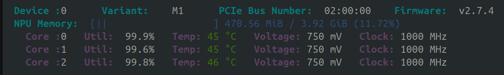
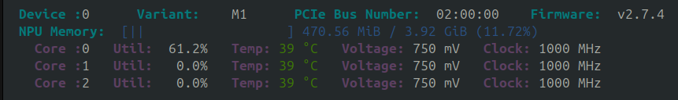
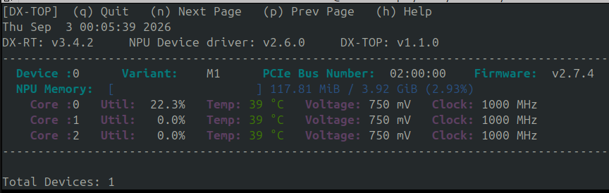
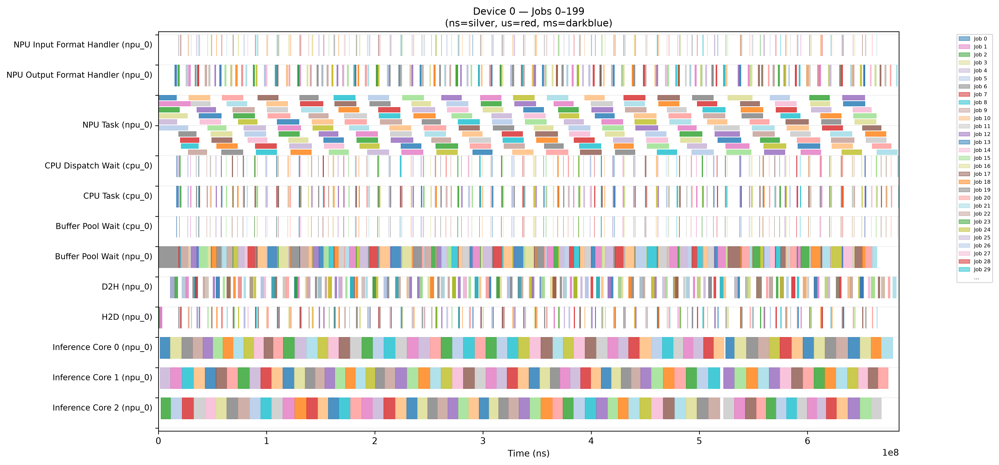
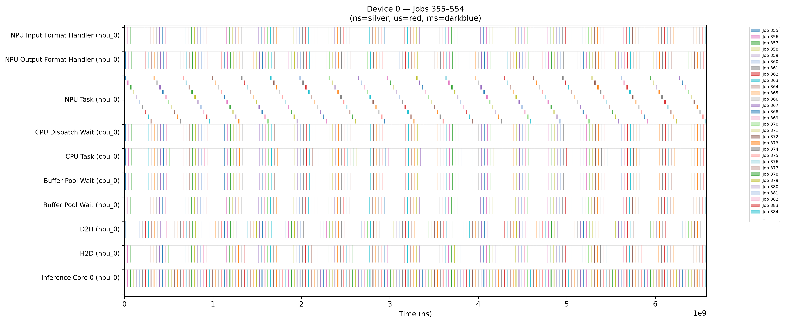

1. Get a model
1. 모델 준비
1. 获取模型
1. モデルの入手
1. Chuẩn bị model
1.1 DEEPX Model Zoo (web)
1.1 DEEPX Model Zoo (웹)
1.1 DEEPX Model Zoo（网页）
1.1 DEEPX Model Zoo（Web）
1.1 DEEPX Model Zoo (web)
developer.deepx.ai/modelzoo
hosts DEEPX's catalog of pre-compiled .dxnn models, organized
by task (object detection, pose estimation, segmentation, classification,
and more). Browse to the model you need and download its .dxnn
file directly — no compiler step required.
developer.deepx.ai/modelzoo에서 태스크별(객체 검출, 포즈 추정, 세그멘테이션, 분류 등)로 정리된 DEEPX의 사전 컴파일 .dxnn 모델 카탈로그를 제공합니다. 필요한 모델을 찾아 .dxnn 파일을 바로 내려받으면 되며, 별도 컴파일 과정은 필요 없습니다.
developer.deepx.ai/modelzoo 按任务（目标检测、姿态估计、分割、分类等）分类提供 DEEPX 预编译的 .dxnn 模型。找到所需模型后直接下载其 .dxnn 文件即可，无需编译。
developer.deepx.ai/modelzoo では、
DEEPX のコンパイル済み .dxnn モデルをタスク別（物体検出、姿勢推定、セグメンテーション、
分類など）に公開しています。必要なモデルを探して .dxnn ファイルを直接ダウンロードでき、
コンパイルは不要です。
developer.deepx.ai/modelzoo là danh mục các model .dxnn đã biên dịch sẵn của DEEPX, được phân loại theo tác vụ (object detection, pose estimation, segmentation, classification, v.v.). Tìm model cần dùng và tải trực tiếp file .dxnn, không cần bước biên dịch.
Grabbing one or two specific models — e.g. to test a customer's exact use case, or a model that isn't part of the dx_app demo set.
특정 모델 한두 개만 필요할 때 적합합니다. 예를 들어 고객의 실제 사용 사례에 맞는 모델이나 dx_app 데모 세트에 없는 모델을 테스트할 때 사용합니다.
只需获取一两个特定模型，例如测试客户的具体使用场景，或测试 dx_app 演示集中未包含的模型。
特定のモデルを 1〜2 個だけ入手する場合。たとえば、顧客の具体的なユースケースに合わせたモデルや、dx_app のデモセットに含まれないモデルをテストする場合です。
Cần lấy một hoặc hai model cụ thể, ví dụ để thử đúng use case của khách hàng, hoặc model không có trong bộ demo của dx_app.
1.2 In bulk, via dx_app
1.2 dx_app으로 일괄 다운로드
1.2 通过 dx_app 批量下载
1.2 dx_app による一括ダウンロード
1.2 Tải hàng loạt qua dx_app
dx_app/setup.sh (which wraps setup_sample_models.sh)
downloads models directly from the DEEPX ModelZoo backend, with fine-grained
control over what gets pulled:
dx_app/setup.sh(내부적으로 setup_sample_models.sh 호출)는 DEEPX ModelZoo 백엔드에서 모델을 직접 내려받으며, 받을 모델을 세밀하게 지정할 수 있습니다:
dx_app/setup.sh（封装了 setup_sample_models.sh）直接从 DEEPX ModelZoo 后端下载模型，并可精细控制下载内容：
dx_app/setup.sh（内部で setup_sample_models.sh を使用）は、
DEEPX ModelZoo のバックエンドから直接モデルをダウンロードします。取得する対象を細かく指定できます：
dx_app/setup.sh (gọi setup_sample_models.sh bên trong) tải model trực tiếp từ backend DEEPX ModelZoo và cho phép chọn chi tiết những gì cần tải:
cd dx_app
./setup.sh --list # list all available models, no download
./setup.sh --dry-run # preview what --all would download
./setup.sh --demo-models # only the models used by run_demo.sh
./setup.sh --category=object_detection # one task category
./setup.sh --models yolov7 yolov8n_seg # specific models by name
./setup.sh --all # everything (models + sample videos)
./setup.sh --all --workers=8 # more parallel download threads
--all downloads every model (497 in Model Zoo 2_5_0, about 45GB) and every
sample video (about 1.2GB), so it needs roughly 50GB of free disk space. If you only need a
subset, use --category, --models, or --demo-models instead — or run
--dry-run first to see what would be downloaded before committing to it.
--all은 모든 모델(Model Zoo 2_5_0 기준 497개, 약 45GB)과 모든 샘플 비디오(약 1.2GB)를 내려받으므로 약 50GB의 디스크 여유 공간이 필요합니다. 일부만 필요하다면 --category, --models, --demo-models를 사용하거나, 먼저 --dry-run으로 다운로드 대상을 확인한 뒤 진행하세요.
--all 会下载全部模型（Model Zoo 2_5_0 共 497 个，约 45GB）和全部示例视频（约 1.2GB），需要约 50GB 的可用磁盘空间。如只需部分模型，请改用 --category、--models 或 --demo-models，也可以先运行 --dry-run 查看将下载的内容，再决定是否继续。
--all はすべてのモデル（Model Zoo 2_5_0 で 497 個、約 45GB）とすべてのサンプル動画（約 1.2GB）を
ダウンロードするため、約 50GB の空きディスク容量が必要です。一部だけが必要な場合は、代わりに --category、
--models、--demo-models を使用するか、先に --dry-run を実行してダウンロード対象を確認してください。
--all tải toàn bộ model (497 model trong Model Zoo 2_5_0, khoảng 45GB) và toàn bộ video mẫu (khoảng 1.2GB), nên cần khoảng 50GB dung lượng trống. Nếu chỉ cần một phần, hãy dùng --category, --models hoặc --demo-models, hoặc chạy --dry-run trước để xem danh sách sẽ tải trước khi thực hiện.
| Option | Description | 옵션 | 설명 | 选项 | 说明 | オプション | Tùy chọn | 説明 | Mô tả |
|---|---|---|---|---|---|---|---|---|---|
--all | Download all models non-interactively | --all | 모든 모델을 비대화형으로 다운로드 | --all | 非交互式下载全部模型 | --all | すべてのモデルを非対話的にダウンロード | --all | Tải toàn bộ model ở chế độ không tương tác |
--dry-run | List what would be downloaded, without downloading | --dry-run | 실제 다운로드 없이 목록만 표시 | --dry-run | 仅列出将下载的内容，不实际下载 | --dry-run | ダウンロードせずに対象を一覧表示 | --dry-run | Liệt kê những gì sẽ được tải mà không thực sự tải |
--list | List available models without downloading | --list | 다운로드 없이 사용 가능한 모델 목록 표시 | --list | 仅列出可用模型，不下载 | --list | ダウンロードせずに利用可能なモデル一覧を表示 | --list | Liệt kê các model có sẵn mà không tải |
--demo-models | Only the models used by run_demo.sh | --demo-models | run_demo.sh에서 사용하는 모델만 다운로드 | --demo-models | 仅下载 run_demo.sh 使用的模型 | --demo-models | run_demo.sh で使用するモデルのみ | --demo-models | Chỉ các model mà run_demo.sh sử dụng |
--category=<name> | Only models in one task category | --category=<name> | 특정 태스크 카테고리의 모델만 다운로드 | --category=<name> | 仅下载指定任务分类下的模型 | --category=<name> | 特定のタスクカテゴリのモデルのみ | --category=<name> | Chỉ các model thuộc một nhóm tác vụ |
--models <m1> [m2...] | Specific models by name | --models <m1> [m2...] | 지정한 이름의 모델만 다운로드 | --models <m1> [m2...] | 按名称下载指定模型 | --models <m1> [m2...] | 名前で指定したモデルのみ | --models <m1> [m2...] | Các model cụ thể theo tên |
--workers=<N> | Parallel download threads (default: 4) | --workers=<N> | 병렬 다운로드 스레드 수 (기본값: 4) | --workers=<N> | 并行下载线程数（默认值：4） | --workers=<N> | 並列ダウンロードスレッド数（デフォルト：4） | --workers=<N> | Số thread tải song song (mặc định: 4) |
--no-json | Skip JSON file downloads | --no-json | JSON 파일 다운로드 건너뜀 | --no-json | 跳过 JSON 文件下载 | --no-json | JSON ファイルのダウンロードをスキップ | --no-json | Bỏ qua việc tải file JSON |
--no-force | Skip files that already exist (default: overwrite) | --no-force | 이미 존재하는 파일은 건너뜀 (기본값은 강제 덮어쓰기) | --no-force | 跳过已存在的文件（默认强制覆盖） | --no-force | 既存のファイルをスキップ（デフォルトは強制上書き） | --no-force | Bỏ qua file đã tồn tại (mặc định là ghi đè) |
--manifest=<path> | Use an alternate model manifest JSON | --manifest=<path> | 대체 모델 매니페스트 JSON 사용 | --manifest=<path> | 使用其他模型清单 JSON 文件 | --manifest=<path> | 別のモデルマニフェスト JSON を使用 | --manifest=<path> | Dùng file manifest JSON khác |
Models land in dx_app/assets/models/, sample videos in dx_app/assets/videos/.
모델은 dx_app/assets/models/에, 샘플 비디오는 dx_app/assets/videos/에 저장됩니다.
模型保存在 dx_app/assets/models/，示例视频保存在 dx_app/assets/videos/。
モデルは dx_app/assets/models/ に、サンプル動画は dx_app/assets/videos/ に保存されます。
Model được lưu vào dx_app/assets/models/, video mẫu vào dx_app/assets/videos/.
Setting up a full evaluation environment in one go, or script/CI-friendly downloads. The old air-gapped/internal-network copy mode (--internal) was removed in dx_app v3.3.0: the option is still accepted but only prints a warning and is ignored, and models and videos always come from the DEEPX server (sdk.deepx.ai). For extra settings such as a TLS-inspecting proxy, see the Environment section of ./setup.sh --help.
전체 평가 환경을 한 번에 구축하거나, 스크립트/CI에서 다운로드할 때 적합합니다. 예전의 폐쇄망/내부망 복사 모드(--internal)는 dx_app v3.3.0에서 제거되었습니다. 이 옵션을 지정해도 경고만 출력하고 무시되며, 모델과 비디오는 항상 DEEPX 서버(sdk.deepx.ai)에서 받습니다. TLS 검사 프록시 환경 등 추가 설정은 ./setup.sh --help의 Environment 항목을 참고하세요.
一次性搭建完整的评估环境，或需要便于脚本/CI 使用的下载方式。原有的离线/内网复制模式（--internal）已在 dx_app v3.3.0 中移除：该选项仍可传入，但只会打印警告并被忽略，模型和视频始终从 DEEPX 服务器（sdk.deepx.ai）下载。TLS 检查代理等其他设置请参阅 ./setup.sh --help 的 Environment 部分。
評価環境を一括で構築する場合や、スクリプト/CI でダウンロードする場合に適しています。以前のエアギャップ/社内ネットワーク向けコピーモード（--internal）は dx_app v3.3.0 で削除されました。オプションは引き続き受け付けますが、警告を表示して無視されます。モデルと動画は常に DEEPX サーバー（sdk.deepx.ai）から取得します。TLS 検査プロキシなどの追加設定については、./setup.sh --help の Environment セクションを参照してください。
Cần dựng toàn bộ môi trường đánh giá trong một lần, hoặc cần tải tự động bằng script/CI. Chế độ sao chép cho mạng nội bộ/air-gapped cũ (--internal) đã bị loại bỏ trong dx_app v3.3.0: tùy chọn này vẫn được chấp nhận nhưng chỉ in cảnh báo và bị bỏ qua; model và video luôn được tải từ máy chủ DEEPX (sdk.deepx.ai). Với các thiết lập bổ sung như proxy kiểm tra TLS, xem mục Environment trong ./setup.sh --help.
2. dxrun deep dive
2. dxrun 심화
2. dxrun 详解
2. dxrun 詳細解説
2. dxrun chuyên sâu
dxrun (source: dx_rt/cli/dxrun.cpp; legacy alias:
run_model) loads one .dxnn model straight onto
the NPU and measures its raw performance — the model-level number,
independent of any application logic around it.
dxrun(소스: dx_rt/cli/dxrun.cpp, 레거시 별칭: run_model)은 .dxnn 모델 하나를 NPU에 직접 로드해 순수 성능을 측정합니다. 주변 애플리케이션 로직과 무관한 모델 레벨 수치입니다.
dxrun（源码：dx_rt/cli/dxrun.cpp；旧别名：run_model）将单个 .dxnn 模型直接加载到 NPU 上，测量其原始性能，即不受外围应用逻辑影响的模型级数值。
dxrun（ソース：dx_rt/cli/dxrun.cpp、レガシーエイリアス：
run_model）は、1 つの .dxnn モデルを NPU に直接ロードして、
その素の性能を測定します。周辺のアプリケーションロジックに依存しない、モデルレベルの数値です。
dxrun (mã nguồn: dx_rt/cli/dxrun.cpp; alias cũ: run_model) nạp trực tiếp một model .dxnn lên NPU và đo hiệu năng thuần, tức con số ở mức model, không phụ thuộc vào logic ứng dụng bao quanh.
2.1 Maximum throughput (benchmark mode)
2.1 최대 처리량 (벤치마크 모드)
2.1 最大吞吐量（benchmark 模式）
2.1 最大スループット（ベンチマークモード）
2.1 Throughput tối đa (benchmark mode)
Benchmark mode (-b) is the default when none of --single,
--fps > 0, or --max-throughput is given. It pushes the NPU to its maximum sustainable
throughput with a fixed --buffer-count (default 6).
벤치마크 모드(-b)는 --single, --fps > 0, --max-throughput을 지정하지 않았을 때의 기본 모드입니다. 고정된 --buffer-count(기본값 6)로 NPU를 지속 가능한 최대 처리량까지 끌어올립니다.
未指定 --single、--fps > 0 或 --max-throughput 时，benchmark 模式（-b）为默认模式。该模式以固定的 --buffer-count（默认 6）让 NPU 达到可持续的最大吞吐量。
--single、--fps > 0、--max-throughput のいずれも指定しない場合は、
ベンチマークモード（-b）がデフォルトです。固定の --buffer-count（デフォルト 6）で、
NPU を持続可能な最大スループットで動作させます。
Benchmark mode (-b) là chế độ mặc định khi không chỉ định --single, --fps > 0 hay --max-throughput. Chế độ này đẩy NPU lên mức throughput tối đa có thể duy trì, với --buffer-count cố định (mặc định 6).
DX-RT v3.5.0 adds a --max-throughput mode. It measures throughput across buffer counts and recommends the
smallest --buffer-count within a tolerance (--sweep-tolerance, default 1%) of the peak. Add
-t or -l and it goes on to benchmark at the recommended value. Before each measurement it waits
until the NPU cools below --cool-down-temp (default 45°C), so it can take a few minutes. On this PC it
recommended buffer-count 7 (338 FPS), slightly above the default of 6 (about 304–320 FPS).
DX-RT v3.5.0에 --max-throughput 모드가 추가되었습니다. 버퍼 개수를 바꿔 가며 처리량을 측정하고, 최고치 대비 허용 오차(--sweep-tolerance, 기본값 1%) 안에 드는 가장 작은 --buffer-count를 추천합니다. -t나 -l을 함께 지정하면 추천값으로 벤치마크까지 이어서 실행합니다. 측정마다 NPU 온도가 --cool-down-temp(기본값 45°C) 아래로 내려갈 때까지 기다리므로 몇 분이 걸릴 수 있습니다. 이 PC에서는 buffer-count 7(338 FPS)을 추천했으며, 기본값 6(약 304~320 FPS)보다 조금 높았습니다.
DX-RT v3.5.0 新增了 --max-throughput 模式。该模式在不同缓冲区数量下测量吞吐量，并推荐与峰值相差在容差（--sweep-tolerance，默认 1%）以内的最小 --buffer-count。同时指定 -t 或 -l 时，会接着使用推荐值进行基准测试。每次测量前会等待 NPU 温度降至 --cool-down-temp（默认 45°C）以下，因此可能需要几分钟。本机推荐的 buffer-count 为 7（338 FPS），略高于默认值 6（约 304~320 FPS）。
DX-RT v3.5.0 では --max-throughput モードが追加されました。バッファ数を変えながらスループットを測定し、ピークから許容範囲
（--sweep-tolerance、デフォルト 1%）内に収まる最小の --buffer-count を推奨します。-t または
-l を付けると、続けて推奨値でベンチマークを実行します。各測定の前に NPU 温度が --cool-down-temp（デフォルト 45°C）を
下回るまで待機するため、数分かかる場合があります。この PC では buffer-count 7（338 FPS）が推奨され、デフォルトの 6（約 304〜320 FPS）よりわずかに高い値でした。
DX-RT v3.5.0 bổ sung chế độ --max-throughput. Chế độ này đo throughput với nhiều giá trị buffer count khác nhau và đề xuất --buffer-count nhỏ nhất có throughput nằm trong ngưỡng sai lệch (--sweep-tolerance, mặc định 1%) so với giá trị đỉnh. Nếu thêm -t hoặc -l, lệnh sẽ tiếp tục chạy benchmark với giá trị đề xuất. Trước mỗi lần đo, lệnh chờ đến khi NPU nguội xuống dưới --cool-down-temp (mặc định 45°C), nên có thể mất vài phút. Trên PC này, giá trị đề xuất là buffer-count 7 (338 FPS), cao hơn một chút so với mặc định 6 (khoảng 304–320 FPS).
# Run for a fixed duration (recommended — more stable than a fixed loop count)
dxrun -m model.dxnn --use-ort -t 30
# Increase input/output buffer count for pipelined throughput
dxrun -m model.dxnn --use-ort -t 30 --buffer-count 8
# DX-RT v3.5.0+: sweep buffer counts, recommend one, then benchmark at it
dxrun -m model.dxnn --use-ort --max-throughput -t 30
# Multi-device systems only: choose which devices (chips) to use
dxrun -m model.dxnn --use-ort -t 30 -d 0,1-d selects devices (chips), not NPU cores. On a single-device system -d 0,1 fails with Invalid device number 1; to pick cores, use -n from 2.4. Check dxtop while this runs — all three cores stay near saturation, and Temp climbs accordingly:
-d는 NPU 코어가 아니라 디바이스(칩)를 선택합니다. 디바이스가 하나뿐인 시스템에서 -d 0,1을 지정하면 Invalid device number 1 오류가 발생하므로, 코어를 선택하려면 2.4의 -n을 사용하세요. 실행 중 dxtop을 확인하면 3개 코어 모두 포화에 가깝게 유지되고 Temp도 그만큼 상승합니다:
-d 选择的是设备（芯片），而不是 NPU 核心。在单设备系统上指定 -d 0,1 会报 Invalid device number 1 错误；如需选择核心，请使用 2.4 节的 -n。运行期间请查看 dxtop：3 个核心都接近饱和，Temp 也随之上升：
-d は NPU コアではなくデバイス（チップ）を選択するオプションです。デバイスが 1 つのシステムで -d 0,1 を指定すると Invalid device number 1 エラーになります。コアを選択するには、2.4 の -n を使用してください。実行中は dxtop を確認してください。3 コアすべてが飽和に近い状態を維持し、それに応じて Temp も上昇します：
-d chọn thiết bị (chip), không phải NPU core. Trên hệ thống chỉ có một thiết bị, -d 0,1 sẽ báo lỗi Invalid device number 1; để chọn core, dùng -n (mục 2.4). Theo dõi dxtop trong lúc chạy: cả ba core đều gần mức bão hòa và Temp tăng tương ứng:

dxtop during a benchmark-mode run (captured on DX-RT v3.4.2) — all 3 cores at 99.9% / 99.6% / 99.8% Util, 45–46°C. Re-measured on DX-RT v3.5.0 with --use-ort: 86–88%, 47°C. This is the "before" picture — compare it to the target-FPS capture in 2.3, where the same board barely leaves idle.
벤치마크 모드 실행 중 dxtop 화면(DX-RT v3.4.2에서 캡처). 3개 코어 모두 Util 99.9% / 99.6% / 99.8%, 45–46°C입니다. DX-RT v3.5.0에서 --use-ort를 붙여 다시 측정한 결과는 86~88%, 47°C였습니다. 이 화면이 비교 기준(before)이며, 같은 보드가 유휴 상태를 거의 벗어나지 않는 2.3의 target-FPS 캡처와 비교해 보세요.
dxtop 在 benchmark 模式运行期间的画面（截取于 DX-RT v3.4.2）：3 个核心的 Util 分别为 99.9% / 99.6% / 99.8%，温度 45–46°C。在 DX-RT v3.5.0 上使用 --use-ort 重新测得 86~88%、47°C。这是“对比前”的画面，请与 2.3 节的 target-FPS 截图对比，后者中同一块板卡几乎保持空闲。
ベンチマークモード実行中の dxtop（DX-RT v3.4.2 で取得）。3 コアすべての Util が 99.9% / 99.6% / 99.8%、温度は 45–46°C です。DX-RT v3.5.0 で --use-ort を付けて再測定した結果は 86〜88%、47°C でした。これが「before」の状態です。同じボードがほぼアイドルのままの 2.3 の target-FPS キャプチャと比較してください。
dxtop khi chạy benchmark mode (chụp trên DX-RT v3.4.2): Util của cả 3 core là 99.9% / 99.6% / 99.8%, 45–46°C. Đo lại trên DX-RT v3.5.0 với --use-ort: 86–88%, 47°C. Đây là ảnh "trước" để so sánh với ảnh chụp target-FPS ở 2.3, khi cùng board đó gần như vẫn ở trạng thái idle.
2.2 Single-core, sequential execution (-s, --single)
2.2 단일 코어, 순차 실행 (-s, --single)
2.2 单核顺序执行（-s, --single）
2.2 シングルコア逐次実行（-s, --single）
2.2 Chạy tuần tự trên một core (-s, --single)
Use -s / --single instead for a
single-core, sequential latency measurement (one input
at a time — this is the number you want when the question is
"how long does one inference take", not "how many per second").
단일 코어, 순차 실행 방식으로 지연시간을 측정하려면 -s / --single을 사용하세요(한 번에 입력 하나씩). "초당 몇 회 처리하는가"가 아니라 "1회 추론에 걸리는 시간"을 알고 싶을 때 필요한 수치입니다.
如需测量单核、顺序执行的延迟，请改用 -s / --single（每次只处理一个输入。当问题是“一次推理需要多久”而不是“每秒能处理多少次”时，应使用此数值）。
シングルコアで逐次実行したときのレイテンシを測定するには、代わりに -s / --single を
使用します（入力を 1 つずつ処理します。知りたいのが「1 回の推論にかかる時間」であり、
「1 秒あたりの処理数」ではない場合に使う値です）。
Thay vào đó, dùng -s / --single để đo latency khi chạy tuần tự trên một core (mỗi lần một input). Đây là con số cần dùng khi câu hỏi là "một lần inference mất bao lâu", không phải "bao nhiêu lần mỗi giây".
# -s prints one result block per loop, so keep -l small
dxrun -m assets/models/yolo26-n_640x640.dxnn -v -l 10 --use-ort -sThe performance numbers shown throughout this guide (FPS, latency, NPU Processing Time, temperatures, etc.) are reference measurements from one specific test system, captured for demonstration purposes. Results will vary depending on host CPU, PCIe configuration, DX-RT/driver version, model compilation settings, and overall system configuration — use them to understand the shape of the results, not as an official performance specification for DX-M1 or YOLO26n.
이 가이드의 성능 수치(FPS, 지연시간, NPU Processing Time, 온도 등)는 특정 테스트 시스템 한 대에서 시연용으로 측정한 참고값입니다. 결과는 호스트 CPU, PCIe 구성, DX-RT/드라이버 버전, 모델 컴파일 설정, 전체 시스템 구성에 따라 달라집니다. DX-M1이나 YOLO26n의 공식 성능 사양이 아니므로, 결과의 전반적인 경향을 파악하는 용도로만 참고하세요.
本指南中的所有性能数据（FPS、延迟、NPU Processing Time、温度等）均为某一特定测试系统上的参考测量值，仅用于演示。实际结果会因主机 CPU、PCIe 配置、DX-RT/驱动版本、模型编译设置和整体系统配置而不同。这些数据仅用于了解结果的大致特征，不应视为 DX-M1 或 YOLO26n 的官方性能规格。
本ガイドに掲載している性能値（FPS、レイテンシ、NPU Processing Time、 温度など）は、特定のテストシステム 1 台で取得した参考測定値であり、 説明のために示しています。結果はホスト CPU、PCIe 構成、DX-RT/ドライバの バージョン、モデルのコンパイル設定、システム全体の構成によって異なります。 これらの値は結果の傾向を把握するために使用し、DX-M1 や YOLO26n の 公式な性能仕様とはみなさないでください。
Các số liệu hiệu năng trong hướng dẫn này (FPS, latency, NPU Processing Time, nhiệt độ, v.v.) là số đo tham khảo trên một hệ thống thử nghiệm cụ thể, dùng cho mục đích minh họa. Kết quả sẽ khác nhau tùy CPU host, cấu hình PCIe, phiên bản DX-RT/driver, thiết lập biên dịch model và cấu hình hệ thống nói chung. Hãy dùng các số liệu này để nắm xu hướng kết quả, không coi là thông số hiệu năng chính thức của DX-M1 hay YOLO26n.
Notice the label changed to "Benchmark Result (single input)". -s issues requests
one at a time, strictly sequentially, and reports per-request statistics instead of the
pipelined-throughput view from 2.1's default mode. On DX-RT v3.5.0, -s prints
one result block per loop (300 blocks for -l 300), so the example uses -l 10 and
the output above is one representative block. Values vary from loop to loop: on this PC the E2E Response Time ranged
15–22 ms and FPS 44–64. How to read the five numbers:
- NPU Processing Time (7.172 ms) is only the time the NPU core itself spends computing — it excludes moving data to/from the device, and it barely changes from loop to loop.
- Latency (14.475 ms) is the core latency excluding buffer-pool and queue waits, about 7.3 ms above
the NPU Processing Time. That gap matches what the 2.3 profiler table shows directly:
H2D transfer (~1.5 ms), D2H transfer (~2.3 ms), NPU Output Format Handler (~2.4 ms), plus the
post-graph that
--use-ortruns on the CPU (CPU Task, ~1.2 ms) — about 7.4 ms in total. With-sthere's no other request in flight to hide that overhead behind, so it shows up in full on every one. - E2E Response Time (15.501 ms) adds the queue wait (Queue Wait Time, ~1 ms) for the full round trip.
- FPS (63.86) is essentially
1000 / E2E Response Time(1000 / 15.501 ≈ 64.5). This is the key thing-stells you: when there is no pipelining at all — no next request queued up while the current one is still finishing — this is the honest, worst-case throughput ceiling for a single stream of strictly sequential requests on one NPU core. It is far below the multi-hundred-FPS numbers from benchmark mode, and that's expected: benchmark mode overlaps many in-flight requests across all 3 cores to hide exactly this transfer/format-handling overhead, while-sdeliberately refuses to.
결과 레이블이 "Benchmark Result (single input)"로 바뀐 것을 확인하세요. -s는 요청을 한 번에 하나씩, 엄격히 순차적으로 실행하며, 2.1의 기본 모드처럼 파이프라인 처리량이 아니라 요청별 통계를 보고합니다. DX-RT v3.5.0에서는 -s가 루프마다 결과 블록을 하나씩 출력하므로(-l 300이면 300개), 예시에서는 -l 10을 사용했고 위 출력은 그중 대표 블록 하나입니다. 값은 루프마다 달라지며, 이 PC에서는 E2E Response Time이 15~22ms, FPS가 44~64 범위였습니다. 다섯 가지 수치는 다음과 같이 해석합니다:
- NPU Processing Time (7.172ms)은 NPU 코어 자체의 연산 시간만 나타내며, 디바이스와 데이터를 주고받는 시간은 포함하지 않습니다. 루프가 바뀌어도 거의 변하지 않습니다.
- Latency (14.475ms)는 버퍼 풀·큐 대기를 제외한 코어 지연시간으로, NPU Processing Time보다 약 7.3ms 깁니다. 이 차이는 2.3의 프로파일러 표에 직접 나타나는 H2D 전송(~1.5ms), D2H 전송(~2.3ms), NPU Output Format Handler(~2.4ms)와
--use-ort가 CPU에서 실행하는 후단 그래프(CPU Task, ~1.2ms)를 합한 약 7.4ms와 일치합니다.-s에서는 이 오버헤드를 가려 줄 다른 요청이 동시에 처리되지 않으므로, 매 요청마다 오버헤드가 그대로 드러납니다. - E2E Response Time (15.501ms)은 여기에 큐 대기(Queue Wait Time, ~1ms)를 더한 전체 왕복 시간입니다.
- FPS (63.86)는 사실상
1000 / E2E Response Time과 같습니다(1000 / 15.501 ≈ 64.5). 이것이-s로 알 수 있는 핵심입니다. 파이프라이닝이 전혀 없을 때, 즉 현재 요청이 끝나기 전에 다음 요청이 큐에 대기하지 않을 때, NPU 코어 1개에서 엄격히 순차적인 단일 스트림 요청이 낼 수 있는 실제 최악 조건의 처리량 상한이 바로 이 값입니다. 벤치마크 모드의 수백 FPS보다 훨씬 낮지만 이는 예상된 결과입니다. 벤치마크 모드는 3개 코어 전체에서 여러 요청을 동시에 처리해 바로 이 전송/포맷 처리 오버헤드를 가리지만,-s는 의도적으로 그렇게 하지 않습니다.
注意标签变为 "Benchmark Result (single input)"。-s 严格按顺序逐个发出请求，报告单个请求的统计数据，而不是 2.1 默认模式下的流水线吞吐量。在 DX-RT v3.5.0 中，-s 每个循环输出一个结果块（-l 300 即输出 300 个），因此示例改用 -l 10，上面的输出是其中一个有代表性的结果块。各循环的数值有所波动：本机测得 E2E Response Time 为 15~22 ms，FPS 为 44~64。五个数值的解读如下：
- NPU Processing Time（7.172 ms）仅为 NPU 核心本身的计算时间，不含与设备之间的数据传输时间，各循环之间几乎不变。
- Latency（14.475 ms）是不含缓冲池和队列等待的核心延迟，比 NPU Processing Time 多约 7.3 ms。该差值与 2.3 节 profiler 表中直接显示的各项之和（约 7.4 ms）相符：H2D 传输（~1.5 ms）、D2H 传输（~2.3 ms）、NPU Output Format Handler（~2.4 ms），以及
--use-ort在 CPU 上运行的后段图（CPU Task，~1.2 ms）。使用-s时没有其他并行请求来掩盖这部分开销，因此每个请求都会完整体现。 - E2E Response Time（15.501 ms）在此基础上再加上队列等待（Queue Wait Time，~1 ms），即完整的往返时间。
- FPS（63.86）基本等于
1000 / E2E Response Time（1000 / 15.501 ≈ 64.5）。这是-s给出的关键信息：在完全没有流水线的情况下（当前请求完成前，下一个请求不会提前排队），这就是一个 NPU 核心处理严格顺序的单路请求时，真实的最坏情况吞吐量上限。它远低于 benchmark 模式下数百 FPS 的结果，这在预期之中：benchmark 模式让多个请求在 3 个核心上重叠执行，正是为了掩盖这些传输/格式处理开销，而-s刻意不这样做。
ラベルが「Benchmark Result (single input)」に変わっている点に注目してください。-s はリクエストを
1 つずつ厳密に逐次発行し、2.1 のデフォルトモードのようなパイプライン化されたスループットではなく、
リクエストごとの統計を出力します。DX-RT v3.5.0 では、-s はループごとに 1 つの結果ブロックを出力するため
（-l 300 では 300 ブロック）、例では -l 10 を使用しています。上の出力は、そのうち代表的な 1 ブロックです。値はループごとに変動し、
この PC では E2E Response Time が 15〜22 ms、FPS が 44〜64 でした。5 つの数値の読み方は次のとおりです：
- NPU Processing Time（7.172 ms）は NPU コア自体が演算に費やした時間のみで、デバイスとのデータ転送は含みません。ループごとの変化はほとんどありません。
- Latency（14.475 ms）はバッファプールとキューの待ち時間を除いたコアレイテンシで、NPU Processing Time より約 7.3 ms 長くなります。
この差は、2.3 のプロファイラ表に直接表示される H2D 転送（~1.5 ms）、D2H 転送（~2.3 ms）、
NPU Output Format Handler（~2.4 ms）に、
--use-ortによって CPU 上で実行される後段グラフ（CPU Task、~1.2 ms）を 加えた合計（約 7.4 ms）と一致します。-sでは、このオーバーヘッドを隠す同時実行中のリクエストがないため、毎回そのまま現れます。 - E2E Response Time（15.501 ms）は、これにキューの待ち時間（Queue Wait Time、~1 ms）を加えた往復全体の時間です。
- FPS（63.86）は実質的に
1000 / E2E Response Timeです（1000 / 15.501 ≈ 64.5）。 これが-sから得られる最も重要な情報です。パイプライン処理がまったくない場合、つまり現在のリクエストが完了する前に次のリクエストが キューに入っていない場合に、1 つの NPU コアで厳密に逐次的なリクエストの単一ストリームが達成できる、実態どおりの最悪ケースのスループット上限です。 ベンチマークモードの数百 FPS を大きく下回りますが、これは想定どおりです。ベンチマークモードは 3 コアすべてで多数のリクエストを同時に処理することで、まさにこの 転送/フォーマット処理のオーバーヘッドを隠しますが、-sは意図的にそれを行わないためです。
Lưu ý nhãn đã đổi thành "Benchmark Result (single input)". -s gửi request lần lượt từng cái một, tuần tự nghiêm ngặt và báo cáo thống kê theo từng request, thay vì thống kê throughput dạng pipeline như chế độ mặc định ở 2.1. Trên DX-RT v3.5.0, -s in ra một khối kết quả cho mỗi vòng lặp (300 khối với -l 300), nên ví dụ dùng -l 10 và output ở trên là một khối tiêu biểu. Giá trị thay đổi giữa các vòng: trên PC này E2E Response Time dao động 15–22 ms và FPS 44–64. Ý nghĩa của năm con số:
- NPU Processing Time (7.172 ms) chỉ là thời gian NPU core thực sự tính toán, không bao gồm thời gian truyền dữ liệu tới/từ thiết bị, và hầu như không đổi giữa các vòng.
- Latency (14.475 ms) là core latency, không tính thời gian chờ buffer pool và queue, cao hơn NPU Processing Time khoảng 7.3 ms. Khoảng chênh này khớp với số liệu trong bảng profiler ở 2.3: truyền H2D (~1.5 ms), truyền D2H (~2.3 ms), NPU Output Format Handler (~2.4 ms), cộng với phần post-graph mà
--use-ortchạy trên CPU (CPU Task, ~1.2 ms), tổng cộng khoảng 7.4 ms. Với-s, không có request nào khác chạy song song để che phần overhead này, nên overhead xuất hiện đầy đủ ở mọi request. - E2E Response Time (15.501 ms) cộng thêm thời gian chờ hàng đợi (Queue Wait Time, ~1 ms), tức toàn bộ thời gian một vòng đi-về.
- FPS (63.86) về cơ bản bằng
1000 / E2E Response Time(1000 / 15.501 ≈ 64.5). Đây là thông tin quan trọng nhất mà-scung cấp: khi hoàn toàn không có pipelining (không có request kế tiếp chờ sẵn trong lúc request hiện tại chưa xong), đây là mức trần throughput thực tế trong trường hợp xấu nhất cho một luồng request tuần tự nghiêm ngặt trên một NPU core. Con số này thấp hơn nhiều so với hàng trăm FPS ở benchmark mode, và điều đó là bình thường: benchmark mode cho nhiều request chạy chồng lên nhau trên cả 3 core để che chính overhead truyền dữ liệu/xử lý định dạng này, còn-scố ý không làm vậy.
Check dxtop while this runs — with -s, only a single NPU core shows activity; the rest stay idle:
실행 중 dxtop을 확인하면, -s에서는 NPU 코어 하나만 동작하고 나머지는 유휴 상태로 유지됩니다:
运行期间请查看 dxtop：使用 -s 时，只有一个 NPU 核心有活动，其余核心保持空闲：
実行中は dxtop を確認してください。-s では 1 つの NPU コアだけが動作し、残りはアイドル状態のままです：
Theo dõi dxtop trong lúc chạy: với -s, chỉ một NPU core hoạt động, các core còn lại ở trạng thái idle:

dxtop during dxrun -s — only one core's Util moves off idle; the others stay at ~0%, confirming --single really does run sequentially on a single core rather than spreading work across all of them like benchmark mode does.
dxrun -s 실행 중 dxtop 화면. 코어 하나의 Util만 유휴 상태를 벗어나고 나머지는 ~0%를 유지합니다. --single이 벤치마크 모드처럼 전체 코어에 작업을 분산하지 않고, 실제로 코어 하나에서 순차 실행됨을 알 수 있습니다.
dxrun -s 运行期间的 dxtop 画面：只有一个核心的 Util 离开空闲状态，其余核心保持在 ~0%，证明 --single 确实在单个核心上顺序执行，而不像 benchmark 模式那样将工作分散到所有核心。
dxrun -s 実行中の dxtop。1 つのコアの Util だけがアイドル状態から変化し、他のコアは ~0% のままです。--single がベンチマークモードのように全コアへ処理を分散せず、実際に単一コアで逐次実行していることがわかります。
dxtop khi chạy dxrun -s: chỉ Util của một core thay đổi, các core khác giữ ở ~0%. Điều này xác nhận --single thực sự chạy tuần tự trên một core, thay vì phân bổ công việc ra tất cả các core như benchmark mode.
2.3 FPS-limited mode (-f, --fps)
2.3 FPS 제한 모드 (-f, --fps)
2.3 FPS 限制模式（-f, --fps）
2.3 FPS 制限モード（-f, --fps）
2.3 Chế độ giới hạn FPS (-f, --fps)
For many camera-based edge applications, maximum throughput is rarely how a model runs in production — a 30 fps camera feed doesn't need the NPU running flat-out, since inference demand is bounded by the input frame rate. Target-FPS mode caps the input rate to a fixed FPS so you can check latency and stability under a representative, capped load instead of a saturated one, on the exact same model you benchmarked in 2.1.
많은 카메라 기반 엣지 애플리케이션에서는 실제 운영 환경에서 모델을 최대 처리량으로 실행하는 경우가 드뭅니다. 추론 수요가 입력 프레임 속도로 제한되므로, 30fps 카메라 입력이라면 NPU를 최대로 가동할 필요가 없습니다. target-FPS 모드는 입력 속도를 고정 FPS로 제한하므로, 2.1에서 벤치마크한 것과 동일한 모델로 포화 부하가 아닌 상한을 둔 대표적인 부하에서의 지연시간과 안정성을 확인할 수 있습니다.
对许多基于摄像头的边缘应用来说，生产环境中的模型很少以最大吞吐量运行：30fps 的摄像头输入并不需要 NPU 全速运行，因为推理需求受输入帧率限制。target-FPS 模式将输入速率限制为固定 FPS，以便在 2.1 节基准测试过的同一模型上，检查有代表性的受限负载下的延迟和稳定性，而非饱和状态下的表现。
カメラベースのエッジアプリケーションの多くでは、本番環境でモデルが最大 スループットで動作することはほとんどありません。推論の需要は入力フレームレートで 制限されるため、30 fps のカメラ入力では NPU をフル稼働させる必要はありません。 target-FPS モードは入力レートを一定の FPS に制限し、2.1 でベンチマークしたものと まったく同じモデルで、飽和状態ではなく代表的な制限付き負荷でのレイテンシと 安定性を確認できます。
Với nhiều ứng dụng edge dùng camera, model hiếm khi chạy ở throughput tối đa trong môi trường thực tế: luồng camera 30 fps không cần NPU chạy hết công suất vì nhu cầu inference bị giới hạn bởi frame rate đầu vào. Chế độ target-FPS giới hạn tốc độ đầu vào ở một mức FPS cố định, cho phép kiểm tra latency và độ ổn định dưới tải tiêu biểu có giới hạn thay vì tải bão hòa, trên đúng model đã benchmark ở mục 2.1.
Target-FPS mode automatically activates whenever -f is
greater than 0 and --single is not set — it's
mutually exclusive with 2.2's single-core mode. Combine
it with -v to see per-frame NPU processing time and latency.
-f가 0보다 크고 --single이 지정되지 않으면 target-FPS 모드가 자동으로 활성화되며, 2.2의 단일 코어 모드와는 함께 사용할 수 없습니다. -v를 함께 사용하면 프레임별 NPU 처리 시간과 지연시간을 확인할 수 있습니다.
只要 -f 大于 0 且未设置 --single，就会自动启用 target-FPS 模式，该模式与 2.2 节的单核模式互斥。结合 -v 可查看每帧的 NPU 处理时间和延迟。
target-FPS モードは、-f が 0 より大きく、--single が指定されていない
場合に自動的に有効になります。2.2 のシングルコアモードとは併用できません。
-v と組み合わせると、フレームごとの NPU 処理時間とレイテンシを確認できます。
Chế độ target-FPS tự động được kích hoạt khi -f lớn hơn 0 và không đặt --single; chế độ này không dùng đồng thời được với chế độ single-core ở mục 2.2. Kết hợp với -v để xem NPU processing time và latency của từng frame.
# Cap the input rate at 30 fps (matches a typical camera feed) for 30 seconds,
# with the profiler enabled so we get a per-stage breakdown of this exact load
dxrun -m assets/models/yolo26-n_640x640.dxnn --use-ort -f 30 -t 30 --profiler -v
FPS (30.30) lands exactly on the -f 30 target, confirming the throttle works, and
NPU Processing Time (7.169 ms) / Latency (14.939 ms) fall in the same range as the
single-core, no-pipelining numbers measured with -s in 2.2 (7.172 ms / 14.475 ms;
Latency moves between 15 and 19 ms from run to run). That's not a coincidence, and the profiler table above proves it
directly: only Inference Core 0 appears — no Core 1 or Core 2 row at all — meaning this 30 fps load really
is being served by one physical core the entire time, exactly like -s forces in 2.2, just without needing the flag.
At 30 fps the NPU is nowhere near the ~320 fps ceiling from 2.1, so a single core alone can keep up —
there is no reason for the runtime to spread the work across more cores. Since DX-RT v3.5.0 the profiler summary also ends with
E2E Response Time Average and Latency Average in microseconds.
FPS(30.30)가 -f 30 목표값과 정확히 일치하므로 속도 제한이 제대로 동작함을 알 수 있습니다. NPU Processing Time(7.169ms) / Latency(14.939ms)는 2.2에서 -s로 측정한 단일 코어, 파이프라이닝 없음 수치(7.172ms / 14.475ms)와 같은 범위입니다(Latency는 실행마다 15~19ms 사이에서 변동). 이는 우연이 아니며, 위 프로파일러 표가 이를 직접 보여 줍니다. Inference Core 0만 나타나고 Core 1이나 Core 2 행은 전혀 없습니다. 즉 이 30fps 부하는 처음부터 끝까지 물리 코어 하나에서만 처리되며, 플래그 없이도 2.2에서 -s로 강제한 것과 같은 상황입니다. 30fps는 2.1의 ~320fps 한계에 한참 못 미치므로 코어 하나로 충분히 처리할 수 있고, 런타임이 작업을 여러 코어에 분산할 이유가 없습니다. DX-RT v3.5.0부터는 프로파일러 요약 끝에 E2E Response Time Average와 Latency Average도 us 단위로 출력됩니다.
FPS（30.30）正好达到 -f 30 的目标值，证明限速有效；NPU Processing Time（7.169 ms） / Latency（14.939 ms）与 2.2 节使用 -s 测得的单核、无流水线数值（7.172 ms / 14.475 ms）处于同一范围（各次运行的 Latency 在 15~19 ms 之间波动）。这并非巧合，上面的 profiler 表格可直接证明：表中只有 Inference Core 0，完全没有 Core 1 或 Core 2 行，说明这个 30 fps 负载始终由一个物理核心处理，与 2.2 节中 -s 强制实现的效果完全相同，只是无需该选项。在 30 fps 下，NPU 远未达到 2.1 节约 320 fps 的上限，单个核心即可应付，运行时没有必要将工作分散到更多核心。自 DX-RT v3.5.0 起，profiler 摘要末尾还会以微秒（us）为单位输出 E2E Response Time Average 和 Latency Average。
FPS（30.30）は -f 30 の目標値どおりで、スロットリングが正しく機能していることがわかります。また、
NPU Processing Time（7.169 ms） / Latency（14.939 ms）は、2.2 で -s を使って測定した
シングルコア・パイプラインなしの値（7.172 ms / 14.475 ms）と同じ範囲です（Latency は実行ごとに 15〜19 ms の間で変動します）。
これは偶然ではなく、上のプロファイラ表がそれを直接示しています。Inference Core 0 だけが表示され、Core 1 や Core 2 の行はまったくありません。
つまり、この 30 fps の負荷は、2.2 で -s を指定した場合とまったく同じように、オプションなしでも最初から最後まで 1 つの物理コアで処理されています。
30 fps では NPU は 2.1 の約 320 fps の上限にまったく達しないため、1 つのコアだけで十分に追従でき、
ランタイムが処理を複数のコアに分散する理由がありません。DX-RT v3.5.0 以降、プロファイラの要約の最後に E2E Response Time Average と
Latency Average もマイクロ秒単位で出力されます。
FPS (30.30) đạt đúng mục tiêu -f 30, xác nhận cơ chế giới hạn hoạt động đúng; NPU Processing Time (7.169 ms) / Latency (14.939 ms) nằm trong cùng khoảng với các số đo single-core, không pipelining bằng -s ở mục 2.2 (7.172 ms / 14.475 ms; Latency dao động 15–19 ms giữa các lần chạy). Đây không phải là trùng hợp, và bảng profiler ở trên cho thấy rõ điều đó: chỉ có Inference Core 0, hoàn toàn không có dòng Core 1 hay Core 2. Nghĩa là tải 30 fps này thực sự chỉ do một core vật lý xử lý trong suốt quá trình, giống hệt như khi dùng -s ở 2.2 nhưng không cần cờ đó. Ở 30 fps, NPU còn cách rất xa mức trần ~320 fps ở mục 2.1, nên một core là đủ đáp ứng và runtime không cần chia công việc cho nhiều core hơn. Từ DX-RT v3.5.0, phần tóm tắt của profiler còn có thêm E2E Response Time Average và Latency Average ở cuối, tính bằng micro giây.
The Buffer Pool Wait row makes the same point from a
different angle: the NPU-side average here is
3.18 us (CPU-side: 2.07 us),
versus 2888.78 us (CoV 38.26%) for the equivalent
NPU-side row in 2.5's full-throughput capture (which
didn't use --use-ort, so it has no CPU section to compare) —
roughly three orders of magnitude smaller. With no other request queued
up competing for a buffer, there's essentially nothing to wait for. See
2.5 for what each row in this table means.
Buffer Pool Wait 행도 같은 사실을 다른 각도에서 보여 줍니다. 여기서는 NPU 측 평균이 3.18us(CPU 측 2.07us)인 반면, 2.5의 최대 처리량 캡처에서는 같은 NPU 측 행이 2888.78us(CoV 38.26%)로 약 세 자릿수 더 큽니다(이 캡처는 --use-ort를 사용하지 않아 비교할 CPU 섹션이 없습니다). 버퍼를 두고 경쟁하는 다른 요청이 없으므로 사실상 기다릴 일이 없습니다. 이 표의 각 행이 의미하는 내용은 2.5를 참고하세요.
Buffer Pool Wait 行从另一个角度说明了这一点：这里的 NPU 侧平均值为 3.18 us（CPU 侧为 2.07 us），而 2.5 节全吞吐量采集中对应的 NPU 侧数值为 2888.78 us（CoV 38.26%；该采集未使用 --use-ort，因此没有可对比的 CPU 部分），相差约三个数量级。由于没有其他请求排队争用缓冲区，几乎不存在等待。表中各行的含义请参阅 2.5 节。
Buffer Pool Wait の行も、別の角度から同じことを示しています。
ここでの NPU 側の平均は 3.18 us（CPU 側：2.07 us）
であるのに対し、2.5 のフルスループットのキャプチャにおける同じ
NPU 側の行は 2888.78 us（CoV 38.26%）でした（このキャプチャでは
--use-ort を使用していないため、比較対象の CPU セクションはありません）。
約 3 桁小さい値です。バッファを取り合う他のリクエストがないため、待ち時間は
実質的に発生しません。この表の各行の意味については 2.5 を参照してください。
Dòng Buffer Pool Wait cho thấy điều tương tự từ một góc độ khác: giá trị trung bình phía NPU ở đây là 3.18 us (phía CPU: 2.07 us), so với 2888.78 us (CoV 38.26%) ở dòng phía NPU tương ứng trong lần chạy full-throughput ở mục 2.5 (lần đó không dùng --use-ort nên không có phần CPU để so sánh), tức nhỏ hơn khoảng ba bậc độ lớn. Khi không có request nào khác xếp hàng tranh buffer, gần như không phải chờ. Xem mục 2.5 để biết ý nghĩa từng dòng trong bảng.
Check dxtop during this run — unlike the 2.1 benchmark run, only one core moves (Util around 20%) while the others stay at 0%, and Temp barely rises above the idle baseline:
이 실행 중 dxtop을 확인하면, 2.1의 벤치마크 실행과 달리 코어 하나만 Util 20% 안팎으로 움직이고 나머지 코어는 0%이며, Temp도 거의 오르지 않고 유휴 상태 기준값 근처에 머뭅니다:
运行期间请查看 dxtop：与 2.1 节的 benchmark 运行不同，只有一个核心有负载，Util 约 20%，其余核心为 0%，Temp 也几乎不上升，保持在空闲基线附近：
実行中は dxtop を確認してください。2.1 のベンチマーク実行とは異なり、1 つのコアだけが Util 約 20% で動作し、他のコアは 0% のままです。Temp もほとんど上昇せず、アイドル時のベースライン付近にとどまります：
Theo dõi dxtop trong lần chạy này: khác với lần chạy benchmark ở 2.1, chỉ một core hoạt động với Util khoảng 20%, các core khác ở 0%, và Temp gần như không tăng, giữ gần mức nền khi idle:

dxtop during the 30 fps target-FPS run (captured on DX-RT v3.4.2) — unlike the high Util of 2.1's benchmark-mode run, per-core Util stays low. On DX-RT v3.5.0, Core 0 measured about 22% and Cores 1–2 0%.
30fps target-FPS 실행 중 dxtop 화면(DX-RT v3.4.2에서 캡처). 2.1 벤치마크 모드 실행의 높은 Util과 달리 코어별 Util이 낮게 유지됩니다. DX-RT v3.5.0에서는 Core 0만 약 22%, Core 1·2는 0%로 측정되었습니다.
30 fps target-FPS 运行期间的 dxtop 画面（截取于 DX-RT v3.4.2）：与 2.1 节 benchmark 模式下的高 Util 不同，各核心 Util 保持在较低水平。在 DX-RT v3.5.0 上测得 Core 0 约 22%，Core 1–2 为 0%。
30 fps target-FPS 実行中の dxtop（DX-RT v3.4.2 で取得）。2.1 のベンチマークモード実行時の高い Util とは異なり、コアごとの Util は低いままです。DX-RT v3.5.0 では、Core 0 が約 22%、Core 1–2 は 0% でした。
dxtop khi chạy target-FPS 30 fps (chụp trên DX-RT v3.4.2): khác với Util cao khi chạy benchmark mode ở 2.1, Util của từng core luôn ở mức thấp. Trên DX-RT v3.5.0, Core 0 đo được khoảng 22%, Core 1–2 là 0%.
| Mode | Command | NPU Util (dxtop) | Temp trend | What it tells you | 모드 | 명령어 | NPU 사용률 (dxtop) | 온도 추이 | 알 수 있는 점 | 模式 | 命令 | NPU Util（dxtop） | 温度趋势 | 反映的信息 | モード | Chế độ | コマンド | Lệnh | NPU Util（dxtop） | NPU Util (dxtop) | 温度の傾向 | Xu hướng nhiệt độ | わかること | Ý nghĩa |
|---|---|---|---|---|---|---|---|---|---|---|---|---|---|---|---|---|---|---|---|---|---|---|---|---|
| Benchmark (2.1) | dxrun -m ... --use-ort -t 30 |
~90% (v3.5.0, --use-ort: 86–88%) | Rises to about 47 °C | Maximum inference throughput under this benchmark configuration | ||||||||||||||||||||
| 벤치마크 (2.1) | dxrun -m ... --use-ort -t 30 |
~90% (v3.5.0, --use-ort: 86–88%) | 47°C 안팎까지 상승 | 이 벤치마크 설정의 최대 추론 처리량 | ||||||||||||||||||||
| Benchmark（2.1） | dxrun -m ... --use-ort -t 30 |
~90%（v3.5.0，--use-ort：86–88%） | 上升至 47°C 左右 | 此 benchmark 配置下的最大推理吞吐量 | ||||||||||||||||||||
| Benchmark（2.1） | dxrun -m ... --use-ort -t 30 |
約 90%（v3.5.0、--use-ort：86–88%） | 約 47°C まで上昇 | この benchmark 設定における最大推論スループット | ||||||||||||||||||||
| Benchmark (2.1) | dxrun -m ... --use-ort -t 30 |
~90% (v3.5.0, --use-ort: 86–88%) | Tăng lên khoảng 47 °C | Throughput inference tối đa với cấu hình benchmark này | ||||||||||||||||||||
| Target-FPS (2.3, 30 fps) | dxrun -m ... --use-ort -f 30 -t 30 |
one core ~20%, others 0% | Stays near idle (43–44 °C) | Real deployment headroom & thermal picture | ||||||||||||||||||||
| Target-FPS (2.3, 30fps) | dxrun -m ... --use-ort -f 30 -t 30 |
코어 1개만 ~20%, 나머지 0% | 유휴 상태에 가까움(43–44°C) | 실제 배포 시 성능 여유와 발열 특성 | ||||||||||||||||||||
| Target-FPS（2.3，30 fps） | dxrun -m ... --use-ort -f 30 -t 30 |
仅 1 个核心约 20%，其余 0% | 保持接近空闲（43–44°C） | 实际部署余量与散热表现 | ||||||||||||||||||||
| Target-FPS（2.3、30 fps） | dxrun -m ... --use-ort -f 30 -t 30 |
1 コアのみ約 20%、他は 0% | アイドル付近を維持（43–44°C） | 実運用時の余裕度と発熱傾向 | ||||||||||||||||||||
| Target-FPS (2.3, 30 fps) | dxrun -m ... --use-ort -f 30 -t 30 |
chỉ 1 core ~20%, còn lại 0% | Giữ gần mức idle (43–44 °C) | Dư địa hiệu năng khi triển khai thực tế & đặc tính nhiệt |
If the NPU temperature rises during a benchmark run, first check
whether the workload is running in maximum-throughput mode.
Maximum-throughput benchmarking intentionally drives NPU utilization
close to 100%. To evaluate thermal behavior under a representative
deployment workload, use -f <target fps> and monitor
utilization and temperature with dxtop.
벤치마크 실행 중 NPU 온도가 오르면, 먼저 워크로드가 최대 처리량 모드로 실행 중인지 확인하세요. 최대 처리량 벤치마크는 NPU 활용률을 의도적으로 100% 가까이 끌어올립니다. 실제 배포에 가까운 워크로드에서 발열 특성을 평가하려면 -f <목표
fps>를 사용하고, dxtop으로 활용률과 온도를 함께 확인하세요.
如果基准测试期间 NPU 温度上升，请先确认负载是否运行在最大吞吐量模式。最大吞吐量基准测试会刻意将 NPU 利用率推高到接近 100%。如需评估代表性部署负载下的发热情况，请使用 -f <目标 fps>，并通过 dxtop 观察利用率和温度。
ベンチマーク実行中に NPU 温度が上昇する場合は、まずワークロードが
最大スループットモードで実行されていないか確認してください。
最大スループットのベンチマークでは、NPU 使用率を意図的に 100% 近くまで
引き上げます。代表的なデプロイワークロードでの発熱を評価するには、
-f <目標 fps> を使用し、dxtop で使用率と温度を監視してください。
Nếu nhiệt độ NPU tăng khi chạy benchmark, trước tiên hãy kiểm tra workload có đang chạy ở chế độ throughput tối đa hay không. Benchmark throughput tối đa chủ động đẩy mức sử dụng NPU lên gần 100%. Để đánh giá đặc tính nhiệt với workload triển khai tiêu biểu, hãy dùng -f <target fps> và theo dõi mức sử dụng cùng nhiệt độ bằng dxtop.
2.4 NPU bounding (-n, --npu)
2.4 NPU 바인딩 (-n, --npu)
2.4 NPU 绑定（-n, --npu）
2.4 NPU バウンディング（-n, --npu）
2.4 Giới hạn NPU core (-n, --npu)
-n / --npu restricts a run to a subset of the
NPU cores inside one device — it does not change how
many requests are pipelined, only which physical core(s) are allowed to
execute them. This is a different axis from -d /
--devices, which selects which device(s)
(chips) to use in a multi-device system; -n then selects
core(s) within each of those devices.
-n / --npu는 실행에 사용할 NPU 코어를 디바이스 하나 안에서 일부로 제한합니다. 파이프라이닝되는 요청 수는 바뀌지 않으며, 요청을 실행할 수 있는 물리 코어만 제한합니다. 이는 멀티 디바이스 시스템에서 사용할 디바이스(칩)를 선택하는 -d / --devices와는 별개의 축으로, -n은 선택된 각 디바이스 내부의 코어를 선택합니다.
-n / --npu 将运行限制在单个设备内的部分 NPU 核心上。它不改变流水线中的请求数量，只决定允许哪些物理核心执行这些请求。这与 -d / --devices 属于不同维度：后者在多设备系统中选择使用哪些设备（芯片），-n 则在这些设备内部选择核心。
-n / --npu は、実行に使う NPU コアを1 つのデバイス内の
一部に制限します。パイプライン化されるリクエスト数は変わらず、どの物理コアで
実行できるかだけが変わります。これは、マルチデバイス構成で
どのデバイス（チップ）を使用するかを選択する -d /
--devices とは別の軸です。-n は、選択した各デバイスの
内部でコアを選択します。
-n / --npu giới hạn lần chạy trên một tập con NPU core trong một thiết bị: tùy chọn này không thay đổi số request được pipeline, chỉ quyết định core vật lý nào được phép thực thi chúng. Đây là một chiều khác với -d / --devices, vốn chọn thiết bị (chip) nào được dùng trong hệ thống nhiều thiết bị; sau đó -n chọn core bên trong từng thiết bị đó.
# Restrict the run to NPU core 0 only — still pipelined (multiple
# in-flight requests), just confined to a single physical core
dxrun -m model.dxnn --use-ort -t 30 -n 1 -v
# Restrict to a pair of cores (NPU_0 + NPU_1), leaving NPU_2 completely
# free for another model or process
dxrun -m model.dxnn --use-ort -t 30 -n 4
Encoding: 0=ALL, 1=NPU_0, 2=NPU_1,
3=NPU_2, 4=NPU_0/1, 5=NPU_1/2,
6=NPU_0/2 (default: 0).
For reference, YOLO26n measured with -t 10 on this PC gave about 138 FPS with -n 1 (one core),
about 250 FPS with -n 4 (two cores), and about 320 FPS with the default (three cores). With -n 1 -v
you can also see Queue Wait Time grow past 20 ms as requests pile onto a single core.
인코딩: 0=전체, 1=NPU_0, 2=NPU_1,
3=NPU_2, 4=NPU_0/1, 5=NPU_1/2,
6=NPU_0/2 (기본값: 0).
참고로 이 PC에서 YOLO26n을 -t 10으로 측정하면 -n 1(코어 1개) 약 138 FPS,
-n 4(코어 2개) 약 250 FPS, 기본값(코어 3개) 약 320 FPS였습니다. -n 1 -v에서는
코어 하나에 요청이 몰려 Queue Wait Time이 20ms 이상으로 늘어나는 것도 확인할 수 있습니다.
编码：0=全部，1=NPU_0，2=NPU_1，3=NPU_2，4=NPU_0/1，5=NPU_1/2，6=NPU_0/2（默认值：0）。作为参考，本机使用 -t 10 测量 YOLO26n 的结果：-n 1（1 个核心）约 138 FPS，-n 4（2 个核心）约 250 FPS，默认（3 个核心）约 320 FPS。使用 -n 1 -v 时，还可以看到请求集中在单个核心上，Queue Wait Time 增至 20 ms 以上。
エンコーディング：0=すべて、1=NPU_0、2=NPU_1、
3=NPU_2、4=NPU_0/1、5=NPU_1/2、
6=NPU_0/2（デフォルト：0）。
参考として、この PC で YOLO26n を -t 10 で測定したところ、-n 1（1 コア）で約 138 FPS、-n 4（2 コア）で約 250 FPS、
デフォルト（3 コア）で約 320 FPS でした。-n 1 -v では、リクエストが 1 つのコアに集中して Queue Wait Time が 20 ms を超えることも確認できます。
Ý nghĩa giá trị: 0=ALL, 1=NPU_0, 2=NPU_1, 3=NPU_2, 4=NPU_0/1, 5=NPU_1/2, 6=NPU_0/2 (mặc định: 0). Để tham khảo, khi đo YOLO26n với -t 10 trên PC này, kết quả là khoảng 138 FPS với -n 1 (một core), khoảng 250 FPS với -n 4 (hai core) và khoảng 320 FPS với giá trị mặc định (ba core). Với -n 1 -v, có thể thấy Queue Wait Time tăng lên trên 20 ms khi các request dồn vào một core.
Multi-model deployments where each model gets a dedicated core
(e.g. Model A pinned to NPU_0, Model B to NPU_1/2). -n
lets you benchmark that exact core allocation in
isolation — the throughput you measure is what Model A will actually
get once the other cores are busy with Model B, not the inflated
number you'd see if you let it use all 3 cores during the test. Confirm
the binding took effect with -v or by watching
dxtop — only the bound core(s) should show non-zero Util.
모델마다 전용 코어를 할당하는 멀티 모델 배포에 유용합니다(예: Model A는 NPU_0, Model B는 NPU_1/2에 고정). -n을 사용하면 해당 코어 할당 그대로 독립적으로 벤치마크할 수 있습니다. 이렇게 측정한 처리량은 테스트 중 코어 3개를 모두 사용해 부풀려진 수치가 아니라, 다른 코어가 Model B를 처리하는 상황에서 Model A가 실제로 얻는 처리량입니다. -v나 dxtop으로 바인딩이 적용되었는지 확인하세요. 지정한 코어만 Util이 0보다 커야 합니다.
适用于为每个模型分配专属核心的多模型部署（例如 Model A 固定在 NPU_0，Model B 使用 NPU_1/2）。使用 -n 可单独对这种核心分配方案进行基准测试：测得的吞吐量就是其他核心被 Model B 占用时 Model A 实际能获得的吞吐量，而不是测试时使用全部 3 个核心得到的虚高数值。可通过 -v 或观察 dxtop 确认绑定是否生效：只有被绑定的核心应显示非零 Util。
各モデルに専用のコアを割り当てるマルチモデル構成（例：Model A を NPU_0 に、
Model B を NPU_1/2 に固定）で有効です。-n を使うと、そのコア割り当て
のみで単独にベンチマークできます。測定されるスループットは、他のコアが Model B で
使用されているときに Model A が実際に得られる値であり、テスト中に 3 コアすべてを
使わせた場合の過大な値ではありません。割り当てが有効になっていることは、
-v または dxtop で確認してください。割り当てたコアだけ
Util が 0 より大きくなるはずです。
Triển khai nhiều model, trong đó mỗi model được gán một core riêng (ví dụ Model A gán cho NPU_0, Model B cho NPU_1/2). -n cho phép benchmark riêng đúng cấu hình phân bổ core đó: throughput đo được chính là throughput Model A thực sự có khi các core còn lại đang bận với Model B, chứ không phải con số bị đẩy cao khi cho phép model dùng cả 3 core trong lúc thử nghiệm. Kiểm tra việc gán core đã có hiệu lực bằng -v hoặc theo dõi dxtop: chỉ những core được gán mới có Util khác 0.
2.5 Profiling (--profiler)
2.5 프로파일링 (--profiler)
2.5 性能剖析（--profiler）
2.5 プロファイリング（--profiler）
2.5 Profiling (--profiler)
Add --profiler to any run to collect detailed, per-stage
timing data into a profiler.json file in the working
directory — useful for diagnosing exactly where time goes inside a run.
--profiler를 추가하면 어떤 실행이든 단계별 상세 타이밍 데이터를 작업 디렉터리의 profiler.json 파일에 기록합니다. 실행 중 시간이 정확히 어디에 쓰이는지 진단할 때 유용합니다.
在任意运行中加上 --profiler，即可将详细的分阶段计时数据收集到工作目录下的 profiler.json 文件中，便于准确定位运行中的耗时分布。
任意の実行に --profiler を追加すると、ステージごとの詳細なタイミングデータが
作業ディレクトリの profiler.json ファイルに記録されます。
実行中にどこで時間がかかっているかを正確に診断するのに役立ちます。
Thêm --profiler vào bất kỳ lần chạy nào để thu thập dữ liệu thời gian chi tiết theo từng stage vào file profiler.json trong thư mục làm việc. Tùy chọn này hữu ích khi cần xác định chính xác thời gian được dùng vào đâu trong một lần chạy.
# Profile a benchmark run
dxrun -m model.dxnn --use-ort --profiler -l 50
# Profile a 60-second maximum-throughput benchmark
dxrun -m model.dxnn --use-ort --benchmark --profiler -t 60
# Combine profiling with a custom buffer count and verbose per-run output
dxrun -m model.dxnn --use-ort --profiler --buffer-count 10 -l 200 -v
--profiler does two things: it prints a min/max/average/CoV summary table to the console and writes every
individual timestamp to profiler.json. Here's a real example (dxrun -m yolo26-n_640x640.dxnn --profiler -l 1024,
1024 loops, --use-ort not set). Since DX-RT v3.5.0 the table is followed by E2E Response Time Average
and Latency Average, and an existing profiler.json in the same directory is overwritten:
--profiler는 두 가지 작업을 합니다. 콘솔에 min/max/average/CoV 요약 표를 출력하고, 개별 타임스탬프를 모두 profiler.json에 기록합니다. 다음은 실제 예시입니다(dxrun -m yolo26-n_640x640.dxnn --profiler -l 1024, 1024회 반복, --use-ort 미사용). DX-RT v3.5.0부터는 표 아래에 E2E Response Time Average와 Latency Average가 함께 출력되며, 같은 디렉터리에 이전 profiler.json이 있으면 덮어씁니다:
--profiler 有两个作用：在控制台打印 min/max/average/CoV 摘要表，并将每个时间戳写入 profiler.json。以下是一个实际示例（dxrun -m yolo26-n_640x640.dxnn --profiler -l 1024，1024 次循环，未设置 --use-ort）。自 DX-RT v3.5.0 起，表格后还会输出 E2E Response Time Average 和 Latency Average，且会覆盖同一目录下已有的 profiler.json：
--profiler を指定すると、min/max/average/CoV の要約表をコンソールに出力し、さらに個々のタイムスタンプをすべて
profiler.json に書き込みます。以下は実際の例です（dxrun -m yolo26-n_640x640.dxnn --profiler -l 1024、1024 ループ、
--use-ort なし）。DX-RT v3.5.0 以降は、表の後に E2E Response Time Average と Latency Average も出力されます。
同じディレクトリに既存の profiler.json がある場合は上書きされます：
--profiler làm hai việc: in bảng tóm tắt min/max/average/CoV ra console và ghi từng timestamp vào profiler.json. Dưới đây là ví dụ thực tế (dxrun -m yolo26-n_640x640.dxnn --profiler -l 1024, 1024 vòng lặp, không đặt --use-ort). Từ DX-RT v3.5.0, bên dưới bảng có thêm E2E Response Time Average và Latency Average, và nếu trong thư mục đã có file profiler.json thì file đó sẽ bị ghi đè:
↑ Example captured on a 3-core DX-M1 board. Exact timings will differ on your system, model, and load — read the shape of the table, not the literal numbers.
↑ 3코어 DX-M1 보드에서 측정한 예시입니다. 실제 수치는 시스템, 모델, 부하에 따라 달라지므로 숫자 자체보다 표의 구조를 참고하세요.
↑ 该示例采集自 3 核 DX-M1 板卡。具体耗时因系统、模型和负载而异，请关注表格的整体特征，而非具体数值。
↑ 3 コアの DX-M1 ボードで取得した例です。実際の値はシステム、モデル、 負荷によって異なります。数値そのものではなく、表の傾向を読み取ってください。
↑ Ví dụ ghi trên board DX-M1 3 core. Thời gian cụ thể sẽ khác tùy hệ thống, model và tải; hãy chú ý xu hướng chung của bảng thay vì từng con số.
| Row | What it means | 항목 | 의미 | 行 | 含义 | 行 | Dòng | 意味 | Ý nghĩa |
|---|---|---|---|---|---|---|---|---|---|
| Buffer Pool Wait | Time a request waits for a free input/output buffer before the pipeline can even start. A high value or high CoV here usually means --buffer-count is too small for your load. |
||||||||
| Buffer Pool Wait | 파이프라인이 시작되기도 전에 요청이 빈 입출력 버퍼를 기다리는 시간입니다. 값이나 CoV가 높으면 대개 --buffer-count가 부하에 비해 너무 작다는 뜻입니다. |
||||||||
| Buffer Pool Wait | 请求在流水线开始处理前等待可用输入/输出缓冲区的时间。该值或其 CoV 偏高，通常说明 --buffer-count 相对于当前负载过小。 |
||||||||
| Buffer Pool Wait | パイプラインの開始前に、リクエストが空きの入出力バッファを待つ時間です。この値や CoV が高い場合、通常は --buffer-count が負荷に対して小さすぎることを示しています。 |
||||||||
| Buffer Pool Wait | Thời gian một request phải chờ buffer input/output trống trước khi pipeline có thể bắt đầu. Giá trị cao hoặc CoV cao ở dòng này thường cho thấy --buffer-count quá nhỏ so với tải. |
||||||||
| NPU Task (total) | Total wall time for one job through the entire NPU-side pipeline — input format → transfer → inference → transfer → output format, summed below. | ||||||||
| NPU Task (total) | 작업 하나가 NPU 측 파이프라인 전체(입력 포맷 변환 → 전송 → 추론 → 전송 → 출력 포맷 변환, 아래 항목의 합)를 통과하는 전체 시간입니다. | ||||||||
| NPU Task (total) | 单个任务经过整个 NPU 侧流水线的总耗时：输入格式转换 → 传输 → 推理 → 传输 → 输出格式转换，即下方各行之和。 | ||||||||
| NPU Task (total) | 1 つのジョブが NPU 側パイプライン全体（入力フォーマット変換 → 転送 → 推論 → 転送 → 出力フォーマット変換）を通過する合計時間です。以下の各項目の合計です。 | ||||||||
| NPU Task (total) | Tổng thời gian thực (wall time) của một job qua toàn bộ pipeline phía NPU: input format → transfer → inference → transfer → output format, chi tiết ở các dòng bên dưới. | ||||||||
| NPU Input / Output Format Handler | CPU-side conversion of the buffer into/out of the NPU's native tensor format. | ||||||||
| NPU Input / Output Format Handler | 버퍼를 NPU 고유 텐서 포맷으로 변환하거나(입력), 다시 원래 포맷으로 변환하는(출력) CPU 측 작업입니다. | ||||||||
| NPU Input / Output Format Handler | 在 CPU 侧将缓冲区转换为 NPU 原生张量格式，或从该格式转换回来。 | ||||||||
| NPU Input / Output Format Handler | バッファを NPU ネイティブのテンソル形式に変換（入力）、またはその形式から変換（出力）する CPU 側の処理です。 | ||||||||
| NPU Input / Output Format Handler | Chuyển đổi buffer sang/từ định dạng tensor gốc của NPU, thực hiện phía CPU. | ||||||||
| H2D / D2H | PCIe data transfer Host→Device (input) and Device→Host (output). | ||||||||
| H2D / D2H | PCIe를 통한 Host→Device(입력) / Device→Host(출력) 데이터 전송 시간입니다. | ||||||||
| H2D / D2H | 经 PCIe 的数据传输：Host→Device（输入）和 Device→Host（输出）。 | ||||||||
| H2D / D2H | PCIe による Host→Device（入力）および Device→Host（出力）のデータ転送です。 | ||||||||
| H2D / D2H | Truyền dữ liệu qua PCIe theo chiều Host→Device (input) và Device→Host (output). | ||||||||
| Inference / Inference Core 0–2 | Actual NPU compute time, combined and per-core. This is the number that maps directly to what dxtop's per-core Util reflects, and to the NPU ceiling you measure with plain dxrun. |
||||||||
| Inference / Inference Core 0–2 | 실제 NPU 연산 시간(전체 및 코어별)입니다. dxtop의 코어별 Util, 그리고 기본 dxrun으로 측정한 NPU 한계 성능과 직접 대응하는 수치입니다. |
||||||||
| Inference / Inference Core 0–2 | NPU 实际计算时间，含合计值和各核心分项值。该数值直接对应 dxtop 中各核心的 Util，也对应用普通 dxrun 测得的 NPU 性能上限。 |
||||||||
| Inference / Inference Core 0–2 | 実際の NPU 演算時間（合計およびコアごと）です。dxtop のコアごとの Util、および通常の dxrun で測定する NPU の性能上限に直接対応する値です。 |
||||||||
| Inference / Inference Core 0–2 | Thời gian tính toán thực tế của NPU, tính tổng và theo từng core. Con số này tương ứng trực tiếp với Util theo từng core trên dxtop, và với mức trần NPU đo được khi chạy dxrun không kèm tùy chọn. |
||||||||
| CoV (%) | Coefficient of variation — how much a stage's timing jitters run to run. Low CoV means predictable timing. A stage whose average is large and whose CoV is high (like Buffer Pool Wait above) is the first place to look when chasing inconsistent latency; a stage averaging only a few µs (like NPU Input Format Handler) matters little even with a high CoV. |
||||||||
| CoV (%) | 변동 계수(Coefficient of variation). 단계별 소요 시간이 실행마다 얼마나 흔들리는지 나타냅니다. CoV가 낮을수록 시간이 예측 가능합니다. 위의 Buffer Pool Wait처럼 평균이 크면서 CoV도 높은 단계는 지연시간이 불규칙할 때 가장 먼저 살펴볼 지점입니다(NPU Input Format Handler처럼 평균이 수 us에 불과한 단계는 CoV가 높아도 영향이 작습니다). |
||||||||
| CoV (%) | 变异系数，表示某阶段耗时在多次运行间的波动程度。CoV 低说明耗时稳定。平均值大且 CoV 高的阶段（如上例中的 Buffer Pool Wait）是排查延迟不稳定时首先要查看的地方；平均只有几 µs 的阶段（如 NPU Input Format Handler）即使 CoV 高，影响也很小。 |
||||||||
| CoV (%) | 変動係数。ステージの所要時間が実行ごとにどの程度ばらつくかを示します。CoV が低いほど、所要時間を予測しやすくなります。上の Buffer Pool Wait のように平均値が大きく、かつ CoV も高いステージは、レイテンシのばらつきを調査する際に最初に確認すべき箇所です。NPU Input Format Handler のように平均が数 µs しかないステージは、CoV が高くても影響はほとんどありません。 |
||||||||
| CoV (%) | Hệ số biến thiên: mức dao động thời gian của một stage giữa các lần chạy. CoV thấp nghĩa là thời gian ổn định, dễ dự đoán. Stage có giá trị trung bình lớn và CoV cao (như Buffer Pool Wait ở trên) là chỗ cần xem đầu tiên khi tìm nguyên nhân latency không ổn định; còn stage có trung bình chỉ vài µs (như NPU Input Format Handler) thì ít ảnh hưởng dù CoV cao. |
CPU Dispatch Wait and CPU Task rows appear alongside these only when --use-ort is also set — this capture didn't use it, so the model ran NPU-only and no CPU section was printed.
CPU Dispatch Wait, CPU Task 항목은 --use-ort를 함께 사용할 때만 나타납니다. 이 예시는 해당 옵션 없이 NPU만으로 실행했으므로 CPU 섹션이 출력되지 않았습니다.
仅在同时设置 --use-ort 时，才会显示 CPU Dispatch Wait 和 CPU Task 行。本次采集未使用该选项，模型仅在 NPU 上运行，因此没有输出 CPU 部分。
CPU Dispatch Wait と CPU Task の行は、--use-ort も指定した場合にのみ表示されます。このキャプチャでは指定していないため、モデルは NPU のみで実行され、CPU セクションは出力されていません。
Các dòng CPU Dispatch Wait và CPU Task chỉ xuất hiện khi có thêm --use-ort. Lần chụp này không dùng tùy chọn đó nên model chỉ chạy trên NPU và không có phần CPU.
2.6 Visualizing profiler.json
2.6 profiler.json 시각화
2.6 profiler.json 可视化
2.6 profiler.json の可視化
2.6 Trực quan hóa profiler.json
The console table is a summary — to actually see how jobs
overlap and pipeline across stages and NPU cores, dx_rt
ships a ready-made visualizer at dx_rt/tool/profiler/. It
turns profiler.json into a Gantt-style timeline: one row
per pipeline stage, one colored bar per job.
콘솔 표는 요약입니다. 작업이 단계와 NPU 코어에 걸쳐 실제로 어떻게 겹치고 파이프라이닝되는지 직접 보려면, dx_rt에 포함된 시각화 도구 dx_rt/tool/profiler/를 사용하세요. profiler.json을 간트 차트 형태의 타임라인으로 변환하며, 파이프라인 단계마다 행 하나, 작업마다 색이 다른 막대 하나로 표시합니다.
控制台表格只是摘要。如需直观查看各任务如何在各阶段和 NPU 核心之间重叠并流水线执行，可使用 dx_rt 自带的可视化工具 dx_rt/tool/profiler/。它将 profiler.json 转换为甘特图式时间线：每个流水线阶段一行，每个任务一个彩色条。
コンソールの表は要約にすぎません。ジョブがステージや NPU コアをまたいでどのように
重なり、パイプライン化されているかを実際に目で確認するには、
dx_rt に dx_rt/tool/profiler/ として同梱されている
可視化ツールを使用します。このツールは profiler.json をガントチャート形式の
タイムラインに変換します。パイプラインステージごとに 1 行、ジョブごとに 1 本の色付きバーで表示されます。
Bảng trên console chỉ là bản tóm tắt. Để thực sự thấy các job chồng lấn và chạy pipeline qua các stage và NPU core như thế nào, dx_rt cung cấp sẵn công cụ trực quan hóa tại dx_rt/tool/profiler/. Công cụ này chuyển profiler.json thành timeline dạng Gantt: mỗi stage của pipeline là một dòng, mỗi job là một thanh màu.
The folder's requirements.txt (pandas, plotly) is for the separate interactive-HTML variant below — the PNG script only imports matplotlib. If it's missing, the script tells you exactly what to run. On PEP 668 systems such as Ubuntu 24.04, pip install outside a virtual environment is refused with externally-managed-environment, so use a venv as shown below. The dx_rt/tool/profiler folder does not ship a sample profiler.json; use the one dxrun --profiler wrote. A 1024-loop run splits into 6 images at the default 200 jobs per file.
이 폴더의 requirements.txt(pandas, plotly)는 아래에서 소개하는 별도의 인터랙티브 HTML 버전용이며, PNG 스크립트는 matplotlib만 import합니다. 설치되어 있지 않으면 스크립트가 실행할 명령을 정확히 알려 줍니다. Ubuntu 24.04처럼 PEP 668이 적용된 시스템에서는 가상환경 밖에서 pip install을 실행하면 externally-managed-environment로 거부되므로 아래와 같이 가상환경을 사용하세요. dx_rt/tool/profiler 폴더에는 예제 profiler.json이 없으므로 dxrun --profiler로 생성한 파일을 사용하세요. 1024회 실행 결과는 기본값(파일당 작업 200개)에서 이미지 6장으로 나뉩니다.
该文件夹中的 requirements.txt（pandas、plotly）用于下文另一个交互式 HTML 版本；生成 PNG 的脚本只导入 matplotlib。如缺少该库，脚本会提示需要执行的命令。在 Ubuntu 24.04 等启用 PEP 668 的系统上，在虚拟环境外执行 pip install 会因 externally-managed-environment 被拒绝，请按下文所示使用虚拟环境。dx_rt/tool/profiler 文件夹中不含示例 profiler.json，请使用 dxrun --profiler 生成的文件。1024 次循环的结果按默认设置（每个文件 200 个任务）会拆分为 6 张图。
フォルダ内の requirements.txt（pandas、plotly）は、後述する別のインタラクティブ HTML 版用です。PNG スクリプトが import するのは matplotlib だけです。インストールされていない場合は、実行すべきコマンドがスクリプトに表示されます。Ubuntu 24.04 など PEP 668 が適用されたシステムでは、仮想環境の外での pip install は externally-managed-environment で拒否されるため、以下のように仮想環境を使用してください。dx_rt/tool/profiler フォルダにはサンプルの profiler.json は含まれていません。dxrun --profiler で出力したファイルを使用してください。1024 ループの実行結果は、デフォルト（1 ファイルあたり 200 ジョブ）で 6 枚の画像に分割されます。
File requirements.txt (pandas, plotly) trong thư mục này dành cho phiên bản HTML tương tác ở bên dưới; script PNG chỉ import matplotlib. Nếu thiếu matplotlib, script sẽ in chính xác lệnh cần chạy. Trên các hệ thống áp dụng PEP 668 như Ubuntu 24.04, pip install bên ngoài virtual environment sẽ bị từ chối với lỗi externally-managed-environment, nên hãy dùng venv như bên dưới. Thư mục dx_rt/tool/profiler không có sẵn file profiler.json mẫu; hãy dùng file do dxrun --profiler tạo ra. Với mặc định 200 job mỗi file, kết quả chạy 1024 vòng lặp được chia thành 6 ảnh.
# one-time: a venv (Ubuntu 24.04 blocks system-wide pip installs, PEP 668)
python3 -m venv ~/venv-profiler
source ~/venv-profiler/bin/activate
pip install matplotlib # the only package plot.py actually needs
# run from the directory where dxrun wrote profiler.json
# (adjust ~/dx-all-suite to where you cloned it)
python3 ~/dx-all-suite/dx-runtime/dx_rt/tool/profiler/plot.py -i profiler.json -o profiler.png
By default it splits into multiple _partN.png files, 200
jobs each (--jobs-per-image) — a run with a few hundred
loops fits in one image. For a single clean chart from the stable
middle of a long run, add --auto-select (-a),
which picks 200 jobs from the center instead of splitting everything:
기본적으로 _partN.png 파일 여러 개로 나뉘며, 파일당 작업 200개(--jobs-per-image)입니다. 반복 횟수가 수백 회 정도면 이미지 한 장에 들어갑니다. 긴 실행에서 안정적인 중간 구간만 깔끔한 차트 한 장으로 보려면 --auto-select(-a)를 추가하세요. 전체를 나누는 대신 중앙에서 작업 200개를 선택합니다:
默认会拆分为多个 _partN.png 文件，每个文件 200 个任务（--jobs-per-image）；几百次循环的运行用一张图即可容纳。如需从长时间运行的稳定中段生成一张清晰的图表，可加上 --auto-select（-a），从中间选取 200 个任务，而不是拆分全部数据：
デフォルトでは、200 ジョブ（--jobs-per-image）ごとに複数の
_partN.png ファイルに分割されます。数百ループ程度の実行であれば
1 枚に収まります。長時間の実行のうち安定した中間部分から 1 枚のチャートを作成するには、
--auto-select（-a）を追加します。全体を分割せず、中央から 200 ジョブを選択します：
Mặc định, kết quả được chia thành nhiều file _partN.png, mỗi file 200 job (--jobs-per-image); lần chạy vài trăm vòng lặp sẽ vừa trong một ảnh. Để có một biểu đồ duy nhất, gọn gàng từ đoạn giữa ổn định của một lần chạy dài, thêm --auto-select (-a); tùy chọn này chọn 200 job ở phần giữa thay vì chia toàn bộ:
python3 ~/dx-all-suite/dx-runtime/dx_rt/tool/profiler/plot.py -i profiler.json -o profiler.png --auto-select
# Auto-select: 200 jobs from centre (Job 412–611 out of 1024 total)
# Saved: ./profiler_Device_0.png
plot.py output (Device 0, jobs 0–199) from a 2.1 benchmark-mode run. Each row is a pipeline stage; each color is one job. Notice how Inference Core 0/1/2 interleave — that's the NPU pipelining consecutive jobs across its 3 cores to keep throughput high, the same overlap that makes the benchmark-mode ceiling in 2.1 possible.
실제 plot.py 출력(Device 0, jobs 0–199, 2.1의 벤치마크 모드 실행)입니다. 각 행은 파이프라인 단계, 각 색은 작업 하나입니다. Inference Core 0/1/2가 서로 교차하는 것을 볼 수 있습니다. NPU가 연속된 작업을 3개 코어에 나눠 파이프라이닝해 처리량을 높이는 것으로, 2.1 벤치마크 모드의 최대 처리량을 가능하게 하는 바로 그 중첩입니다.
2.1 节 benchmark 模式运行的实际 plot.py 输出（Device 0，jobs 0–199）。每行是一个流水线阶段，每种颜色代表一个任务。注意 Inference Core 0/1/2 交错排列：NPU 在 3 个核心之间流水线处理连续任务以维持高吞吐量，2.1 节 benchmark 模式的吞吐量上限正是依靠这种重叠实现的。
2.1 のベンチマークモード実行から得た実際の plot.py 出力（Device 0、jobs 0–199）。各行がパイプラインステージ、各色が 1 つのジョブを表します。Inference Core 0/1/2 が交互に並んでいる点に注目してください。これは NPU が連続するジョブを 3 つのコアにまたがってパイプライン処理し、スループットを高く保っている様子です。2.1 のベンチマークモードの上限は、この重なりによって実現されています。
Output thực tế của plot.py (Device 0, job 0–199) từ một lần chạy benchmark mode ở mục 2.1. Mỗi dòng là một stage của pipeline; mỗi màu là một job. Chú ý cách Inference Core 0/1/2 đan xen nhau: NPU đang pipeline các job liên tiếp trên cả 3 core để duy trì throughput cao. Chính sự chồng lấn này giúp đạt mức trần của benchmark mode ở 2.1.
The same visualizer works on any profiler.json — including the capped-load one captured in 2.3:
이 시각화 도구는 어떤 profiler.json에도 사용할 수 있으며, 2.3에서 캡처한 제한 부하 결과도 마찬가지입니다:
该可视化工具适用于任何 profiler.json，包括 2.3 节采集的限速负载数据：
この可視化ツールは、どの profiler.json にも使用できます。2.3 で取得した制限付き負荷のものも同様です：
Công cụ này dùng được với mọi file profiler.json, kể cả file thu được từ lần chạy tải giới hạn ở mục 2.3:

plot.py --auto-select command, pointed at the profiler.json from 2.3's 30 fps target-FPS run (jobs 355–554) instead of a full-throughput benchmark. Two differences confirm what the numbers in 2.3 already showed: only Inference Core 0 gets a row at all — no Core 1/2 — and every row shows a visible gap between jobs instead of the continuous, back-to-back bars above. At 30 fps, one core finishes with time to spare before the next job even arrives.
같은 plot.py --auto-select 명령을 최대 처리량 벤치마크 대신 2.3의 30fps target-FPS 실행에서 얻은 profiler.json(jobs 355–554)에 적용한 결과입니다. 두 가지 차이가 2.3의 수치를 그대로 확인해 줍니다. Inference Core 0 행만 있고 Core 1/2 행은 없으며, 위 그래프처럼 막대가 연속으로 붙어 있지 않고 모든 행에서 작업 사이에 눈에 띄는 간격이 있습니다. 30fps에서는 다음 작업이 도착하기도 전에 코어 하나가 여유 있게 처리를 끝냅니다.
同样的 plot.py --auto-select 命令，这次使用的是 2.3 节 30 fps target-FPS 运行（jobs 355–554）生成的 profiler.json，而非全吞吐量 benchmark。两处差异印证了 2.3 节数值所显示的结论：只有 Inference Core 0 一行，没有 Core 1/2；且每行的任务之间都有明显间隔，而不像上图那样首尾相接。在 30 fps 下，单个核心在下一个任务到达前就已处理完毕，仍有余量。
同じ plot.py --auto-select コマンドを、フルスループットのベンチマークではなく、2.3 の 30 fps target-FPS 実行（jobs 355–554）の profiler.json に対して実行した結果です。2 つの違いが、2.3 の数値が示していた内容を裏付けています。Inference Core 0 の行しかなく（Core 1/2 はなし）、上のグラフのように隙間なく連続したバーではなく、すべての行でジョブ間に目に見える間隔があります。30 fps では、次のジョブが到着する前に 1 つのコアが余裕を持って処理を終えています。
Cùng lệnh plot.py --auto-select, nhưng dùng profiler.json của lần chạy target-FPS 30 fps ở mục 2.3 (job 355–554) thay vì lần benchmark full-throughput. Hai điểm khác biệt xác nhận đúng những gì số liệu ở 2.3 đã cho thấy: chỉ có dòng Inference Core 0, không có Core 1/2, và giữa các job ở mọi dòng đều có khoảng trống rõ ràng thay vì các thanh liền nhau như ở trên. Ở 30 fps, một core xử lý xong và vẫn còn dư thời gian trước khi job tiếp theo đến.
Prefer to zoom and hover instead of reading a static image? The same
folder's plot_html.py builds an interactive Plotly report
— same input, same -i/-o flags, but
needs pip install pandas plotly and outputs a
.html file you open in a browser.
정적 이미지 대신 확대하거나 마우스를 올려 살펴보려면, 같은 폴더의 plot_html.py로 인터랙티브 Plotly 리포트를 생성하세요. 입력과 -i/-o 옵션은 같지만 pip install pandas plotly가 필요하며, 브라우저에서 여는 .html 파일을 출력합니다.
想要缩放和悬停查看，而不是阅读静态图片？同一文件夹中的 plot_html.py 可生成交互式 Plotly 报告：输入相同，-i/-o 参数也相同，但需要先执行 pip install pandas plotly，输出为可在浏览器中打开的 .html 文件。
静止画ではなく、ズームやホバーで確認したい場合は、同じフォルダの
plot_html.py でインタラクティブな Plotly レポートを生成できます。
入力と -i/-o オプションは同じですが、
pip install pandas plotly が必要で、ブラウザで開く
.html ファイルを出力します。
Nếu muốn zoom và di chuột để xem chi tiết thay vì đọc ảnh tĩnh, dùng plot_html.py trong cùng thư mục để tạo báo cáo Plotly tương tác: cùng input, cùng cờ -i/-o, nhưng cần pip install pandas plotly và xuất ra file .html để mở bằng trình duyệt.
2.7 Full option reference
2.7 전체 옵션 레퍼런스
2.7 完整选项参考
2.7 全オプションリファレンス
2.7 Tham chiếu đầy đủ tùy chọn
| Option | Description | 설명 | 说明 | 説明 | Mô tả |
|---|---|---|---|---|---|
-m, --model <file> | Model file (.dxnn) — required | 모델 파일(.dxnn) — 필수 | 模型文件（.dxnn），必填 | モデルファイル（.dxnn）。必須 |
File model (.dxnn) — bắt buộc |
-b, --benchmark | Maximum-throughput benchmark (fixed --buffer-count). This is the default mode when --single / --fps > 0 / --max-throughput are not given. | 최대 처리량 벤치마크(고정된 --buffer-count). --single / --fps > 0 / --max-throughput이 없을 때의 기본 모드입니다. | 最大吞吐量基准测试（固定 --buffer-count）。未指定 --single / --fps > 0 / --max-throughput 时为默认模式。 | 最大スループットのベンチマーク（--buffer-count 固定）。--single / --fps > 0 / --max-throughput を指定しない場合のデフォルトモードです。 |
Benchmark throughput tối đa (--buffer-count cố định). Đây là chế độ mặc định khi không chỉ định --single / --fps > 0 / --max-throughput. |
-s, --single | Single-core, sequential single-input inference (latency test) | 단일 코어, 순차 단일 입력 추론 (지연시간 테스트) | 单核顺序单输入推理（延迟测试） | シングルコアで単一入力を逐次推論（レイテンシテスト） | Inference tuần tự từng input trên một core (kiểm thử latency) |
-v, --verbose | Show NPU processing time, Queue Wait Time, E2E Response Time and Latency (with -s, printed for every loop) | NPU 처리 시간, Queue Wait Time, E2E Response Time, Latency 표시(-s에서는 루프마다 출력) | 显示 NPU 处理时间、Queue Wait Time、E2E Response Time 和 Latency（使用 -s 时每个循环都会输出） | NPU 処理時間、Queue Wait Time、E2E Response Time、Latency を表示（-s ではループごとに出力） |
Hiển thị NPU processing time, Queue Wait Time, E2E Response Time và Latency (với -s thì in cho mỗi vòng lặp) |
-n, --npu <arg> | NPU bounding: 0=ALL, 1=NPU_0, 2=NPU_1, 3=NPU_2, 4=NPU_0/1, 5=NPU_1/2, 6=NPU_0/2 (default: 0) | NPU 바인딩: 0=전체, 1=NPU_0, 2=NPU_1, 3=NPU_2, 4=NPU_0/1, 5=NPU_1/2, 6=NPU_0/2 (기본값: 0) | NPU 绑定：0=全部，1=NPU_0，2=NPU_1，3=NPU_2，4=NPU_0/1，5=NPU_1/2，6=NPU_0/2（默认值：0） | NPU バウンディング：0=すべて、1=NPU_0、2=NPU_1、3=NPU_2、4=NPU_0/1、5=NPU_1/2、6=NPU_0/2（デフォルト：0） |
Giới hạn NPU core: 0=ALL, 1=NPU_0, 2=NPU_1, 3=NPU_2, 4=NPU_0/1, 5=NPU_1/2, 6=NPU_0/2 (mặc định: 0) |
-l, --loops <arg> | Number of inference loops (default: 30) | 추론 반복 횟수 (기본값: 30) | 推理循环次数（默认值：30） | 推論ループ回数（デフォルト：30） | Số vòng lặp inference (mặc định: 30) |
-t, --time <arg> | Duration in seconds for benchmark / target-FPS mode — overrides --loops (default: 0) | 벤치마크 / target-FPS 모드의 실행 시간(초). --loops보다 우선 (기본값: 0) | benchmark / target-FPS 模式的运行时长（秒），优先于 --loops（默认值：0） | ベンチマーク / target-FPS モードの実行時間（秒）。--loops より優先（デフォルト：0） |
Thời lượng chạy (giây) cho benchmark / target-FPS mode; ghi đè --loops (mặc định: 0) |
-w, --warmup-runs <arg> | Warmup runs before measurement starts (default: 0) | 측정 시작 전 워밍업 실행 횟수 (기본값: 0) | 测量开始前的预热运行次数（默认值：0） | 測定開始前のウォームアップ実行回数（デフォルト：0） | Số lần chạy warmup trước khi bắt đầu đo (mặc định: 0) |
-d, --devices <arg> | Target NPU devices: all (default), 0, 0,1,2, or count:N | 대상 NPU 장치: all(기본값), 0, 0,1,2, 또는 count:N | 目标 NPU 设备：all（默认）、0、0,1,2 或 count:N | 対象の NPU デバイス：all（デフォルト）、0、0,1,2、count:N のいずれか |
Thiết bị NPU mục tiêu: all (mặc định), 0, 0,1,2 hoặc count:N |
-f, --fps <arg> | Target FPS — enables target-FPS mode when > 0 and --single is not set (default: 0) | 목표 FPS. 값이 0보다 크고 --single이 지정되지 않으면 target-FPS 모드 활성화 (기본값: 0) | 目标 FPS。值大于 0 且未设置 --single 时启用 target-FPS 模式（默认值：0） | 目標 FPS。値が 0 より大きく、--single が指定されていない場合に target-FPS モードを有効化（デフォルト：0） |
Target FPS: bật chế độ target-FPS khi > 0 và không đặt --single (mặc định: 0) |
--use-ort | Enable ONNX Runtime for CPU tasks in the model graph (NPU-only if disabled) | 모델 그래프의 CPU 태스크에 ONNX Runtime 사용 (비활성 시 NPU 전용) | 为模型计算图中的 CPU 任务启用 ONNX Runtime（禁用时仅使用 NPU） | モデルグラフ内の CPU タスクに ONNX Runtime を使用（無効時は NPU のみ） | Bật ONNX Runtime cho các CPU task trong graph của model (nếu tắt, chỉ chạy trên NPU) |
--profiler | Enable the profiler (writes profiler.json) | 프로파일러 활성화 (profiler.json 생성) | 启用性能剖析器（生成 profiler.json） | プロファイラを有効化（profiler.json を出力） |
Bật profiler (ghi ra profiler.json) |
--accel-nfh | Enable NFH (transpose) acceleration. Exists only when DX-RT is built from source with this feature; the stock libdxrt-bin 3.5.0 dxrun does not have it (Option 'accel-nfh' does not exist) | NFH(전치) 가속 활성화. 해당 기능을 켜고 DX-RT를 소스 빌드한 경우에만 존재하며, 기본 libdxrt-bin 3.5.0 패키지의 dxrun에는 없습니다(Option 'accel-nfh' does not exist) | 启用 NFH（转置）加速。仅在从源码构建 DX-RT 并启用该功能时提供；标准 libdxrt-bin 3.5.0 中的 dxrun 不含此选项（Option 'accel-nfh' does not exist） | NFH（転置）アクセラレーションを有効化。この機能を有効にしてソースからビルドした DX-RT にのみ存在し、標準の libdxrt-bin 3.5.0 の dxrun にはありません（Option 'accel-nfh' does not exist） |
Bật tăng tốc NFH (transpose). Chỉ có khi DX-RT được build từ source kèm tính năng này; dxrun trong gói libdxrt-bin 3.5.0 tiêu chuẩn không có tùy chọn này (Option 'accel-nfh' does not exist) |
--accel-cpu | Enable CPU op acceleration (OpenVINO/XNNPACK). Like --accel-nfh, it exists only in builds with that support, not in the stock package | CPU 연산 가속 활성화(OpenVINO/XNNPACK). --accel-nfh와 마찬가지로 지원 빌드에서만 존재하며, 기본 패키지에는 없습니다 | 启用 CPU 算子加速（OpenVINO/XNNPACK）。与 --accel-nfh 相同，仅在支持该功能的构建中提供，标准软件包中没有 | CPU 演算のアクセラレーションを有効化（OpenVINO/XNNPACK）。--accel-nfh と同様に、対応ビルドにのみ存在し、標準パッケージにはありません |
Bật tăng tốc op trên CPU (OpenVINO/XNNPACK). Giống --accel-nfh, chỉ có trong bản build hỗ trợ tính năng này, không có trong gói tiêu chuẩn |
--buffer-count <arg> | Number of input/output buffers, 1–100 (default: 6). With --max-throughput it can be a range such as 3-16 | 입출력 버퍼 개수, 1~100 (기본값: 6). --max-throughput과 함께 쓰면 3-16 같은 범위로 지정 가능 | 输入/输出缓冲区数量，1–100（默认值：6）。与 --max-throughput 一起使用时，可指定范围，如 3-16 | 入出力バッファ数、1〜100（デフォルト：6）。--max-throughput と併用する場合は 3-16 のような範囲を指定可能 |
Số buffer input/output, 1–100 (mặc định: 6). Khi dùng với --max-throughput có thể chỉ định một khoảng như 3-16 |
--max-throughput | (v3.5.0+) Sweeps buffer counts to find peak throughput and prints a recommendation. Give --buffer-count a range (e.g. 3-16) to measure all of it; without a range it searches 3–100 for the peak. Add -l/-t to benchmark at the recommended value. Cannot be combined with --single or --fps | (v3.5.0+) 버퍼 개수를 바꿔 가며 최고 처리량을 찾아 추천값을 출력. --buffer-count에 범위(예: 3-16)를 지정하면 그 범위를 모두 측정하고, 범위가 없으면 3~100에서 최고치를 탐색. -l/-t를 함께 지정하면 추천값으로 벤치마크 실행. --single, --fps와 함께 사용할 수 없음 | （v3.5.0+）遍历不同缓冲区数量，找出最高吞吐量并输出推荐值。为 --buffer-count 指定范围（如 3-16）时测量整个范围；未指定范围时在 3~100 中搜索峰值。同时指定 -l/-t 时，会使用推荐值进行基准测试。不能与 --single 或 --fps 同时使用 | （v3.5.0+）バッファ数を変えながらピークスループットを探索し、推奨値を出力。--buffer-count に範囲（例：3-16）を指定すると範囲全体を測定し、範囲を指定しない場合は 3〜100 でピークを探索。-l/-t を付けると推奨値でベンチマークを実行。--single、--fps とは併用不可 | (v3.5.0+) Quét nhiều giá trị buffer count để tìm throughput đỉnh và in ra giá trị đề xuất. Truyền một khoảng cho --buffer-count (ví dụ 3-16) để đo toàn bộ khoảng đó; nếu không, tìm đỉnh trong khoảng 3–100. Thêm -l/-t để benchmark với giá trị đề xuất. Không dùng cùng --single hoặc --fps |
--probe-time <arg> | (v3.5.0+) Seconds to measure each candidate buffer count in --max-throughput (default: 2.0) | (v3.5.0+) --max-throughput에서 버퍼 개수 후보 하나를 측정하는 시간(초) (기본값: 2.0) | （v3.5.0+）--max-throughput 中每个候选缓冲区数量的测量时长（秒）（默认值：2.0） | （v3.5.0+）--max-throughput でバッファ数の各候補を測定する時間（秒）（デフォルト：2.0） | (v3.5.0+) Thời gian đo (giây) cho mỗi giá trị buffer count ứng viên trong --max-throughput (mặc định: 2.0) |
--sweep-tolerance <arg> | (v3.5.0+) FPS difference (%) treated as noise; the smallest buffer count within this margin of the peak is recommended (default: 1.0) | (v3.5.0+) 노이즈로 간주할 FPS 차이(%). 최고치에서 이 범위 안에 드는 가장 작은 버퍼 개수를 추천 (기본값: 1.0) | （v3.5.0+）视为噪声的 FPS 差异（%）；推荐与峰值相差在此范围内的最小缓冲区数量（默认值：1.0） | （v3.5.0+）ノイズとみなす FPS の差（%）。ピークからこの範囲内に収まる最小のバッファ数を推奨（デフォルト：1.0） | (v3.5.0+) Mức chênh lệch FPS (%) được coi là nhiễu; buffer count nhỏ nhất có FPS nằm trong ngưỡng này so với đỉnh sẽ được đề xuất (mặc định: 1.0) |
--cool-down-temp <arg> | (v3.5.0+) Before each --max-throughput measurement, wait until the NPU temperature ('C) drops below this value; the sweep fails if it does not within 300 seconds (default: 45) | (v3.5.0+) --max-throughput 각 측정 전, NPU 온도가 이 값('C) 아래로 내려갈 때까지 대기. 300초 안에 내려가지 않으면 실패 (기본값: 45) | （v3.5.0+）每次 --max-throughput 测量前，等待 NPU 温度（'C）降至该值以下；如 300 秒内未降至该值，则遍历失败（默认值：45） | （v3.5.0+）--max-throughput の各測定前に、NPU 温度（'C）がこの値を下回るまで待機。300 秒以内に下回らない場合はスイープが失敗（デフォルト：45） | (v3.5.0+) Trước mỗi phép đo --max-throughput, chờ đến khi nhiệt độ NPU ('C) xuống dưới giá trị này; nếu sau 300 giây vẫn chưa xuống được thì quá trình quét thất bại (mặc định: 45) |
-h, --help | Print usage | 사용법 출력 | 打印用法说明 | 使用方法を表示 | In hướng dẫn sử dụng |
run_model still works as an alias for dxrun (and dxparse/dxcli for parse_model/dxrt-cli) if you're following older documentation or scripts.
이전 문서나 스크립트를 따르는 경우에도 run_model은 여전히 dxrun의 별칭으로 동작합니다(dxparse/dxcli도 예전 이름인 parse_model/dxrt-cli로 실행할 수 있습니다).
如果参照的是旧版文档或脚本，run_model 仍可作为 dxrun 的别名使用（dxparse/dxcli 同样可使用旧名 parse_model/dxrt-cli）。
古いドキュメントやスクリプトを参照している場合でも、run_model は引き続き dxrun のエイリアスとして使用できます（dxparse/dxcli についても同様に、parse_model/dxrt-cli がエイリアスとして使用できます）。
run_model vẫn dùng được như alias của dxrun (tương tự dxparse/dxcli cho parse_model/dxrt-cli) nếu bạn đang làm theo tài liệu hoặc script cũ.
3. dxbenchmark — multi-model benchmarking
3. dxbenchmark — multi-model 벤치마크
3. dxbenchmark — 多模型基准测试
3. dxbenchmark — マルチモデルベンチマーク
3. dxbenchmark — benchmark nhiều model
When you need to compare many models at once — instead
of running dxrun one model at a time — dxbenchmark
walks a whole directory of .dxnn models and produces a single,
shareable HTML report.
dxrun으로 모델을 하나씩 실행하는 대신 여러 모델을 한 번에 비교하려면 dxbenchmark를 사용하세요. 디렉터리 안의 .dxnn 모델을 모두 순회하며 공유 가능한 HTML 리포트 하나를 생성합니다.
如需一次比较多个模型，而不是用 dxrun 逐个运行，可使用 dxbenchmark：它遍历整个目录中的 .dxnn 模型，生成一份可分享的 HTML 报告。
dxrun でモデルを 1 つずつ実行する代わりに、多数の
モデルを一度に比較するには dxbenchmark を使用します。.dxnn モデルの
ディレクトリ全体を走査し、共有可能な HTML レポートを 1 つ生成します。
Khi cần so sánh nhiều model cùng lúc thay vì chạy dxrun cho từng model, dxbenchmark sẽ chạy toàn bộ model .dxnn trong một thư mục và tạo một báo cáo HTML duy nhất để chia sẻ.
# Run every model under models/ for 60 seconds each
dxbenchmark --dir models/ -t 60
# Recurse into subdirectories, sort by latency descending, 30 s per model
# (-t or -l is required; add -d '0,1' only on systems with 2+ devices)
dxbenchmark --dir models/ --recursive --sort latency --order desc -t 30dxbenchmark ships in the DX-RT package (libdxrt-bin) and is installed as /usr/local/bin/dxbenchmark, so it runs straight from your PATH (a source build of DX-RT also puts it in dx_rt/bin/). Without -t or -l it only prints usage and measures nothing, so always give one of them, as in the second example. -d selects devices (chips), not cores: on a single-device system -d '0,1' fails with Device number 1 ... is larger than the number of available NPU(s): 1. Each model gets a 10-second warmup (--warmup) before measurement.
dxbenchmark는 DX-RT 패키지(libdxrt-bin)에 포함되어 /usr/local/bin/dxbenchmark로 설치되므로 PATH에서 바로 실행할 수 있습니다(DX-RT를 소스 빌드하면 dx_rt/bin/에도 생성됩니다). -t나 -l을 지정하지 않으면 측정 없이 사용법만 출력하므로, 두 번째 예시처럼 반드시 둘 중 하나를 지정하세요. -d는 코어가 아니라 디바이스(칩)를 선택하므로, 디바이스가 하나뿐인 시스템에서 -d '0,1'을 지정하면 Device number 1 ... is larger than the number of available NPU(s): 1 오류가 발생합니다. 모델마다 측정 전에 10초간 워밍업(--warmup)합니다.
dxbenchmark 包含在 DX-RT 软件包（libdxrt-bin）中，安装路径为 /usr/local/bin/dxbenchmark，可直接通过 PATH 运行（从源码构建 DX-RT 时，也会生成在 dx_rt/bin/ 中）。不指定 -t 或 -l 时只打印用法，不进行测量，因此请像第二个示例那样指定其中之一。-d 选择的是设备（芯片）而非核心：在单设备系统上指定 -d '0,1' 会报 Device number 1 ... is larger than the number of available NPU(s): 1 错误。每个模型在测量前有 10 秒预热（--warmup）。
dxbenchmark は DX-RT パッケージ（libdxrt-bin）に含まれ、/usr/local/bin/dxbenchmark としてインストールされるため、PATH からそのまま実行できます（DX-RT をソースからビルドした場合は dx_rt/bin/ にも配置されます）。-t と -l のどちらも指定しない場合は使用方法を表示するだけで測定は行わないため、2 つ目の例のように必ずどちらかを指定してください。-d はコアではなくデバイス（チップ）を選択するオプションです。デバイスが 1 つのシステムで -d '0,1' を指定すると Device number 1 ... is larger than the number of available NPU(s): 1 エラーになります。各モデルは測定前に 10 秒間のウォームアップ（--warmup）を行います。
dxbenchmark có trong gói DX-RT (libdxrt-bin) và được cài tại /usr/local/bin/dxbenchmark, nên có thể chạy trực tiếp từ PATH (khi build DX-RT từ source, công cụ này cũng nằm trong dx_rt/bin/). Nếu không có -t hoặc -l, lệnh chỉ in hướng dẫn sử dụng và không đo gì, vì vậy luôn chỉ định một trong hai như ví dụ thứ hai. -d chọn thiết bị (chip), không phải core: trên hệ thống chỉ có một thiết bị, -d '0,1' sẽ báo lỗi Device number 1 ... is larger than the number of available NPU(s): 1. Mỗi model được warmup 10 giây (--warmup) trước khi đo.
Option reference
옵션 레퍼런스
选项参考
オプションリファレンス
Tham chiếu tùy chọn
| Option | Description | 설명 | 说明 | 説明 | Mô tả |
|---|---|---|---|---|---|
--dir <arg> | Model directory — required | 모델 디렉터리 — 필수 | 模型目录，必填 | モデルディレクトリ。必須 | Thư mục model — bắt buộc |
-t, --time <arg> | Duration in seconds (takes precedence over -l) | 실행 시간(초) (-l보다 우선) | 运行时长（秒），优先于 -l | 実行時間（秒）（-l より優先） |
Thời lượng tính bằng giây (được ưu tiên hơn -l) |
-l, --loops <arg> | Number of inference loops (default: 0) | 추론 반복 횟수 (기본값: 0) | 推理循环次数（默认值：0） | 推論ループ回数（デフォルト：0） | Số vòng lặp inference (mặc định: 0) |
--recursive | Search models recursively in subdirectories | 하위 디렉터리까지 재귀적으로 모델 검색 | 递归搜索子目录中的模型 | サブディレクトリまで再帰的にモデルを検索 | Tìm model đệ quy trong các thư mục con |
--sort <arg> | name, fps, time (NPU inference time), or latency (default: name) | name, fps, time(NPU 추론 시간), latency 중 선택 (기본값: name) | name、fps、time（NPU 推理时间）或 latency（默认值：name） | name、fps、time（NPU 推論時間）、latency のいずれか（デフォルト：name） |
name, fps, time (thời gian inference trên NPU), hoặc latency (mặc định: name) |
--order <arg> | asc or desc (default: asc) | asc 또는 desc (기본값: asc) | asc 或 desc（默认值：asc） | asc または desc（デフォルト：asc） |
asc hoặc desc (mặc định: asc) |
--warmup <arg> | Warmup time in seconds (default: 10) | 워밍업 시간(초) (기본값: 10) | 预热时间（秒）（默认值：10） | ウォームアップ時間（秒）（デフォルト：10） | Thời gian warmup tính bằng giây (mặc định: 10) |
-n, --npu <arg> | NPU bounding (same encoding as dxrun, default: 0) | NPU 바인딩 (dxrun과 동일한 방식, 기본값: 0) | NPU 绑定（编码与 dxrun 相同，默认值：0） | NPU バウンディング（dxrun と同じエンコーディング、デフォルト：0） |
Giới hạn NPU core (cùng quy ước mã với dxrun, mặc định: 0) |
-d, --devices <arg> | Target NPU devices (same as dxrun, default: all) | 대상 NPU 장치 (dxrun과 동일, 기본값: all) | 目标 NPU 设备（与 dxrun 相同，默认值：all） | 対象の NPU デバイス（dxrun と同じ、デフォルト：all） |
Thiết bị NPU mục tiêu (giống dxrun, mặc định: all) |
--use-ort | Enable ONNX Runtime for CPU tasks (NPU-only if disabled) | CPU 태스크에 ONNX Runtime 사용 (비활성 시 NPU 전용) | 为 CPU 任务启用 ONNX Runtime（禁用时仅使用 NPU） | CPU タスクに ONNX Runtime を使用（無効時は NPU のみ） | Bật ONNX Runtime cho các CPU task (nếu tắt, chỉ chạy trên NPU) |
--only-data | Produce only data files (CSV/JSON), skip the HTML report | HTML 리포트 없이 데이터 파일(CSV/JSON)만 생성 | 仅生成数据文件（CSV/JSON），不生成 HTML 报告 | データファイル（CSV/JSON）のみを出力し、HTML レポートは生成しない | Chỉ tạo file dữ liệu (CSV/JSON), bỏ qua báo cáo HTML |
--result-path <arg> | Destination directory for result files (default: .) | 결과 파일 저장 경로 (기본값: .) | 结果文件输出目录（默认值：.） | 結果ファイルの出力先ディレクトリ（デフォルト：.） |
Thư mục đích cho các file kết quả (mặc định: .) |
-v, --verbose | Show NPU processing time and latency | NPU 처리 시간 및 지연시간 표시 | 显示 NPU 处理时间和延迟 | NPU 処理時間とレイテンシを表示 | Hiển thị NPU processing time và latency |
Output
출력 결과
输出
出力
Output
Each run produces:
실행할 때마다 다음 파일이 생성됩니다:
每次运行会生成：
実行するたびに以下が生成されます：
Mỗi lần chạy tạo ra:
- An HTML report —
DXBENCHMARK_{YYYY_MM_DD_HHMMSS}.html— open it in any browser, no server needed. - HTML 리포트:
DXBENCHMARK_{YYYY_MM_DD_HHMMSS}.html. 별도 서버 없이 브라우저에서 바로 열 수 있습니다. - HTML 报告
DXBENCHMARK_{YYYY_MM_DD_HHMMSS}.html：可在任意浏览器中直接打开，无需服务器。 - HTML レポート（
DXBENCHMARK_{YYYY_MM_DD_HHMMSS}.html）。サーバー不要で、任意のブラウザで開けます。 - Báo cáo HTML:
DXBENCHMARK_{YYYY_MM_DD_HHMMSS}.html, mở bằng trình duyệt bất kỳ, không cần server. - Raw data —
DXBENCHMARK_{YYYY_MM_DD_HHMMSS}.json/.csvwith the same name. The Runtime / Firmware / Device Driver / PCIe Driver versions are recorded inside the files, so you can compare across runtime/driver versions (as of DX-RT v3.5.0; the oldrt_..._dd_..._pd_...file names are no longer used).--only-datawrites just these two files, without the HTML. - 원시 데이터: 같은 이름의
DXBENCHMARK_{YYYY_MM_DD_HHMMSS}.json/.csv. 파일 안에 Runtime / Firmware / Device Driver / PCIe Driver 버전이 기록되므로 런타임·드라이버 버전 간 비교에 사용할 수 있습니다(DX-RT v3.5.0 기준이며, 예전의rt_..._dd_..._pd_...파일명은 더 이상 사용하지 않습니다).--only-data를 지정하면 HTML 없이 이 두 파일만 생성합니다. - 原始数据：同名的
DXBENCHMARK_{YYYY_MM_DD_HHMMSS}.json/.csv。文件中记录了 Runtime / Firmware / Device Driver / PCIe Driver 版本，可用于在不同运行时/驱动版本之间比较（自 DX-RT v3.5.0 起；原来的rt_..._dd_..._pd_...文件名已不再使用）。指定--only-data时只生成这两个文件，不生成 HTML。 - 生データ（同じ名前の
DXBENCHMARK_{YYYY_MM_DD_HHMMSS}.json/.csv）。Runtime / Firmware / Device Driver / PCIe Driver のバージョンがファイル内に記録されるため、ランタイム/ドライバのバージョン間で比較できます（DX-RT v3.5.0 時点。以前のrt_..._dd_..._pd_...形式のファイル名は使用されなくなりました）。--only-dataを指定すると、HTML は生成せず、この 2 つのファイルだけを出力します。 - Dữ liệu thô: file
DXBENCHMARK_{YYYY_MM_DD_HHMMSS}.json/.csvcùng tên. Phiên bản Runtime / Firmware / Device Driver / PCIe Driver được ghi trong file, nên có thể so sánh kết quả giữa các phiên bản runtime/driver (áp dụng từ DX-RT v3.5.0; không còn dùng tên file kiểurt_..._dd_..._pd_...như trước).--only-datachỉ ghi hai file này, không tạo HTML. - A
profiler.jsonis also written (overwritten) in the working directory. - 작업 디렉터리에
profiler.json도 생성(덮어쓰기)됩니다. - 工作目录中还会生成
profiler.json（覆盖已有文件）。 - 作業ディレクトリに
profiler.jsonも出力（上書き）されます。 - File
profiler.jsoncũng được tạo (ghi đè) trong thư mục làm việc.
DEEPX also publishes a separate, higher-level dx-benchmark
suite (dx-all-suite/dx-benchmark/) for standardized,
cross-environment YOLO benchmarking — model-level and E2E
pipeline and multi-stream channel-capacity testing, with thermal
normalization and a self-contained interactive HTML dashboard
(./run.sh preflight → ./run.sh run → ./run.sh dashboard results).
Worth a look if you need to compare results across different host
machines or dx-all-suite releases.
DEEPX는 표준화된 크로스 환경 YOLO 벤치마크를 위한 별도의 상위 레벨 dx-benchmark 도구(dx-all-suite/dx-benchmark/)도 제공합니다. 모델 레벨, E2E 파이프라인, 멀티스트림 채널 용량 테스트를 모두 지원하며, 열 정규화와 독립 실행형 인터랙티브 HTML 대시보드를 제공합니다(./run.sh preflight → ./run.sh run → ./run.sh dashboard results). 서로 다른 호스트 머신이나 dx-all-suite 릴리스 간 결과를 비교해야 한다면 살펴볼 만합니다.
DEEPX 还提供一套独立的高层级 dx-benchmark 套件（dx-all-suite/dx-benchmark/），用于标准化的跨环境 YOLO 基准测试，涵盖模型级和 E2E 流水线以及多路流通道容量测试，并提供温度归一化和自包含的交互式 HTML 仪表盘（./run.sh preflight → ./run.sh run → ./run.sh dashboard results）。如需在不同主机或 dx-all-suite 版本之间比较结果，值得一试。
DEEPX は、環境をまたいで標準化された YOLO ベンチマークを行うための、より上位の独立した
dx-benchmark スイート（dx-all-suite/dx-benchmark/）も公開しています。
モデルレベルだけでなく E2E パイプラインやマルチストリームのチャネル容量のテストも、
温度の正規化と単体で動作するインタラクティブ HTML ダッシュボード付きで実行できます
（./run.sh preflight → ./run.sh run → ./run.sh dashboard results）。
異なるホストマシンや dx-all-suite のリリース間で結果を比較する必要がある場合に役立ちます。
DEEPX còn cung cấp bộ công cụ dx-benchmark riêng ở mức cao hơn (dx-all-suite/dx-benchmark/) để benchmark YOLO theo chuẩn thống nhất trên nhiều môi trường, bao gồm kiểm thử ở mức model, cùng với pipeline E2E và channel capacity cho multi-stream, có chuẩn hóa theo nhiệt độ và dashboard HTML tương tác độc lập (./run.sh preflight → ./run.sh run → ./run.sh dashboard results). Nên tham khảo nếu cần so sánh kết quả giữa các máy host hoặc các bản phát hành dx-all-suite khác nhau.
4. dx_app — end-to-end application testing
4. dx_app — E2E 애플리케이션 성능 테스트
4. dx_app — 端到端应用测试
4. dx_app — E2E アプリケーションテスト
4. dx_app — kiểm thử ứng dụng end-to-end
4.1 Quick check with run_demo.sh
4.1 run_demo.sh로 빠른 검증
4.1 使用 run_demo.sh 快速验证
4.1 run_demo.sh によるクイックチェック
4.1 Kiểm tra nhanh bằng run_demo.sh
As in the Basic guide, ./run_demo.sh is the fastest way to see a model working end to end (OpenCV-based I/O
plus pre/post-processing around NPU inference). It offers 26 demo entries (as of dx_app v3.3.0) spanning detection,
pose/landmarks, segmentation, classification, depth, restoration, recognition, PPU-accelerated pipelines, keypoints,
driving/3D, hand detection, and retrieval/matting. The C++ demos need bin/ built first, e.g. with
./build.sh --minimal.
Basic 가이드와 마찬가지로, ./run_demo.sh는 모델이 E2E로 동작하는 모습(NPU 추론 앞뒤의 OpenCV 기반 입출력과 전/후처리)을 가장 빠르게 확인하는 방법입니다. 검출, 포즈·랜드마크, 세그멘테이션, 분류, 뎁스, 복원, 인식, PPU 가속 파이프라인, 키포인트, 주행·3D, 손 검출, 검색·매팅에 걸쳐 26개 데모 항목을 제공합니다(dx_app v3.3.0 기준). C++ 데모를 실행하려면 먼저 ./build.sh --minimal 등으로 bin/을 빌드하세요.
与 Basic 指南相同，./run_demo.sh 是查看模型端到端运行（在 NPU 推理前后加上基于 OpenCV 的 I/O 和前/后处理）的最快方式。它提供 26 个演示项（以 dx_app v3.3.0 为准），涵盖检测、姿态/关键点、分割、分类、深度估计、图像复原、识别、PPU 加速流水线、关键点检测、驾驶/3D、手部检测以及检索/抠图。运行 C++ 演示前，需先用 ./build.sh --minimal 等方式构建 bin/。
Basic ガイドと同様に、./run_demo.sh を使うと、モデルが E2E で動作する様子（NPU 推論の前後に OpenCV ベースの入出力と
前処理・後処理を組み合わせたもの）を最も手早く確認できます。検出、姿勢/ランドマーク、セグメンテーション、分類、深度推定、画像復元、
認識、PPU アクセラレーションパイプライン、キーポイント、運転/3D、手検出、検索/マッティングにわたる 26 のデモ項目があります（dx_app v3.3.0 時点）。
C++ デモを実行するには、先に ./build.sh --minimal などで bin/ をビルドしておく必要があります。
Tương tự hướng dẫn Basic, ./run_demo.sh là cách nhanh nhất để xem một model chạy end-to-end (I/O dựa trên OpenCV cùng pre/post-processing bao quanh inference trên NPU). Script cung cấp 26 mục demo (tính đến dx_app v3.3.0), gồm detection, pose/landmark, segmentation, classification, depth, restoration, recognition, pipeline tăng tốc PPU, keypoint, driving/3D, hand detection và retrieval/matting. Với các demo C++, cần build bin/ trước, ví dụ bằng ./build.sh --minimal.
For a specific binary, run it directly with --no-display (FPS only, no OpenCV window). Since dx_app v3.3.0,
executables are named after the .dxnn, so YOLO26n is yolo26-n_640x640_async (built in Basic Step 5):
특정 실행 파일을 직접 테스트하려면 --no-display(OpenCV 창 없이 FPS만 출력)로
실행하세요. dx_app v3.3.0부터 실행 파일 이름은 .dxnn 이름을 따르므로
YOLO26n은 yolo26-n_640x640_async입니다(Basic 5단계에서 빌드):
如需测试某个具体的二进制文件，可加上 --no-display（只输出 FPS，不打开 OpenCV 窗口）直接运行。自 dx_app v3.3.0 起，可执行文件以 .dxnn 名称命名，因此 YOLO26n 对应 yolo26-n_640x640_async（已在 Basic 第 5 步中构建）：
特定のバイナリを実行する場合は、--no-display（OpenCV ウィンドウを表示せず FPS のみ出力）を付けて直接実行します。
dx_app v3.3.0 以降、実行ファイル名は .dxnn の名前に基づくため、YOLO26n の場合は yolo26-n_640x640_async です（Basic のステップ 5 でビルド済み）：
Để chạy một binary cụ thể, chạy trực tiếp với --no-display (chỉ in FPS, không mở cửa sổ OpenCV). Từ dx_app v3.3.0, file thực thi được đặt tên theo file .dxnn, nên binary của YOLO26n là yolo26-n_640x640_async (đã build ở Basic Step 5):
./bin/yolo26-n_640x640_async -m assets/models/yolo26-n_640x640.dxnn \
-v assets/videos/snowboard.mp4 --no-displayEvery C++ example prints a per-stage latency/throughput breakdown at the end of the run — this is where an application-level bottleneck (not the NPU) usually shows up:
모든 C++ 예제는 실행이 끝나면 단계별 지연시간/처리량 분석을 출력합니다. NPU가 아닌 애플리케이션 레벨의 병목은 대개 여기서 드러납니다:
每个 C++ 示例在运行结束时都会打印各阶段的延迟/吞吐量明细，应用层（而非 NPU）的瓶颈通常在这里显现：
どの C++ サンプルも、実行終了時にステージごとのレイテンシ/スループットの 内訳を出力します。（NPU ではなく）アプリケーションレベルのボトルネックは、 通常ここに現れます：
Mọi ví dụ C++ đều in bảng phân tích latency/throughput theo từng stage khi kết thúc. Đây thường là nơi phát hiện nút thắt ở mức ứng dụng (không phải ở NPU):
yolo26-n_640x640_async uses dx_app's AsyncRunner, so read this table differently from a
synchronous example: for Read/Preprocess/Postprocess, Avg Latency and
Throughput are simple reciprocals (one item at a time). Inference is not —
the * footnote says why: 19.20 ms is one request's full submit-to-callback
turnaround measured while other requests are already in flight, and 319.6 FPS is measured independently
from completion timestamps. Infer Inflight Avg (6.1) ties the two together — by Little's Law
(L = λW), 319.6 req/s × 0.01920 s ≈ 6.14, almost exactly the reported average. That is how many
requests AsyncRunner keeps in flight to reach this throughput, on the same order as dxrun's default
--buffer-count 6 from 2.7.
yolo26-n_640x640_async는 dx_app의 AsyncRunner를 사용하므로, 동기 방식 예제와는 다르게 읽어야 합니다. Read/Preprocess/Postprocess는 Avg Latency와 Throughput이 단순한 역수 관계입니다(한 번에 하나씩 처리). 반면 Inference는 그렇지 않으며, 그 이유는 * 각주에 있습니다. 19.20ms는 다른 요청이 이미 처리 중인 상태에서 측정한 요청 하나의 전체 submit-to-callback 소요 시간이고, 319.6 FPS는 완료 타임스탬프로 별도 측정한 값입니다. 두 값은 Infer Inflight Avg(6.1)로 연결됩니다. Little의 법칙(L = λW)에 따르면 319.6 req/s × 0.01920s ≈ 6.14로, 보고된 평균과 거의 정확히 일치합니다. 이 값이 AsyncRunner가 이 처리량을 내기 위해 동시에 처리 중으로 유지하는 요청 수이며, 2.7에서 본 dxrun의 기본값 --buffer-count 6과 비슷한 수준입니다.
yolo26-n_640x640_async 使用 dx_app 的 AsyncRunner，因此这张表的读法与同步示例不同：Read/Preprocess/Postprocess 的 Avg Latency 与 Throughput 互为简单倒数（一次处理一项）。Inference 则不是，* 脚注说明了原因：19.20 ms 是在其他请求已在处理中时，测得的单个请求完整的 submit-to-callback 往返时间，而 319.6 FPS 是根据完成时间戳独立测得的。Infer Inflight Avg（6.1）将两者联系起来：根据 Little 定律（L = λW），319.6 req/s × 0.01920 s ≈ 6.14，与报告的平均值几乎一致。这就是 AsyncRunner 为达到该吞吐量而同时保持的请求数，与 2.7 节中 dxrun 的默认值 --buffer-count 6 处于同一量级。
yolo26-n_640x640_async は dx_app の AsyncRunner を使用しているため、同期型のサンプルとは表の読み方が異なります。
Read/Preprocess/Postprocess では、Avg Latency と Throughput は単純な逆数の関係です（一度に 1 件ずつ処理）。
Inference はそうではありません。その理由は * の脚注にあります。19.20 ms は、他のリクエストが
すでに処理中の状態で測定した、1 つのリクエストの submit-to-callback の所要時間であり、319.6 FPS は完了タイムスタンプから別途
測定した値です。この 2 つを結び付けるのが Infer Inflight Avg（6.1）です。リトルの法則（L = λW）により
319.6 req/s × 0.01920 s ≈ 6.14 となり、報告された平均値とほぼ一致します。これは、AsyncRunner がこのスループットを達成するために
同時に処理しているリクエスト数で、2.7 の dxrun のデフォルト --buffer-count 6 と同程度です。
yolo26-n_640x640_async dùng AsyncRunner của dx_app, nên cần đọc bảng này khác với ví dụ đồng bộ: với Read/Preprocess/Postprocess, Avg Latency và Throughput đơn giản là nghịch đảo của nhau (mỗi lần xử lý một item). Inference thì không như vậy, và chú thích * giải thích lý do: 19.20 ms là toàn bộ thời gian submit-to-callback của một request, đo trong khi các request khác đang được xử lý, còn 319.6 FPS được đo độc lập dựa trên timestamp hoàn thành. Infer Inflight Avg (6.1) liên kết hai con số này: theo định luật Little (L = λW), 319.6 req/s × 0.01920 s ≈ 6.14, gần như đúng bằng giá trị trung bình được báo cáo. Đây là số request AsyncRunner duy trì đồng thời để đạt throughput này, cùng cỡ với giá trị mặc định --buffer-count 6 của dxrun ở 2.7.
For the overall picture, compare Overall FPS (310.8) with the Inference row's throughput
(319.6 FPS, the NPU's own pace). They're close here, so the bottleneck is the NPU, not the surrounding application. If
Overall FPS were much lower than the Inference throughput, the bottleneck would be on the host side —
video decoding, pre/post-processing, or display — not the NPU. (With --no-display the screen-only
Render stage does not appear in the table.)
전체 상황을 보려면 Overall FPS(310.8)를 Inference 행의 처리량(319.6 FPS, NPU 자체 속도)과 비교하세요(--no-display를 지정하면 화면 출력용 Render 단계는 표에 나오지 않습니다). 여기서는 두 값이 비슷하므로 병목은 주변 애플리케이션이 아니라 NPU입니다. Overall FPS가 Inference 처리량보다 훨씬 낮다면, 병목은 NPU가 아니라 호스트 측(비디오 디코딩, 전/후처리, 디스플레이)에 있습니다.
从整体看，可将 Overall FPS（310.8）与 Inference 行的吞吐量（319.6 FPS，即 NPU 本身的速度）进行对比。此处两者接近，说明瓶颈在 NPU，而非外围应用。如果 Overall FPS 明显低于 Inference 吞吐量，则瓶颈在主机侧（视频解码、前/后处理或显示），而非 NPU。（使用 --no-display 时，表中不会出现仅用于屏幕显示的 Render 阶段。）
全体像を把握するには、Overall FPS（310.8）と Inference 行のスループット（319.6 FPS、NPU 自体の処理速度）を比較します。
ここでは両者が近いため、ボトルネックは周辺のアプリケーションではなく NPU です。Overall FPS が Inference のスループットより
大幅に低い場合は、ボトルネックは NPU ではなくホスト側（動画のデコード、前処理・後処理、表示）にあります。
（--no-display を指定すると、画面表示専用の Render ステージは表に表示されません。）
Để đánh giá tổng thể, so sánh Overall FPS (310.8) với throughput của dòng Inference (319.6 FPS, tốc độ của riêng NPU). Ở đây hai giá trị gần nhau, nên nút thắt nằm ở NPU chứ không phải ở phần ứng dụng xung quanh. Nếu Overall FPS thấp hơn nhiều so với throughput của Inference, nút thắt nằm ở phía host (decode video, pre/post-processing hoặc hiển thị), không phải NPU. (Với --no-display, stage Render chỉ dùng cho hiển thị sẽ không xuất hiện trong bảng.)
4.2 Extracting a standalone sample with dx_tool.sh
4.2 dx_tool.sh로 독립 실행형 샘플 추출
4.2 使用 dx_tool.sh 提取独立示例
4.2 dx_tool.sh によるスタンドアロンサンプルの抽出
4.2 Trích xuất sample độc lập bằng dx_tool.sh
To test one specific model in isolation — for integration testing,
handing to a customer, or cross-compiling for a target device —
dx_tool.sh extract pulls a single model's C++ and/or Python
example out of the dx_app tree into a small, self-contained
project (its own CMakeLists.txt, vendored common/
runtime, no dependency on the rest of the repo).
특정 모델 하나만 따로 테스트하려면(통합 테스트, 고객 전달, 타깃 디바이스용 크로스 컴파일 등) dx_tool.sh extract를 사용하세요. dx_app 트리에서 해당 모델의 C++ 및/또는 Python 예제를 독립적인 소규모 프로젝트로 추출합니다(자체 CMakeLists.txt와 내장 common/ 런타임을 포함하며, 저장소의 나머지 부분에 의존하지 않음).
如需单独测试某个模型（用于集成测试、交付客户或为目标设备交叉编译），可使用 dx_tool.sh extract 将单个模型的 C++ 和/或 Python 示例从 dx_app 代码树中提取为一个小型独立项目（自带 CMakeLists.txt 和 common/ 运行时，不依赖仓库其他部分）。
結合テスト、顧客への提供、ターゲットデバイス向けのクロスコンパイルなどのために
特定のモデルを単独でテストするには、dx_tool.sh extract を使用します。
dx_app ツリーから 1 つのモデルの C++ や Python のサンプルを取り出し、
小さな自己完結型のプロジェクト（専用の CMakeLists.txt と同梱の
common/ ランタイムを含み、リポジトリの他の部分に依存しない）を作成します。
Để kiểm thử riêng một model cụ thể (phục vụ integration test, bàn giao cho khách hàng hoặc cross-compile cho thiết bị đích), dx_tool.sh extract tách ví dụ C++ và/hoặc Python của một model ra khỏi cây thư mục dx_app thành một project nhỏ, độc lập (có CMakeLists.txt riêng, kèm sẵn runtime common/, không phụ thuộc vào phần còn lại của repo).
cd dx_app
# Interactive: pick task/model/language from a menu
./scripts/dx_tool.sh extract
# Non-interactive equivalent, exported to its own directory
# (dx_app v3.3.0+: task/family/variant — the variant is the .dxnn name)
./scripts/extract_model_package.sh object_detection/yolo26/yolo26-n_640x640 --lang cpp --output-dir yolo26-standalone
cd yolo26-standalone/cpp/object_detection/yolo26/yolo26-n_640x640
mkdir build && cd build
cmake .. && make -j$(nproc)
./yolo26-n_640x640_async -m <model>.dxnn -v <video> --no-displaySince dx_app v3.3.0 the examples are laid out as task/family/variant, so the old path (object_detection/yolo26n) fails with directory not found. Passing the family path (object_detection/yolo26) extracts all five variants (n/s/m/l/x). Also since v3.3.0, common/ is no longer copied wholesale: only the files the model actually uses are kept (38 of 177 for YOLO26n); add --no-prune for the old full copy. The extracted project builds and runs exactly like the in-tree example — same CLI flags, same performance-breakdown output — but can be copied anywhere (a customer environment, a CI runner, a separate git repo) without the rest of dx_app. The build machine still needs DX-RT (v3.5.0 or newer) and OpenCV installed.
dx_app v3.3.0부터 예제 디렉터리가 태스크/패밀리/변형 구조로 바뀌었으므로, 예전 경로(object_detection/yolo26n)를 지정하면 directory not found 오류가 발생합니다. 패밀리 경로(object_detection/yolo26)를 지정하면 n/s/m/l/x 다섯 변형을 모두 추출합니다. 또한 v3.3.0부터는 common/을 통째로 복사하지 않고 해당 모델이 실제로 사용하는 파일만 남깁니다(YOLO26n은 177개 중 38개). 예전처럼 전부 복사하려면 --no-prune을 추가하세요. 추출된 프로젝트는 트리 내 예제와 똑같이 빌드·실행되며(CLI 옵션과 성능 분석 출력도 동일), dx_app의 나머지 부분 없이 어디로든(고객 환경, CI 러너, 별도 git 저장소) 복사할 수 있습니다. 단, 빌드 머신에는 DX-RT(v3.5.0 이상)와 OpenCV가 설치되어 있어야 합니다.
自 dx_app v3.3.0 起，示例目录改为 任务/系列/变体 结构，因此传入旧路径（object_detection/yolo26n）会报 directory not found。传入系列路径（object_detection/yolo26）则会提取 n/s/m/l/x 全部五个变体。同样自 v3.3.0 起，common/ 不再整体复制，只保留模型实际用到的文件（YOLO26n 为 177 个中的 38 个）；如需像以前一样完整复制，请加上 --no-prune。提取出的项目与代码树内示例的构建和运行方式完全相同（CLI 选项相同，性能明细输出也相同），但可以脱离 dx_app 其余部分复制到任何位置（客户环境、CI runner、独立的 git 仓库）。构建机器仍需安装 DX-RT（v3.5.0 或更高版本）和 OpenCV。
dx_app v3.3.0 以降、サンプルは タスク/ファミリー/バリアント の構成になったため、以前のパス（object_detection/yolo26n）を指定すると directory not found エラーになります。ファミリーのパス（object_detection/yolo26）を指定すると、5 つのバリアント（n/s/m/l/x）をすべて抽出します。また v3.3.0 以降は common/ 全体はコピーされず、そのモデルが実際に使用するファイルだけが残ります（YOLO26n では 177 個中 38 個）。以前のようにすべてコピーするには --no-prune を追加してください。抽出したプロジェクトは、ツリー内のサンプルとまったく同じようにビルド・実行できます（CLI オプションも性能内訳の出力も同じです）。さらに、dx_app の他の部分がなくても、任意の場所（顧客環境、CI ランナー、別の git リポジトリなど）にコピーできます。ただし、ビルドするマシンには DX-RT（v3.5.0 以降）と OpenCV のインストールが必要です。
Từ dx_app v3.3.0, thư mục ví dụ được tổ chức theo task/family/variant, nên đường dẫn cũ (object_detection/yolo26n) sẽ báo lỗi directory not found. Truyền đường dẫn family (object_detection/yolo26) sẽ trích xuất cả năm biến thể (n/s/m/l/x). Cũng từ v3.3.0, common/ không còn được sao chép toàn bộ: chỉ giữ các file model thực sự dùng (38 trên 177 với YOLO26n); thêm --no-prune nếu muốn sao chép đầy đủ như trước. Project sau khi trích xuất được build và chạy giống hệt ví dụ trong repo (cùng tùy chọn CLI, cùng output phân tích hiệu năng), nhưng có thể sao chép tới bất kỳ đâu (môi trường khách hàng, CI runner, một git repo riêng) mà không cần phần còn lại của dx_app. Máy build vẫn cần cài DX-RT (v3.5.0 trở lên) và OpenCV.
4.3 The cost of a live preview (--no-display)
4.3 화면 출력의 비용 (--no-display)
4.3 实时预览的开销（--no-display）
4.3 ライブプレビューのコスト（--no-display）
4.3 Ảnh hưởng của live preview (--no-display)
Running the exact same extracted binary against the exact same video, with and without --no-display, gives
clearly different results — this isn't noise, and it's worth understanding why. Up to dx_app v3.2.x, turning on the preview
dropped 310 → 119 FPS; v3.3.0 reworked the display path, so the default now gives about 217 FPS and --drop-frames
matches --no-display (about 303 FPS). The runs below are on v3.3.0 (they run from the extracted package's
build/, so dx_app/assets is six levels up):
추출한 같은 바이너리로 같은 비디오를 --no-display 유무만 바꿔 실행하면 결과가 확연히 다릅니다. 이는 측정 오차가 아니며, 원인을 이해해 둘 필요가 있습니다. dx_app v3.2.x까지는 화면 출력을 켜면 310 → 119 FPS로 떨어졌지만, v3.3.0에서 화면 출력 경로가 개선되어 기본 설정에서 약 217 FPS, --drop-frames를 지정하면 --no-display와 같은 수준(약 303 FPS)이 나옵니다. 아래는 v3.3.0에서 실행한 결과입니다(추출한 패키지의 build/에서 실행하므로 dx_app/assets는 6단계 상위 경로에 있습니다):
使用同一个提取出的二进制文件和同一段视频，仅切换是否使用 --no-display，结果就明显不同。这不是测量误差，值得弄清原因。在 dx_app v3.2.x 及更早版本中，开启预览后 FPS 从 310 降至 119；v3.3.0 重构了显示路径，默认约为 217 FPS，加上 --drop-frames 则与 --no-display 相当（约 303 FPS）。以下结果在 v3.3.0 上测得（在提取包的 build/ 目录中运行，因此 dx_app/assets 位于向上 6 级的位置）：
抽出したまったく同じバイナリで同じ動画を、--no-display の有無だけを変えて実行すると、結果は明らかに異なります。
これは誤差ではなく、その理由を理解しておく価値があります。dx_app v3.2.x までは、プレビューを有効にすると 310 → 119 FPS に低下していました。
v3.3.0 では表示処理が見直され、デフォルトで約 217 FPS、--drop-frames を付けると --no-display と同等（約 303 FPS）になります。
以下は v3.3.0 での実行結果です（抽出したパッケージの build/ から実行するため、dx_app/assets は 6 階層上にあります）：
Chạy cùng một binary đã trích xuất với cùng một video, chỉ khác ở việc có dùng --no-display hay không, sẽ cho kết quả khác biệt rõ rệt. Đây không phải nhiễu, và cần hiểu rõ nguyên nhân. Đến dx_app v3.2.x, bật preview khiến FPS giảm từ 310 → 119; v3.3.0 đã thiết kế lại luồng hiển thị, nên mặc định hiện đạt khoảng 217 FPS và --drop-frames cho kết quả ngang --no-display (khoảng 303 FPS). Các lần chạy dưới đây dùng v3.3.0 (chạy trong thư mục build/ của package đã trích xuất, nên dx_app/assets nằm cách sáu cấp thư mục phía trên):
./yolo26-n_640x640_async -m ../../../../../../assets/models/yolo26-n_640x640.dxnn \
-v ../../../../../../assets/videos/snowboard.mp4 --no-display# Same binary, same video — just drop --no-display
./yolo26-n_640x640_async -m ../../../../../../assets/models/yolo26-n_640x640.dxnn \
-v ../../../../../../assets/videos/snowboard.mp4With --drop-frames, new in v3.3.0, frames the window can't keep up with are skipped on screen (inference and the FPS measurement still cover every frame):
./yolo26-n_640x640_async -m ../../../../../../assets/models/yolo26-n_640x640.dxnn \
-v ../../../../../../assets/videos/snowboard.mp4 --drop-framesv3.3.0에 추가된 --drop-frames를 지정하면, 창이 따라가지 못하는 프레임은 화면에 표시하지 않고 건너뜁니다(추론과 FPS 측정은 모든 프레임에 대해 그대로 수행):
./yolo26-n_640x640_async -m ../../../../../../assets/models/yolo26-n_640x640.dxnn \
-v ../../../../../../assets/videos/snowboard.mp4 --drop-frames使用 v3.3.0 新增的 --drop-frames 时，窗口来不及显示的帧会直接跳过，不再绘制（推理和 FPS 测量仍覆盖所有帧）：
./yolo26-n_640x640_async -m ../../../../../../assets/models/yolo26-n_640x640.dxnn \
-v ../../../../../../assets/videos/snowboard.mp4 --drop-framesv3.3.0 で追加された --drop-frames を付けると、ウィンドウの表示が追いつかないフレームは画面上でスキップされます（推論と FPS の測定はすべてのフレームを対象に行われます）：
./yolo26-n_640x640_async -m ../../../../../../assets/models/yolo26-n_640x640.dxnn \
-v ../../../../../../assets/videos/snowboard.mp4 --drop-framesVới --drop-frames (mới trong v3.3.0), các frame mà cửa sổ không kịp hiển thị sẽ bị bỏ qua trên màn hình (inference và phép đo FPS vẫn áp dụng cho mọi frame):
./yolo26-n_640x640_async -m ../../../../../../assets/models/yolo26-n_640x640.dxnn \
-v ../../../../../../assets/videos/snowboard.mp4 --drop-frames| Metric | --no-display | Live preview (default) | Live preview + --drop-frames | 지표 | --no-display | 화면 출력(기본) | 화면 출력 + --drop-frames | 指标 | --no-display | 实时预览（默认） | 实时预览 + --drop-frames | 指標 | --no-display | ライブプレビュー（デフォルト） | ライブプレビュー + --drop-frames | Chỉ số | --no-display | Live preview (mặc định) | Live preview + --drop-frames |
|---|---|---|---|---|---|---|---|---|---|---|---|---|---|---|---|---|---|---|---|
| Overall FPS (dx_app v3.3.0) | 301.0 | 217.3 (all 855 frames shown) | 302.9 (only some frames shown) | ||||||||||||||||
| Overall FPS (dx_app v3.2.x, for reference) | 310.0 | 119.3 | — (no such option) | ||||||||||||||||
| Overall FPS (dx_app v3.3.0) | 301.0 | 217.3 (855프레임 모두 표시) | 302.9 (일부 프레임만 표시) | ||||||||||||||||
| Overall FPS (dx_app v3.2.x, 참고) | 310.0 | 119.3 | — (옵션 없음) | ||||||||||||||||
| Overall FPS（dx_app v3.3.0） | 301.0 | 217.3（855 帧全部显示） | 302.9（仅显示部分帧） | ||||||||||||||||
| Overall FPS（dx_app v3.2.x，供参考） | 310.0 | 119.3 | —（无此选项） | ||||||||||||||||
| Overall FPS（dx_app v3.3.0） | 301.0 | 217.3（855 フレームすべてを表示） | 302.9（一部のフレームのみ表示） | ||||||||||||||||
| Overall FPS（dx_app v3.2.x、参考） | 310.0 | 119.3 | —（該当オプションなし） | ||||||||||||||||
| Overall FPS (dx_app v3.3.0) | 301.0 | 217.3 (hiển thị đủ 855 frame) | 302.9 (chỉ hiển thị một phần frame) | ||||||||||||||||
| Overall FPS (dx_app v3.2.x, tham khảo) | 310.0 | 119.3 | — (không có tùy chọn) |
Why the preview window drops FPS (the structure up to v3.2.x and what changed in v3.3.0) 미리보기 창에서 FPS가 떨어지는 이유 (v3.2.x까지의 구조와 v3.3.0의 변경 사항) 预览窗口为何导致 FPS 下降（v3.2.x 及更早版本的结构与 v3.3.0 的改进） プレビューウィンドウで FPS が低下する理由（v3.2.x までの構造と v3.3.0 での変更点） Lý do cửa sổ preview làm giảm FPS (cấu trúc đến v3.2.x và thay đổi ở v3.3.0)
Up to dx_app v3.2.x, the thread that reads video frames and submits them to the NPU was also the thread that had to call
cv::imshow/cv::waitKey for the preview window — so while it was busy drawing a window, it could
neither read the next frame nor submit the next request.
dx_app v3.2.x까지는 영상 프레임을 읽어 NPU에 제출하는 스레드와 미리보기 창용 cv::imshow/cv::waitKey를 호출하는 스레드가 같은 스레드였습니다. 그래서 창을 그리는 동안에는 다음 프레임을 읽을 수도, 다음 요청을 제출할 수도 없었습니다.
在 dx_app v3.2.x 及更早版本中，读取视频帧并提交给 NPU 的线程，同时还要为预览窗口调用 cv::imshow/cv::waitKey。因此该线程忙于绘制窗口时，既无法读取下一帧，也无法提交下一个请求。
dx_app v3.2.x までは、動画フレームを読み込んで NPU に投入するスレッドが、プレビューウィンドウ用の cv::imshow/cv::waitKey を
呼び出すスレッドと同一でした。そのため、ウィンドウの描画中は、次のフレームの読み込みも次のリクエストの投入もできませんでした。
Đến dx_app v3.2.x, thread đọc frame video và submit lên NPU cũng chính là thread phải gọi cv::imshow/cv::waitKey cho cửa sổ preview. Vì vậy, khi thread này bận vẽ cửa sổ, nó không thể đọc frame tiếp theo hay submit request tiếp theo.
The v3.2.x source (common/runner/async_detection_runner.hpp) confirms this precisely — two separate mistakes
stacked on top of each other (the description below is for v3.2.x):
v3.2.x 소스(common/runner/async_detection_runner.hpp)를 보면 정확히 이 상황이며, 서로 다른 두 가지 실수가 겹쳐 있었습니다(아래 설명은 v3.2.x 기준):
v3.2.x 的源码（common/runner/async_detection_runner.hpp）准确印证了这一点：其中叠加了两个相互独立的错误（以下说明针对 v3.2.x）：
v3.2.x のソースコード（common/runner/async_detection_runner.hpp）を見ると、このことが明確にわかります。2 つの別々の誤りが重なっていました（以下は v3.2.x についての説明です）：
Mã nguồn v3.2.x (common/runner/async_detection_runner.hpp) xác nhận chính xác điều này: có hai lỗi riêng biệt cộng dồn lên nhau (mô tả dưới đây áp dụng cho v3.2.x):
- The main loop calls the display poll itself.
Every frame ends with
if (!args.no_display && !pollDisplay()) break;— right inside the sameforloop that doesvideo >> frameandie.RunAsync(...). There is no separate capture thread; reading, submitting, and polling the GUI all happen one after another, on one thread. - 메인 루프가 디스플레이 폴링까지 직접 호출합니다. 모든 프레임 처리가
if (!args.no_display && !pollDisplay()) break;로 끝나는데, 이 코드가video >> frame과ie.RunAsync(...)를 수행하는 바로 그 같은for루프 안에 있습니다. 별도의 캡처 스레드가 없으므로 읽기·제출·GUI 폴링이 모두 한 스레드에서 차례로 실행됩니다. - 主循环自行调用显示轮询。每一帧都以
if (!args.no_display && !pollDisplay()) break;结束，该语句就位于执行video >> frame和ie.RunAsync(...)的同一个for循环内。没有独立的采集线程；读取、提交和 GUI 轮询都在同一个线程上依次执行。 - メインループ自体がディスプレイのポーリングを呼び出している。
すべてのフレームは
if (!args.no_display && !pollDisplay()) break;で 終わります。これはvideo >> frameとie.RunAsync(...)を 実行するのと同じforループの中です。専用のキャプチャ スレッドはなく、読み込み、投入、そして GUI のポーリングがすべて 1 つの スレッド上で順番に実行されます。 - Vòng lặp chính tự gọi display poll. Mỗi frame đều kết thúc bằng
if (!args.no_display && !pollDisplay()) break;, nằm ngay trong cùng vòngforthực hiệnvideo >> framevàie.RunAsync(...). Không có capture thread riêng; việc đọc, submit và poll GUI đều diễn ra tuần tự trên cùng một thread. - The GUI is polled twice per frame.
pollDisplay()callsdxapp::showOutput(frame)and then callscv::waitKey(1)again itself right after. The shared utility's own doc comment forshowOutput()spells out why that's costly: "cv::waitKey() ignores its ms argument and always fully services the GUI event queue, so a duplicate call directly doubles per-frame display latency." —async_detection_runner.hppnever passes thepump_events=falseflag thatshowOutput()provides specifically so callers can avoid this. - GUI를 프레임마다 두 번 폴링합니다.
pollDisplay()는dxapp::showOutput(frame)을 호출한 직후cv::waitKey(1)을 다시 직접 호출합니다. 공용 유틸리티showOutput()의 문서 주석에 이것이 왜 비용이 큰지 명시되어 있습니다: "cv::waitKey()는 인자로 넘긴 ms 값과 무관하게 항상 GUI 이벤트 큐 전체를 처리하므로, 중복 호출은 프레임당 디스플레이 지연시간을 그대로 두 배로 늘린다." 그런데async_detection_runner.hpp는 바로 이 중복 호출을 피하도록 마련된pump_events=false플래그를 한 번도 전달하지 않습니다. - 每帧轮询 GUI 两次。
pollDisplay()调用dxapp::showOutput(frame)后，紧接着又自行调用一次cv::waitKey(1)。公共工具函数showOutput()的文档注释明确说明了这样做的代价：“cv::waitKey() 会忽略传入的 ms 参数，始终完整处理一遍 GUI 事件队列，因此重复调用会直接使每帧的显示延迟翻倍。”然而async_detection_runner.hpp从未使用showOutput()专为避免此问题而提供的pump_events=false标志。 - GUI がフレームごとに 2 回ポーリングされている。
pollDisplay()はdxapp::showOutput(frame)を呼び出した 直後に、自身でも再度cv::waitKey(1)を呼び出しています。共有 ユーティリティのshowOutput()のドキュメントコメントには、 これが高コストである理由が明記されています：「cv::waitKey() は ms 引数を 無視し、常に GUI イベントキューを完全に処理するため、重複して呼び出すとフレームごとの 表示レイテンシがそのまま 2 倍になる。」async_detection_runner.hppは、 呼び出し側がまさにこの問題を回避できるように用意されているpump_events=falseフラグを一度も渡していません。 - GUI bị poll hai lần mỗi frame.
pollDisplay()gọidxapp::showOutput(frame), rồi ngay sau đó tự gọi thêmcv::waitKey(1). Chính comment tài liệu củashowOutput()trong tiện ích dùng chung đã giải thích vì sao điều này tốn kém: "cv::waitKey() bỏ qua tham số ms và luôn xử lý hết hàng đợi sự kiện GUI, nên một lần gọi trùng lặp sẽ trực tiếp làm tăng gấp đôi độ trễ hiển thị mỗi frame." Tuy vậy,async_detection_runner.hppkhông truyền cờpump_events=false, vốn đượcshowOutput()cung cấp chính là để người gọi tránh vấn đề này.
(v3.2.x measurements) By Little's Law, the serialization explains the FPS drop: ~6 inflight requests ÷ 0.0186 s = 323 FPS (without display) vs ~1.6 inflight ÷ 0.0135 s = 119 FPS (with display). The NPU isn't slower — it's starved: the capture thread is blocked servicing the GUI instead of feeding it work.
(v3.2.x 측정치) Little의 법칙으로 보면 이 직렬화가 FPS 하락의 원인입니다. display 없이는 inflight 요청 ~6개 ÷ 0.0186s ≈ 323 FPS, display를 켜면 ~1.6개 ÷ 0.0135s ≈ 119 FPS입니다. NPU가 느려진 것이 아니라 일감을 받지 못하는 상태입니다. 캡처 스레드가 GUI 처리에 묶여 NPU에 작업을 넣지 못합니다.
（v3.2.x 测量值）根据 Little 定律，这种串行化解释了 FPS 的下降：不显示时约 6 个 inflight 请求 ÷ 0.0186s ≈ 323 FPS，显示时约 1.6 个 ÷ 0.0135s ≈ 119 FPS。NPU 并没有变慢，而是处于饥饿状态：采集线程忙于处理 GUI，无法向 NPU 提交任务。
（v3.2.x での測定値）リトルの法則から、この直列化によって FPS の低下を説明できます。表示なしでは約 6 個の処理中リクエスト ÷ 0.0186 s ≈ 323 FPS、表示ありでは約 1.6 個 ÷ 0.0135 s ≈ 119 FPS です。NPU の処理が遅くなったのではなく、処理が供給されない状態（starved）にあります。キャプチャスレッドが GUI の処理でブロックされ、NPU に処理を供給できていません。
(Số đo trên v3.2.x) Theo định luật Little, việc tuần tự hóa này giải thích mức sụt FPS: ~6 inflight request ÷ 0.0186 s = 323 FPS (không hiển thị) so với ~1.6 inflight ÷ 0.0135 s = 119 FPS (có hiển thị). NPU không chậm đi mà bị thiếu dữ liệu: capture thread bị chặn để phục vụ GUI thay vì cấp việc cho NPU.
BEFORE (Bottleneck):
┌──────────────────────────────────┐
│ Single Thread │
│ Capture → Submit → GUI Poll │ (sequential)
│ └─ All serialized, FPS drops │ ~120 FPS
└──────────────────────────────────┘
↓ (patch for v3.2.x / built into v3.3.0+)
AFTER (Decoupled):
┌────────────────┐ ┌──────────────┐
│ Capture/Submit │ │ GUI Display │
│ Thread │ │ Thread │
└────────────────┘ └──────────────┘
│ ▲
└── [2-slot] ───────┘
Queue
(non-blocking)
~215 FPS (1.8x faster)- Give frame-reading/submitting its own thread, so the main thread does nothing but pump the display window.영상 읽기/제출을 별도 스레드로 분리해, 메인 스레드는 화면 창 갱신만 담당하게 합니다.为帧读取/提交分配专用线程，主线程只负责驱动显示窗口。フレームの読み込みと投入を専用のスレッドに分離し、メインスレッドは表示ウィンドウの処理だけを行うようにします。Tách việc đọc/submit frame sang một thread riêng, để thread chính chỉ xử lý sự kiện cho cửa sổ hiển thị.
- Make the hand-off to that display thread a tiny 2-slot, drop-oldest queue — if the window falls behind, it just skips stale frames instead of blocking anything upstream.화면 스레드로 넘기는 큐를 2칸짜리 drop-oldest(오래된 프레임 버림) 큐로 만듭니다. 창이 뒤처지면 오래된 프레임을 건너뛸 뿐, 앞단을 막지 않습니다.将交给显示线程的环节设计为一个很小的2 槽、丢弃最旧帧队列：窗口跟不上时，直接跳过过期帧，不阻塞上游任何环节。表示スレッドへの受け渡しには、小さな2 スロットの drop-oldest（最も古いものを破棄）キューを使用します。ウィンドウの処理が遅れても、古いフレームをスキップするだけで、上流の処理はブロックされません。Dùng một hàng đợi nhỏ 2 slot, bỏ frame cũ nhất để chuyển frame sang thread hiển thị: nếu cửa sổ hiển thị chậm, frame cũ sẽ bị bỏ qua thay vì chặn các bước phía trước.
- Pump the GUI event queue once per frame, not twice.GUI 이벤트 큐는 프레임당 두 번이 아니라 한 번만 처리합니다.每帧只处理一次 GUI 事件队列，而非两次。GUI イベントキューの処理は、フレームごとに 2 回ではなく1 回にします。Xử lý hàng đợi sự kiện GUI một lần mỗi frame thay vì hai lần.
dx_app v3.3.0 builds this approach into the official code. The pipeline (read and submit) runs on a worker thread, the main
thread only services the window through DisplayPump (common/utility/display_pump.hpp), and GUI events
are pumped once per tick. The hand-off slot to the display is one frame deep. The default is lossless: every
frame is shown, so a slow window makes the pipeline wait for it. --drop-frames switches to lossy:
stale frames are dropped and nothing upstream blocks. Here is the comparison, same model, same video, live preview on (the
v3.2.x rows were measured back then with this guide's patch):
dx_app v3.3.0은 이 방식을 공식 코드에 반영했습니다. 파이프라인(읽기·제출)은 워커 스레드에서 실행되고, 메인 스레드는 DisplayPump(common/utility/display_pump.hpp)로 창만 처리하며, GUI 이벤트는 틱마다 한 번만 처리합니다. 화면으로 넘기는 슬롯은 프레임 1개 크기입니다. 기본값은 lossless로, 모든 프레임을 표시하므로 창이 느리면 파이프라인이 그 속도에 맞춰 기다립니다. --drop-frames를 지정하면 lossy로 바뀌어 오래된 프레임을 버리고 앞단을 막지 않습니다. 아래는 같은 모델, 같은 비디오, 화면 출력을 켠 상태에서의 비교입니다(v3.2.x 행은 당시 이 가이드의 패치로 측정한 값):
dx_app v3.3.0 已将这一思路纳入官方代码。流水线（读取和提交）在工作线程中运行，主线程只通过 DisplayPump（common/utility/display_pump.hpp）处理窗口，每个 tick 只处理一次 GUI 事件。交给显示的槽位深度为 1 帧。默认模式为 lossless：显示每一帧，因此窗口较慢时流水线会等待窗口。使用 --drop-frames 则切换为 lossy：丢弃过期帧，上游不会阻塞。下面是相同模型、相同视频、开启实时预览时的对比（v3.2.x 行为当时使用本指南补丁测得的数值）：
dx_app v3.3.0 では、この方式が公式コードに取り入れられました。パイプライン（読み込みと投入）はワーカースレッドで実行され、メインスレッドは
DisplayPump（common/utility/display_pump.hpp）を介してウィンドウの処理だけを行います。GUI イベントは 1 ティックにつき 1 回処理されます。
表示への受け渡しスロットは 1 フレーム分です。デフォルトは lossless で、すべてのフレームを表示するため、ウィンドウの処理が遅いと
パイプラインはそれを待ちます。--drop-frames を指定すると lossy に切り替わり、古いフレームを破棄して上流をブロックしません。
以下は、同じモデル、同じ動画、ライブプレビュー有効での比較です（v3.2.x の行は、当時本ガイドのパッチを適用して測定した値です）：
dx_app v3.3.0 đã đưa cách làm này vào mã chính thức. Pipeline (đọc và submit) chạy trên một worker thread, thread chính chỉ xử lý cửa sổ thông qua DisplayPump (common/utility/display_pump.hpp), và sự kiện GUI chỉ được xử lý một lần mỗi tick. Slot chuyển frame sang hiển thị chỉ chứa một frame. Mặc định là chế độ lossless: mọi frame đều được hiển thị, nên nếu cửa sổ chậm, pipeline phải chờ. --drop-frames chuyển sang chế độ lossy: frame cũ bị bỏ và không có bước nào phía trước bị chặn. Bảng dưới đây so sánh với cùng model, cùng video, bật live preview (các dòng v3.2.x là số đo trước đây khi dùng patch của hướng dẫn này):
| Version / setting | Overall FPS (live preview) | Notes | 버전 / 설정 | Overall FPS (화면 출력) | 비고 | 版本 / 设置 | Overall FPS（实时预览） | 备注 | バージョン / 設定 | Overall FPS（ライブプレビュー） | 備考 | Phiên bản / thiết lập | Overall FPS (live preview) | Ghi chú |
|---|---|---|---|---|---|---|---|---|---|---|---|---|---|---|
| v3.2.x original | 119.3 | Read, submit and GUI on one thread | ||||||||||||
| v3.2.x + patch | 215.2 | 2-slot drop-oldest queue, ~1.8x | ||||||||||||
| v3.3.0 default (lossless) | 217.3 | Every frame shown | ||||||||||||
v3.3.0 --drop-frames | 302.9 | Same level as --no-display (301.0) | ||||||||||||
| v3.2.x 원본 | 119.3 | 한 스레드에서 읽기·제출·GUI 처리 | ||||||||||||
| v3.2.x + 패치 | 215.2 | 2칸 drop-oldest 큐, ~1.8배 | ||||||||||||
| v3.3.0 기본(lossless) | 217.3 | 모든 프레임 표시 | ||||||||||||
v3.3.0 --drop-frames | 302.9 | --no-display(301.0)와 같은 수준 | ||||||||||||
| v3.2.x 原版 | 119.3 | 读取、提交和 GUI 在同一线程 | ||||||||||||
| v3.2.x + 补丁 | 215.2 | 2 槽 drop-oldest 队列，约 1.8 倍 | ||||||||||||
| v3.3.0 默认（lossless） | 217.3 | 显示所有帧 | ||||||||||||
v3.3.0 --drop-frames | 302.9 | 与 --no-display（301.0）相当 | ||||||||||||
| v3.2.x（オリジナル） | 119.3 | 読み込み・投入・GUI を 1 スレッドで処理 | ||||||||||||
| v3.2.x + パッチ | 215.2 | 2 スロットの drop-oldest キュー、約 1.8 倍 | ||||||||||||
| v3.3.0 デフォルト（lossless） | 217.3 | すべてのフレームを表示 | ||||||||||||
v3.3.0 --drop-frames | 302.9 | --no-display（301.0）と同等 | ||||||||||||
| v3.2.x gốc | 119.3 | Đọc, submit và GUI trên cùng một thread | ||||||||||||
| v3.2.x + patch | 215.2 | Hàng đợi drop-oldest 2 slot, ~1.8 lần | ||||||||||||
| v3.3.0 mặc định (lossless) | 217.3 | Hiển thị mọi frame | ||||||||||||
v3.3.0 --drop-frames | 302.9 | Ngang --no-display (301.0) |
The default (lossless) mode does not get all the way back to the --no-display ceiling (~300 FPS) — every
frame really has to be drawn and shown — but the artificial thread-coupling penalty is gone. If you only need a preview on
screen and want to see the NPU's throughput as is, use --drop-frames. At the end of the run,
Display shown / dropped (stale) report how many frames were actually shown and how many were dropped.
기본(lossless) 모드는 모든 프레임을 실제로 그려 표시해야 하므로 --no-display의 한계치(~300FPS)까지 회복되지는 않지만, 스레드가 불필요하게 묶여 생기던 인위적인 손실은 사라졌습니다. 화면 미리보기만 필요하고 NPU 처리량을 그대로 확인하려면 --drop-frames를 사용하세요. 실행이 끝나면 Display shown / dropped (stale)에 실제로 표시한 프레임 수와 버린 프레임 수가 출력됩니다.
默认（lossless）模式无法完全达到 --no-display 的上限（~300 FPS），因为每一帧都必须实际绘制和显示；但线程耦合造成的人为性能损失已经消除。如果只需在屏幕上预览，同时希望看到 NPU 的原始吞吐量，请使用 --drop-frames。运行结束时，Display shown / dropped (stale) 会显示实际显示和丢弃的帧数。
デフォルト（lossless）モードでは、--no-display の上限（~300 FPS）までは回復しません。すべてのフレームを実際に描画・表示する必要があるためです。
ただし、スレッドの不要な結合による損失はなくなりました。画面でプレビューを確認するだけでよく、NPU のスループットをそのまま確認したい場合は
--drop-frames を使用してください。実行終了時には、Display shown / dropped (stale) に、実際に表示したフレーム数と破棄したフレーム数が出力されます。
Chế độ mặc định (lossless) không đạt lại hoàn toàn mức trần của --no-display (~300 FPS) vì mọi frame thực sự phải được vẽ và hiển thị, nhưng tổn thất phát sinh do các thread bị ràng buộc với nhau đã được loại bỏ. Nếu chỉ cần xem preview trên màn hình và muốn thấy đúng throughput của NPU, hãy dùng --drop-frames. Khi kết thúc, Display shown / dropped (stale) cho biết số frame đã thực sự hiển thị và số frame đã bị bỏ.
The patch below is for packages extracted from dx_app v3.2.x and earlier (verified back then by rebuilding
yolo26n_async). dx_app v3.3.0 and later already include the same improvement, so it isn't needed — and it no
longer applies (4 of 5 hunks fail). On v3.3.0 or later, skip this step and use --drop-frames:
아래 패치는 dx_app v3.2.x 이하에서 추출한 패키지용입니다(당시 yolo26n_async를 다시 빌드해 검증). dx_app v3.3.0 이상에는 같은 개선이 이미 반영되어 있어 필요하지 않으며, 적용해도 hunk 5개 중 4개가 실패합니다. v3.3.0 이상에서는 이 단계를 건너뛰고 --drop-frames를 사용하세요:
以下补丁适用于从 dx_app v3.2.x 及更早版本中提取的包（当时已通过重新构建 yolo26n_async 验证）。dx_app v3.3.0 及更高版本已包含同样的改进，无需此补丁，补丁也已无法应用（5 个 hunk 中有 4 个失败）。如使用 v3.3.0 或更高版本，请跳过此步骤，直接使用 --drop-frames：
以下のパッチは、dx_app v3.2.x 以前から抽出したパッケージ向けです（当時 yolo26n_async を再ビルドして検証済み）。
dx_app v3.3.0 以降には同じ改善がすでに含まれているため不要で、適用もできません（5 つの hunk のうち 4 つが失敗します）。v3.3.0 以降では、
この手順を省略して --drop-frames を使用してください：
Patch dưới đây dành cho package trích xuất từ dx_app v3.2.x trở về trước (đã được kiểm chứng trước đây bằng cách build lại yolo26n_async). dx_app v3.3.0 trở lên đã tích hợp cải tiến tương tự nên không cần patch này, và patch cũng không còn áp dụng được (4 trên 5 hunk bị lỗi). Với v3.3.0 trở lên, hãy bỏ qua bước này và dùng --drop-frames:
⬇ Download patch ⬇ 패치 다운로드 ⬇ 下载补丁 ⬇ パッチをダウンロード ⬇ Tải patch
# dx_app v3.2.x and earlier only (already built into v3.3.0+)
# From the extracted package root
cd yolo26-standalone/cpp/object_detection/yolo26n
patch -p1 < 0001-yolo26-improve.patch
# or: git apply 0001-yolo26-improve.patch
cd build && make -j$(nproc)
The patch only touches two shared files, common/runner/async_detection_runner.hpp and
common/utility/common_util.hpp, so every other detection-family example that shares this runner benefits the
same way. For anything beyond a single-model C++ sample, dx_stream (Section 5) already solves this
architecturally: its GStreamer queue elements give dxosd/fpsdisplaysink their own thread,
so display never serializes with inference in the first place.
이 패치는 공용 파일인 common/runner/async_detection_runner.hpp와 common/utility/common_util.hpp 두 개만 수정하므로, 이 runner를 공유하는 다른 detection 계열 예제도 똑같이 개선됩니다. 단일 모델 C++ 샘플 이상이 필요하다면 dx_stream(5장)이 이미 구조적으로 이 문제를 해결합니다. GStreamer의 queue 요소가 dxosd/fpsdisplaysink에 별도 스레드를 할당하므로, 화면 출력이 애초에 추론과 직렬화되지 않습니다.
该补丁只修改 common/runner/async_detection_runner.hpp 和 common/utility/common_util.hpp 两个公共文件，因此所有共用该 runner 的其他检测类示例都会同样受益。如需的不只是单模型 C++ 示例，dx_stream（第 5 节）已从架构上解决了这个问题：其 GStreamer queue 元件为 dxosd/fpsdisplaysink 提供独立线程，因此显示从一开始就不会与推理串行执行。
このパッチが変更するのは 2 つの共通ファイル common/runner/async_detection_runner.hpp と common/utility/common_util.hpp だけなので、
この runner を共有する他の検出系サンプルにも同様に効果があります。単一モデルの C++ サンプル以外の用途では、dx_stream
（5 章）がこの問題をアーキテクチャレベルですでに解決しています。GStreamer の queue 要素が dxosd/fpsdisplaysink
に専用のスレッドを割り当てるため、そもそも表示が推論と直列化されることはありません。
Patch chỉ sửa hai file dùng chung, common/runner/async_detection_runner.hpp và common/utility/common_util.hpp, nên mọi ví dụ khác thuộc nhóm detection dùng chung runner này cũng được cải thiện tương tự. Với các trường hợp phức tạp hơn một sample C++ đơn model, dx_stream (Mục 5) đã giải quyết vấn đề này ở mức kiến trúc: các element queue của GStreamer cấp thread riêng cho dxosd/fpsdisplaysink, nên việc hiển thị vốn không bị tuần tự hóa cùng inference.
5. dx_stream — end-to-end pipeline testing
5. dx_stream — E2E 파이프라인 성능 테스트
5. dx_stream — 端到端流水线测试
5. dx_stream — E2E パイプラインテスト
5. dx_stream — kiểm thử pipeline end-to-end
5.1 Quick check with run_demo.sh
5.1 run_demo.sh로 빠른 검증
5.1 使用 run_demo.sh 快速验证
5.1 run_demo.sh によるクイックチェック
5.1 Kiểm tra nhanh bằng run_demo.sh
./run_demo.sh launches a real gst-launch-1.0
pipeline (dxpreprocess → dxinfer →
dxpostprocess → dxosd) and renders it with
fpsdisplaysink, which overlays the live FPS directly on the
video — the closest thing to a real deployed video-analytics pipeline. dx_stream v3.2.0 changed the menu: the SCRFD500M PPU face-detection and YOLOv5Pose PPU pose demos were removed and a
YOLO26n depth demo took slot 5, so tracking, multi-channel and secondary mode each moved (the numbers in 5.2–5.4 below follow
v3.2.0). With no input for 10 seconds the menu runs item 0.
./run_demo.sh는 실제 gst-launch-1.0 파이프라인(dxpreprocess → dxinfer → dxpostprocess → dxosd)을 실행하고 fpsdisplaysink로 렌더링합니다. 실시간 FPS가 영상 위에 바로 오버레이되므로, 실제로 배포되는 영상 분석 파이프라인에 가장 가까운 형태입니다. dx_stream v3.2.0에서 메뉴가 바뀌었습니다. SCRFD500M PPU 얼굴 검출과 YOLOv5Pose PPU 포즈 데모가 빠지고 YOLO26n 뎁스 데모가 5번에 들어오면서 트래킹·멀티채널·secondary 모드의 번호가 각각 바뀌었습니다(아래 5.2~5.4의 번호도 v3.2.0 기준). 10초 동안 입력이 없으면 메뉴는 0번을 실행합니다.
./run_demo.sh 会启动一个真实的 gst-launch-1.0 流水线（dxpreprocess → dxinfer → dxpostprocess → dxosd），并通过 fpsdisplaysink 渲染，将实时 FPS 直接叠加在视频上，最接近实际部署的视频分析流水线。dx_stream v3.2.0 调整了菜单：移除了 SCRFD500M PPU 人脸检测和 YOLOv5Pose PPU 姿态估计演示，YOLO26n 深度估计演示改为 5 号，跟踪、多路和 secondary 模式的编号也随之变化（下文 5.2~5.4 中的编号以 v3.2.0 为准）。如 10 秒内没有输入，菜单会执行 0 号项。
./run_demo.sh は実際の gst-launch-1.0 パイプライン
（dxpreprocess → dxinfer → dxpostprocess →
dxosd）を起動し、fpsdisplaysink でレンダリングします。
リアルタイムの FPS が映像に直接オーバーレイ表示され、実際にデプロイされる映像解析パイプラインに最も近い構成です。
dx_stream v3.2.0 ではメニューが変更されました。SCRFD500M PPU 顔検出と YOLOv5Pose PPU 姿勢推定のデモが削除され、YOLO26n 深度推定デモが 5 番に入ったため、
トラッキング、マルチチャネル、secondary モードの番号がそれぞれ変わりました（以下の 5.2〜5.4 の番号は v3.2.0 に基づきます）。10 秒間入力がない場合は、メニューの 0 番が実行されます。
./run_demo.sh khởi chạy một pipeline gst-launch-1.0 thực tế (dxpreprocess → dxinfer → dxpostprocess → dxosd) và render bằng fpsdisplaysink, hiển thị FPS theo thời gian thực ngay trên video. Đây là cấu hình gần nhất với một pipeline phân tích video triển khai thực tế. dx_stream v3.2.0 đã thay đổi menu: demo face detection SCRFD500M PPU và demo pose YOLOv5Pose PPU đã bị loại bỏ, demo depth YOLO26n được đưa vào mục 5, nên số thứ tự của tracking, multi-channel và secondary mode đều thay đổi (số mục ở 5.2–5.4 bên dưới theo v3.2.0). Nếu không nhập gì trong 10 giây, menu sẽ chạy mục 0.
cd dx_stream
./run_demo.sh
# 0: Object Detection (YOLO26n) 5: Depth Estimation (YOLO26n_Depth)
# 1: Object Detection (YOLOv5s with PPU) 6: Multi-Object Tracking
# 2: Face Detection (YOLOv5s_Face) 7: Multi-Channel Object Detection
# 3: Pose Estimation (YOLO26n_Pose) 8: Multi-Channel Object Detection (RTSP)
# 4: Instance Segmentation (YOLO26n_Seg) 9: Secondary Mode (Multi-Model Cascade)
# (Raspberry Pi with a CSI camera also shows c / p / s / d camera demos)5.2 Multi-Object Tracking pipeline
5.2 다중 객체 트래킹(Multi-Object Tracking) 파이프라인
5.2 多目标跟踪流水线
5.2 マルチオブジェクトトラッキングパイプライン
5.2 Pipeline Multi-Object Tracking
Demo entry 6 inserts one more DEEPX plugin,
dxtracker, right after dxpostprocess. Unlike
every other block in this chain, dxtracker runs
entirely on the CPU — it doesn't touch the NPU at all.
It takes this frame's detection boxes plus everything it remembers
about previous frames and outputs the same boxes with a persistent
track ID attached, using the OC_SORT
algorithm.
데모 항목 6번은 dxpostprocess 바로 뒤에 DEEPX 플러그인 dxtracker를 하나 더 추가합니다. 이 체인의 다른 블록과 달리 dxtracker는 전적으로 CPU에서 동작하며 NPU는 전혀 사용하지 않습니다. 현재 프레임의 검출 박스와 이전 프레임에서 기억한 정보를 함께 사용해 같은 박스에 지속적인 track ID를 붙여 출력하며, 알고리즘은 OC_SORT를 사용합니다.
演示项 6 在 dxpostprocess 之后再插入一个 DEEPX 插件 dxtracker。与该链路中的其他模块不同，dxtracker 完全在 CPU 上运行，不使用 NPU。它结合当前帧的检测框和此前各帧的记录，使用 OC_SORT 算法，输出附带持久 track ID 的相同检测框。
デモ項目 6 では、dxpostprocess の直後に DEEPX プラグイン
dxtracker がもう 1 つ追加されます。このチェーンの他のブロックとは異なり、
dxtracker はすべて CPU 上で動作し、NPU はまったく使用しません。
現在のフレームの検出ボックスと、過去のフレームについて保持している情報をもとに、
OC_SORT アルゴリズムを使って、同じボックスに永続的な track ID を付けて出力します。
Mục demo số 6 chèn thêm plugin DEEPX dxtracker ngay sau dxpostprocess. Khác với mọi khối khác trong chuỗi, dxtracker chạy hoàn toàn trên CPU và không dùng đến NPU. Plugin này nhận các box detection của frame hiện tại cùng thông tin đã lưu từ các frame trước, rồi xuất ra chính các box đó kèm track ID cố định, sử dụng thuật toán OC_SORT.
gst-launch-1.0 urisourcebin uri=file://video.mp4 ! decodebin ! \
dxpreprocess config-file-path=configs/YoloV5S_PPU/preprocess_config.json ! queue ! \
dxinfer config-file-path=configs/YoloV5S_PPU/inference_config.json ! queue ! \
dxpostprocess config-file-path=configs/YoloV5S_PPU/postprocess_config.json ! queue ! \
dxtracker config-file-path=configs/tracker_config.json ! queue ! \
dxosd ! queue ! videoconvert ! fpsdisplaysink sync=falsedx_stream/pipelines/tracking/run_multi_object_tracker.sh): identical to the base detection chain through dxpostprocess, then one CPU-side plugin, dxtracker, is inserted before dxosd to attach a persistent track ID to each box.
다중 객체 트래킹 파이프라인(dx_stream/pipelines/tracking/run_multi_object_tracker.sh): dxpostprocess까지는 기본 검출 체인과 동일하고, dxosd 앞에 CPU 기반 플러그인 dxtracker 하나만 추가되어 각 박스에 지속적인 track ID를 붙입니다.
多目标跟踪流水线（dx_stream/pipelines/tracking/run_multi_object_tracker.sh）：到 dxpostprocess 为止与基础检测链完全相同，之后在 dxosd 之前插入一个 CPU 侧插件 dxtracker，为每个检测框附加持久的 track ID。
マルチオブジェクトトラッキングパイプライン（dx_stream/pipelines/tracking/run_multi_object_tracker.sh）：dxpostprocess までは基本の検出チェーンと同じで、その後 dxosd の前にCPU 側のプラグイン 1 つ（dxtracker）が挿入され、各ボックスに永続的な track ID を付与します。
Pipeline Multi-Object Tracking (dx_stream/pipelines/tracking/run_multi_object_tracker.sh): giống hệt chuỗi detection cơ bản cho tới dxpostprocess, sau đó một plugin chạy trên CPU là dxtracker được chèn vào trước dxosd để gắn track ID cố định cho từng box.
dxtracker doesn't just label boxes — it also
filters them: an object that can't be reliably matched
across frames is dropped rather than forwarded, so dxosd
only ever draws boxes with a stable ID. Tuning lives entirely in
configs/tracker_config.json (det_thresh,
max_age, min_hits, …) — no model, no NPU
involved, so retuning tracking behavior needs no recompilation and no
re-inference.
dxtracker는 박스에 라벨만 붙이는 것이 아니라 필터링도 합니다. 프레임 간에 안정적으로 매칭되지 않는 객체는 전달하지 않고 버리므로, dxosd는 항상 ID가 안정적인 박스만 그립니다. 튜닝은 모두 configs/tracker_config.json(det_thresh, max_age, min_hits 등)에서 합니다. 모델과 NPU가 관여하지 않으므로 트래킹 동작을 다시 튜닝해도 재컴파일이나 재추론이 필요 없습니다.
dxtracker 不只是为检测框打标签，还会对其进行过滤：无法在帧间可靠匹配的目标会被丢弃，不再向下游传递，因此 dxosd 只绘制带有稳定 ID 的检测框。所有调优都在 configs/tracker_config.json（det_thresh、max_age、min_hits 等）中完成，不涉及模型和 NPU，因此调整跟踪行为既无需重新编译，也无需重新推理。
dxtracker はボックスにラベルを付けるだけでなく、
フィルタリングも行います。フレーム間で確実に対応付けできない物体は
後段に渡さずに破棄するため、dxosd が描画するのは安定した ID を持つボックスだけです。
調整はすべて configs/tracker_config.json
（det_thresh、max_age、min_hits など）で行います。
モデルも NPU も関与しないため、トラッキング動作を再調整しても再コンパイルや再推論は不要です。
dxtracker không chỉ gắn nhãn cho box mà còn lọc chúng: đối tượng không thể ghép khớp ổn định qua các frame sẽ bị loại bỏ thay vì được chuyển tiếp, nên dxosd chỉ vẽ các box có ID ổn định. Mọi tham số tinh chỉnh đều nằm trong configs/tracker_config.json (det_thresh, max_age, min_hits, …); không liên quan đến model hay NPU, nên khi chỉnh lại hành vi tracking không cần biên dịch lại hay chạy lại inference.
5.3 Multi-Channel Object Detection (RTSP) — one shared NPU pipeline
5.3 멀티채널 객체 검출 (RTSP) — NPU 파이프라인 하나 공유
5.3 多路目标检测（RTSP）— 共享一条 NPU 流水线
5.3 マルチチャネル物体検出（RTSP）— 1 つの共有 NPU パイプライン
5.3 Multi-Channel Object Detection (RTSP) — một pipeline NPU dùng chung
Demo entry 8 feeds 4 RTSP cameras into
one tiled display. There are two ways to build this in
dx_stream, and this entry picks the more advanced one:
instead of 4 independent dxpreprocess → dxinfer → dxpostprocess
chains (one per stream, demo entry 7), it merges all 4
channels through dxinputselector into one shared
NPU pipeline, then splits the result back out with
dxoutputselector.
데모 항목 8번은 RTSP 카메라 4대의 영상을 하나의 타일 화면에 표시합니다. dx_stream에서 이를 구성하는 방법은 두 가지이며, 이 항목은 더 고급 방식을 사용합니다. 스트림마다 독립적인 dxpreprocess → dxinfer → dxpostprocess 체인 4개를 두는 대신(데모 항목 7번), 4개 채널을 dxinputselector로 합쳐 NPU 파이프라인 하나를 공유하고, 결과를 dxoutputselector로 다시 나눕니다.
演示项 8 将 4 路 RTSP 摄像头输入汇总到一个平铺显示窗口。在 dx_stream 中有两种实现方式，该演示项采用较进阶的一种：不使用 4 条独立的 dxpreprocess → dxinfer → dxpostprocess 链路（每路一条，即演示项 7），而是通过 dxinputselector 将 4 路全部合并到一条共享的 NPU 流水线，再用 dxoutputselector 将结果重新拆分。
デモ項目 8 は、4 台の RTSP カメラの映像を 1 つのタイル
表示にまとめます。dx_stream でこれを構成する方法は 2 つあり、
この項目ではより高度な方法を使用しています。ストリームごとに独立した
dxpreprocess → dxinfer → dxpostprocess チェーンを 4 つ用意する
（デモ項目 7）代わりに、dxinputselector で 4 チャネル
すべてを1 つの共有 NPU パイプラインに統合し、その結果を
dxoutputselector で再び分割します。
Mục demo số 8 đưa 4 camera RTSP vào một màn hình hiển thị dạng lưới. Có hai cách xây dựng cấu hình này trong dx_stream, và mục này dùng cách nâng cao hơn: thay vì 4 chuỗi dxpreprocess → dxinfer → dxpostprocess độc lập (mỗi stream một chuỗi, như mục demo số 7), cả 4 kênh được gộp qua dxinputselector vào một pipeline NPU dùng chung, rồi kết quả được tách lại bằng dxoutputselector.
# From dx_stream/pipelines/rtsp/run_RTSP.sh (simplified: 4 RTSP sources)
src1 ! decodebin ! in.sink_0 src2 ! decodebin ! in.sink_1
src3 ! decodebin ! in.sink_2 src4 ! decodebin ! in.sink_3
dxinputselector name=in ! \
dxpreprocess config-file-path=configs/YoloV5S_PPU/preprocess_config.json ! queue ! \
dxinfer config-file-path=configs/YoloV5S_PPU/inference_config.json ! queue ! \
dxpostprocess config-file-path=configs/YoloV5S_PPU/postprocess_config.json ! queue ! \
dxosd ! dxoutputselector name=out
out.src_0 ! dxscale width=640 height=360 ! comp.sink_0 # ...src_1..3 likewise
compositor name=comp ! videoconvert ! fpsdisplaysinkdx_stream/pipelines/rtsp/run_RTSP.sh): 4 RTSP sources merge through dxinputselector into one dxpreprocess → dxinfer → dxpostprocess → dxosd chain, tagged per-frame with a stream_id, then dxoutputselector routes each result back to its own dxscale before a compositor tiles all 4 into one window.
셀렉터 기반 멀티채널 파이프라인(dx_stream/pipelines/rtsp/run_RTSP.sh): RTSP 소스 4개가 dxinputselector를 거쳐 단일 dxpreprocess → dxinfer → dxpostprocess → dxosd 체인으로 합쳐지고, 프레임마다 stream_id가 태깅됩니다. 이후 dxoutputselector가 각 결과를 해당 스트림의 dxscale로 보내고, compositor가 4개를 하나의 창에 타일 형태로 배치합니다.
基于 selector 的多路流水线（dx_stream/pipelines/rtsp/run_RTSP.sh）：4 路 RTSP 源通过 dxinputselector 合并为一条 dxpreprocess → dxinfer → dxpostprocess → dxosd 链路，每帧都带有 stream_id 标记；随后 dxoutputselector 将每个结果路由回各自的 dxscale，最后由 compositor 将 4 路平铺到同一个窗口中。
セレクターベースのマルチチャネルパイプライン（dx_stream/pipelines/rtsp/run_RTSP.sh）：4 つの RTSP ソースが dxinputselector を経由して1 つの dxpreprocess → dxinfer → dxpostprocess → dxosd チェーンに統合され、フレームごとに stream_id が付与されます。その後 dxoutputselector が各結果をそれぞれの dxscale に振り分け、最後に compositor が 4 つの映像を 1 つのウィンドウにタイル表示します。
Pipeline multi-channel dựa trên selector (dx_stream/pipelines/rtsp/run_RTSP.sh): 4 nguồn RTSP gộp qua dxinputselector vào một chuỗi dxpreprocess → dxinfer → dxpostprocess → dxosd, mỗi frame được gắn nhãn stream_id, sau đó dxoutputselector định tuyến từng kết quả về đúng dxscale của nó trước khi compositor ghép cả 4 vào một cửa sổ.
Between dxinputselector and dxoutputselector,
every buffer carries a DXFrameMeta with a
_stream_id — that's how one physical NPU pipeline can
process frames belonging to 4 different cameras and still hand each
result back to the correct output. dxscale and
compositor can't live inside that shared section (they
need one stable resolution/format to allocate buffers against), so they
sit outside it — one dxscale per output stream,
after dxoutputselector has already split things back apart.
dxinputselector와 dxoutputselector 사이에서는 모든 버퍼가 _stream_id가 담긴 DXFrameMeta를 함께 전달합니다. 덕분에 물리적으로 하나인 NPU 파이프라인이 카메라 4대의 프레임을 처리하면서도 각 결과를 올바른 출력으로 되돌려 보낼 수 있습니다. dxscale과 compositor는 버퍼 할당에 고정된 해상도/포맷이 필요하므로 이 공유 구간 안에 둘 수 없습니다. 따라서 dxoutputselector가 스트림을 다시 나눈 뒤의 바깥 구간에 두며, dxscale은 출력 스트림마다 하나씩 배치합니다.
在 dxinputselector 和 dxoutputselector 之间，每个缓冲区都携带含 _stream_id 的 DXFrameMeta。正因如此，一条物理 NPU 流水线才能处理来自 4 台不同摄像头的帧，并将每个结果送回正确的输出。dxscale 和 compositor 不能放在这个共享区段内（它们需要固定的分辨率/格式来分配缓冲区），因此位于共享区段之外：每个输出流各有一个 dxscale，位于 dxoutputselector 将各路重新拆分之后。
dxinputselector と dxoutputselector の間では、すべての
バッファが _stream_id を持つ DXFrameMeta を保持しています。
この仕組みにより、物理的に 1 つの NPU パイプラインで 4 台の異なるカメラのフレームを
処理しながら、各結果を正しい出力に戻すことができます。
dxscale と compositor は、バッファを確保するために安定した 1 つの
解像度/フォーマットを必要とするため、この共有区間の内部には配置できません。そのため、
これらは共有区間の外側に配置されます。dxoutputselector
がストリームを再び分割した後に、出力ストリームごとに 1 つの
dxscale を置きます。
Giữa dxinputselector và dxoutputselector, mỗi buffer đều mang một DXFrameMeta có _stream_id. Nhờ đó, một pipeline NPU vật lý duy nhất có thể xử lý frame của 4 camera khác nhau mà vẫn trả từng kết quả về đúng output. dxscale và compositor không thể nằm trong phần dùng chung này (chúng cần một độ phân giải/định dạng cố định để cấp phát buffer), nên được đặt bên ngoài: mỗi output stream có một dxscale, đặt sau dxoutputselector khi các stream đã được tách ra.
Demo entry 7 (plain "Multi-Channel Object Detection")
gives each stream its own full dxpreprocess/dxinfer/dxpostprocess/dxosd
chain, merging only at the compositor — 4 independent
NPU pipelines running concurrently. That maximizes hardware
utilization and is simpler to reason about per-stream, but the
official dx_stream docs note it can put real memory
pressure on larger models. The selector-based approach here uses
one NPU pipeline instead — lighter on memory, at the
cost of every stream sharing the same dxinfer queue. Per
the docs: "the performance gain [of sub-pipelines] may be
negligible compared to selector-based pipelines depending on the
environment" — benchmark both for your actual channel count and
model before committing.
데모 항목 7번(일반 "Multi-Channel Object Detection")은 스트림마다 완전한 dxpreprocess/dxinfer/dxpostprocess/dxosd 체인을 따로 두고 compositor에서만 합칩니다. 즉 NPU 파이프라인 4개가 독립적으로 동시에 실행됩니다. 하드웨어 활용도를 최대화하고 스트림별로 동작을 이해하기도 쉽지만, dx_stream 공식 문서에 따르면 모델이 크면 메모리 부담이 상당할 수 있습니다. 여기서 다룬 셀렉터 기반 방식은 NPU 파이프라인을 하나만 사용하므로 메모리 부담이 적은 대신, 모든 스트림이 같은 dxinfer 큐를 공유합니다. 문서 원문: "환경에 따라 서브파이프라인 방식의 성능 이점은 셀렉터 기반 파이프라인에 비해 미미할 수 있다". 실제 채널 수와 모델로 두 방식을 모두 벤치마크한 뒤 결정하세요.
演示项 7（普通的 “Multi-Channel Object Detection”）为每一路配置完整独立的 dxpreprocess/dxinfer/dxpostprocess/dxosd 链路，只在 compositor 处合并，即 4 条 NPU 流水线并发运行。这种方式能最大化硬件利用率，按路分析也更简单，但 dx_stream 官方文档指出，模型较大时可能带来明显的内存压力。本节基于 selector 的方式只使用一条 NPU 流水线，内存占用更低，代价是所有通道共享同一个 dxinfer 队列。文档原文：“视环境不同，[子流水线方式] 相比基于 selector 的流水线，性能提升可能微乎其微”。在做出选择前，请针对实际的通道数和模型，对两种方式分别进行基准测试。
デモ項目 7（通常の「Multi-Channel Object Detection」）は、
ストリームごとに完全な dxpreprocess/dxinfer/dxpostprocess/dxosd
チェーンを持たせ、compositor でのみ合流させます。つまり、4 つの
独立した NPU パイプラインが並行して動作します。ハードウェアの利用率を最大化でき、
ストリームごとの動作も把握しやすくなりますが、dx_stream
の公式ドキュメントでは、大きなモデルではメモリ負荷が実際に高くなる可能性があると
指摘されています。ここで紹介したセレクターベースの方法は、代わりに1 つ
の NPU パイプラインを使用します。メモリ負荷は軽くなりますが、すべてのストリームが
同じ dxinfer キューを共有することになります。ドキュメントには
「環境によっては、[サブパイプライン方式の]性能上の利点は、セレクターベースの
パイプラインと比べてわずかな場合がある」とあります。採用を決める前に、
実際のチャネル数とモデルで両方をベンチマークしてください。
Mục demo số 7 ("Multi-Channel Object Detection" thông thường) cấp cho mỗi stream một chuỗi dxpreprocess/dxinfer/dxpostprocess/dxosd đầy đủ riêng, chỉ gộp lại ở compositor, tức 4 pipeline NPU độc lập chạy đồng thời. Cách này tận dụng phần cứng tối đa và dễ phân tích theo từng stream, nhưng tài liệu chính thức của dx_stream lưu ý rằng nó có thể gây áp lực bộ nhớ đáng kể với các model lớn. Cách dựa trên selector ở đây chỉ dùng một pipeline NPU, tốn ít bộ nhớ hơn, đổi lại mọi stream phải dùng chung một hàng đợi dxinfer. Theo tài liệu: "mức cải thiện hiệu năng [của sub-pipeline] có thể không đáng kể so với pipeline dựa trên selector, tùy theo môi trường". Hãy benchmark cả hai cách với đúng số kênh và model thực tế trước khi quyết định.
5.4 Secondary mode — cascading two models on tracked objects
5.4 Secondary 모드 — 추적 객체에 두 모델 연쇄 실행
5.4 Secondary 模式 — 对跟踪目标级联运行两个模型
5.4 Secondary モード — 追跡対象への 2 モデルのカスケード実行
5.4 Secondary mode — xếp tầng hai model trên các đối tượng đang được tracking
Demo entry 9 (Secondary Mode) is the most involved
pipeline in dx_stream: it runs primary detection +
tracking, then two independent secondary models on
every tracked person — object classification and face detection — using
GStreamer's own tee and DEEPX's dxgather.
데모 항목 9번(Secondary Mode)은 dx_stream에서 가장 복잡한 파이프라인입니다. 1차 검출+트래킹을 수행한 뒤, 추적된 사람마다 독립적인 2차 모델 2개(객체 분류, 얼굴 검출)를 실행하며, 여기에는 GStreamer의 tee와 DEEPX의 dxgather를 사용합니다.
演示项 9（Secondary Mode）是 dx_stream 中最复杂的流水线：先执行主检测 + 跟踪，再对每个被跟踪的人运行两个独立的二级模型（目标分类和人脸检测），这一过程借助 GStreamer 自带的 tee 和 DEEPX 的 dxgather 实现。
デモ項目 9（Secondary Mode）は、dx_stream の中で最も
複雑なパイプラインです。プライマリの検出とトラッキングを実行した後、GStreamer 標準の
tee と DEEPX の dxgather を使って、追跡した各人物に対して
2 つの独立したセカンダリモデル（オブジェクト分類と顔検出）を実行します。
Mục demo số 9 (Secondary Mode) là pipeline phức tạp nhất trong dx_stream: chạy detection chính + tracking, sau đó chạy hai model secondary độc lập trên từng người được tracking (object classification và face detection), sử dụng tee của GStreamer và dxgather của DEEPX.
# From dx_stream/pipelines/secondary_mode/run_secondary_mode.sh (simplified)
... dxpreprocess ! dxinfer ! dxpostprocess ! dxtracker ! tee name=t
t. ! dxpreprocess preprocess-id=2 resize-width=224 resize-height=224 secondary-mode=true ! \
dxinfer preprocess-id=2 inference-id=2 secondary-mode=true model-path=efficientnet-lite0_224x224.dxnn ! \
dxpostprocess inference-id=2 secondary-mode=true library-file-path=libpostprocess_object_class.so ! \
gather.sink_0
t. ! dxpreprocess preprocess-id=3 resize-width=640 resize-height=640 secondary-mode=true target-class-id=0 ! \
dxinfer preprocess-id=3 inference-id=3 secondary-mode=true model-path=scrfd-500m_640x640.dxnn ! \
dxpostprocess inference-id=3 secondary-mode=true library-file-path=libpostprocess_scrfd500m.so ! \
gather.sink_1
dxgather name=gather ! dxosd ! videoconvert ! fpsdisplaysinkdx_stream/pipelines/secondary_mode/run_secondary_mode.sh): primary detection + tracking feeds a GStreamer tee that duplicates each tracked frame into two independent secondary chains — object classification and face detection — each with its own preprocess-id/inference-id and its own model. dxgather waits for matching PTS from both branches and merges them back into one stream before final rendering.
Secondary 모드 연쇄 파이프라인(dx_stream/pipelines/secondary_mode/run_secondary_mode.sh): 1차 검출+트래킹 결과가 GStreamer tee로 들어가, 추적된 각 프레임을 독립적인 2차 체인 두 개(객체 분류, 얼굴 검출)로 복제합니다. 두 체인은 각각 고유한 preprocess-id/inference-id와 모델을 사용합니다. dxgather는 두 브랜치에서 PTS가 일치하는 버퍼를 기다렸다가, 최종 렌더링 전에 하나의 스트림으로 다시 합칩니다.
Secondary 模式级联流水线（dx_stream/pipelines/secondary_mode/run_secondary_mode.sh）：主检测 + 跟踪的结果送入 GStreamer 的 tee，将每个被跟踪的帧复制到两条独立的二级链路（目标分类和人脸检测），每条链路使用各自的 preprocess-id/inference-id 和模型。dxgather 等待两条分支中 PTS 匹配的数据，在最终渲染前将其重新合并为一个流。
Secondary モードのカスケード（dx_stream/pipelines/secondary_mode/run_secondary_mode.sh）：プライマリの検出とトラッキングの結果が GStreamer の tee に送られ、追跡した各フレームを 2 つの独立したセカンダリチェーン（オブジェクト分類と顔検出）に複製します。各チェーンは独自の preprocess-id/inference-id とモデルを持ちます。dxgather は両方のブランチで PTS が一致するのを待ち、最終的なレンダリングの前に 1 つのストリームに統合します。
Cascade secondary-mode (dx_stream/pipelines/secondary_mode/run_secondary_mode.sh): detection chính + tracking đưa dữ liệu vào tee của GStreamer để nhân đôi mỗi frame đã tracking thành hai chuỗi secondary độc lập (object classification và face detection), mỗi chuỗi có preprocess-id/inference-id và model riêng. dxgather chờ PTS khớp nhau từ cả hai nhánh rồi gộp lại thành một stream trước khi render kết quả cuối cùng.
Every dxpreprocess/dxinfer/dxpostprocess
in this pipeline needs a matching pair of
preprocess-id/inference-id — mix them up
across the 3 models running here (primary, classification, face) and
you get silently wrong results, not a crash. dxgather only
merges buffers whose PTS matches exactly across all
its sink pads — it assumes every branch is duplicated from the same
tee, so it cannot merge streams from different sources or
reorder mismatched timestamps.
이 파이프라인의 모든 dxpreprocess/dxinfer/dxpostprocess는 preprocess-id/inference-id가 정확히 짝을 이뤄야 합니다. 여기서 실행되는 모델 3개(1차, 분류, 얼굴) 사이에서 ID가 섞이면 크래시 없이 조용히 잘못된 결과가 나옵니다. dxgather는 모든 sink pad에서 PTS가 정확히 일치하는 버퍼만 병합합니다. 모든 브랜치가 같은 tee에서 복제되었다고 가정하므로, 서로 다른 소스의 스트림을 합치거나 어긋난 타임스탬프를 재정렬할 수 없습니다.
该流水线中的每个 dxpreprocess/dxinfer/dxpostprocess 都需要一对相互匹配的 preprocess-id/inference-id。如果在此处运行的 3 个模型（主检测、分类、人脸）之间混用这些 ID，不会崩溃，而是悄无声息地输出错误结果。dxgather 只合并所有 sink pad 上 PTS 完全一致的缓冲区：它假定每条分支都由同一个 tee 复制而来，因此无法合并来自不同来源的流，也无法对不匹配的时间戳重新排序。
このパイプライン内のすべての dxpreprocess/dxinfer/
dxpostprocess には、preprocess-id/inference-id
の対応するペアが必要です。ここで動作する 3 つのモデル
（プライマリ、分類、顔）の間でこれらを取り違えると、クラッシュはせずに
誤った結果が気づかれないまま出力されます。dxgather は、
すべての sink pad でPTS が完全に一致するバッファのみを統合します。
すべてのブランチが同じ tee から複製されていることを前提と
しているため、異なるソースのストリームを統合したり、一致しないタイムスタンプ
を並べ替えたりすることはできません。
Mỗi dxpreprocess/dxinfer/dxpostprocess trong pipeline này đều cần một cặp khớp nhau preprocess-id/inference-id. Nếu nhầm lẫn giữa 3 model đang chạy (primary, classification, face), kết quả sẽ sai mà không có cảnh báo, thay vì gây crash. dxgather chỉ gộp các buffer có PTS khớp chính xác trên tất cả sink pad; plugin này giả định mọi nhánh đều được nhân đôi từ cùng một tee, nên không thể gộp stream từ các nguồn khác nhau hay sắp xếp lại các timestamp không khớp.
5.5 Optional: pipeline latency check with GStreamer's built-in tracer 5.5 선택 사항: GStreamer 내장 tracer로 파이프라인 지연시간 확인 5.5 可选：使用 GStreamer 内置 tracer 检查流水线延迟 5.5 オプション：GStreamer 内蔵の tracer によるパイプラインのレイテンシ確認 5.5 Tùy chọn: kiểm tra latency pipeline bằng tracer tích hợp của GStreamer
GStreamer ships a latency tracer as a built-in part of
the core tracing subsystem (available since GStreamer 1.14) — no
extra plugin install required. Enabling it prints a log line for
every buffer showing the accumulated latency from the pipeline's
source up to that point, which is enough to tell whether decode or
the dx_stream inference elements are adding the most delay:
GStreamer는 코어 트레이싱 서브시스템에 latency tracer를 기본 내장하고 있어(GStreamer 1.14부터 제공) 별도 플러그인을 설치할 필요가 없습니다. 활성화하면 버퍼마다 파이프라인 source부터 해당 지점까지 누적된 지연시간을 로그로 출력하므로, 디코딩과 dx_stream 추론 요소 중 어느 쪽에서 지연이 가장 큰지 판단할 수 있습니다:
GStreamer 核心 tracing 子系统内置了 latency tracer（自 GStreamer 1.14 起提供），无需额外安装插件。启用后，每个缓冲区都会打印一行日志，显示从流水线 source 到该位置的累计延迟，足以判断主要延迟来自解码还是 dx_stream 推理元件：
GStreamer には、コアのトレーシングサブシステムの一部として
latency tracer が組み込まれています（GStreamer 1.14 以降）。
追加のプラグインをインストールする必要はありません。有効にすると、
パイプラインのソースからその地点までの累積レイテンシがバッファごとに
ログに出力されます。デコードと dx_stream の推論要素のどちらが最も
遅延を生んでいるかを判断するには、これで十分です：
GStreamer cung cấp sẵn tracer latency như một phần của hệ thống tracing lõi (từ GStreamer 1.14), không cần cài thêm plugin. Khi bật, tracer in ra một dòng log cho mỗi buffer, cho biết latency tích lũy từ nguồn của pipeline đến điểm đó. Thông tin này đủ để xác định phần decode hay các element inference của dx_stream gây trễ nhiều nhất:
# run from dx-runtime/dx_stream, after run_demo.sh has downloaded the samples
GST_DEBUG="GST_TRACER:7" GST_TRACERS="latency" \
gst-launch-1.0 filesrc location=./dx_stream/samples/videos/codec_test_clip_h264_16Mbps.mp4 ! \
qtdemux ! h264parse ! avdec_h264 ! \
dxpreprocess preprocess-id=1 resize-width=640 resize-height=640 ! \
dxinfer preprocess-id=1 inference-id=1 model-path=./dx_stream/samples/models/yolo26-n_640x640.dxnn ! \
dxpostprocess inference-id=1 library-file-path=/usr/local/share/gstdxstream/lib/libpostprocess_yolo26od.so function-name=PostProcess ! \
dxosd ! fakesink 2>&1 | grep "latency,"
Each matching line contains a time= field (in
nanoseconds) — the end-to-end latency measured at that point in the
pipeline for that buffer. Watch how this number changes as you
enable/disable elements (e.g. compare with avdec_h264
swapped for a hardware decoder) to isolate where the latency comes
from. dx_stream v3.2.0 no longer ships the configs/Object_Detection/YoloV7/ files the old example used (only
configs/YoloV5S_PPU/ remains), so the example above sets up the same YOLO26n pipeline as run_demo.sh item 0
directly through element properties. On this PC it printed about 550 latency, lines. If you see
No such element or plugin 'dxinfer', run source ~/.bashrc to apply GST_PLUGIN_PATH and try again.
출력되는 각 줄에는 time= 필드(나노초 단위)가 있으며, 이는 해당 버퍼가 파이프라인의 그 지점에서 측정된 E2E 지연시간입니다. 요소를 켜고 끄면서(예: avdec_h264를 하드웨어 디코더로 교체) 이 값이 어떻게 변하는지 관찰하면 지연이 어디서 발생하는지 좁혀 나갈 수 있습니다. dx_stream v3.2.0에는 예전 예시가 사용하던 configs/Object_Detection/YoloV7/ 설정 파일이 없으므로(남아 있는 것은 configs/YoloV5S_PPU/뿐), 위 예시는 run_demo.sh 0번과 같은 YOLO26n 파이프라인을 요소 속성(property)으로 직접 지정합니다. 이 PC에서는 약 550줄의 latency, 로그가 출력되었습니다. No such element or plugin 'dxinfer' 오류가 나오면 source ~/.bashrc로 GST_PLUGIN_PATH를 적용한 뒤 다시 실행하세요.
每行匹配的输出都包含一个 time= 字段（单位为纳秒），即该缓冲区在流水线该位置测得的端到端延迟。可以启用/禁用不同元件（例如将 avdec_h264 换成硬件解码器进行对比），观察该数值的变化，以定位延迟来源。dx_stream v3.2.0 已不再提供旧示例使用的 configs/Object_Detection/YoloV7/ 配置文件（只保留了 configs/YoloV5S_PPU/），因此上面的示例直接通过元件属性构建与 run_demo.sh 0 号项相同的 YOLO26n 流水线。本机输出了约 550 行 latency, 日志。如果出现 No such element or plugin 'dxinfer'，请执行 source ~/.bashrc 使 GST_PLUGIN_PATH 生效，然后重试。
該当する各行には time= フィールド（単位はナノ秒）が含まれます。
これは、そのバッファについてパイプラインのその地点で測定された E2E レイテンシです。
要素を有効/無効にしながら（例：avdec_h264 をハードウェアデコーダーに
置き換えて比較）この値の変化を観察すると、レイテンシの発生箇所を特定できます。
dx_stream v3.2.0 には以前の例で使用していた configs/Object_Detection/YoloV7/ のファイルが含まれていないため（残っているのは
configs/YoloV5S_PPU/ のみ）、上の例では run_demo.sh の 0 番と同じ YOLO26n パイプラインを要素のプロパティで直接構成しています。
この PC では約 550 行の latency, が出力されました。No such element or plugin 'dxinfer' と表示された場合は、
source ~/.bashrc を実行して GST_PLUGIN_PATH を反映してから再実行してください。
Mỗi dòng khớp đều có trường time= (đơn vị nano giây), là latency end-to-end đo tại điểm đó trong pipeline cho buffer tương ứng. Theo dõi giá trị này thay đổi thế nào khi bật/tắt các element (ví dụ so sánh khi thay avdec_h264 bằng hardware decoder) để xác định latency phát sinh ở đâu. dx_stream v3.2.0 không còn kèm các file configs/Object_Detection/YoloV7/ mà ví dụ cũ sử dụng (chỉ còn configs/YoloV5S_PPU/), nên ví dụ ở trên thiết lập trực tiếp qua thuộc tính element cùng pipeline YOLO26n như mục 0 của run_demo.sh. Trên PC này, lệnh in ra khoảng 550 dòng latency,. Nếu gặp lỗi No such element or plugin 'dxinfer', hãy chạy source ~/.bashrc để áp dụng GST_PLUGIN_PATH rồi thử lại.